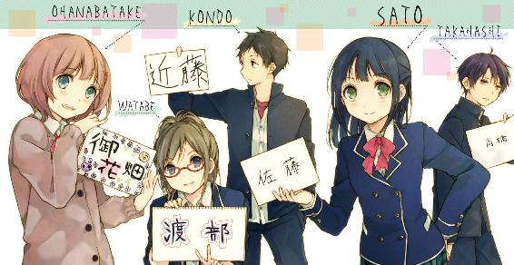

| 僕の学園生活はまだ始まったばかりだ!1 (ファミ通文庫) | |
| 岡本 タクヤ | |

本作品の全部または一部を無断で複製、転載、配信、送信したり、ホームページ上に転載することを禁止します。また、本作品の内容を無断で改変、改ざん等を行うことも禁止します。
本作品購入時にご承諾いただいた規約により、有償・無償にかかわらず本作品を第三者に譲渡することはできません。
本作品は本文縦組で制作されております。ごらんになるリーディングシステムにより、表示の差が認められることがあります。
ひとひらの桜花が、僕の前をふわりと横切っていった。
先を急いでいたはずなのに、つい足を止めて、僕はその行方を眼で追ってしまう。
どこからともなく舞い降りてきた花弁は僕の鼻先を通り過ぎると、地に触れる寸前、強い春風に舞い上げられてゆき、眼に痛いほどの青空へと吸い込まれていくように消えてしまった。手を伸ばせば摑めたのかもしれないが、その一瞬のタイミングを僕は見送ってしまった。空から視線を切ると、僕は再び歩き始める。
学園の正門へと続く道は左右を桜並木が挟んでおり、それは始業式のあたりをピークに一斉に咲き誇る。
だが、つい一週間前には視界いっぱいに咲き誇っていた桜の花も、今はわずかに初春の名残をとどめるばかり。今は先を争うように、短い花の命を散らしはじめている。頭上にあってはこれほど美しい花もないだろうと思えた桜も、地に落ちて人波に踏みにじられ土に汚れると、もともとが綺麗なだけにより一層汚らしく思えてしまう。とは言え桜の花弁は地面を埋め尽くすように散っており、避けて歩くことはほとんど不可能だし、意味がない。
足の裏に桜の花弁を踏みつけながら、僕は正門への道をとぼとぼと歩き出した。
春、新学期、新しい生活がはじまる季節――とはいえ僕は高校二年に進級しただけだ。多くの状況を一年生のときから引き継ぐだけなので、小学校から中学校へ、中学校から高校へ、といった劇的な変化は良くも悪くも望めない。つまり、高校一年生の春夏秋冬を独立独歩、孤高を貫き通したこの僕の状況も完璧に引き継がれるということだ。このままだと引き継ぎは順調に高三、その先の卒業式まで滞りなく続いてしまう。
この一年間、僕は闘った。人と人との繋がりを重んじる世間の常識というものに抗ってきた。友情だの恋だのといったものは広告代理店の陰謀だと心の中で訴え続けた。人間はひとりで生まれてきて、そしてひとりで死ぬのだ。そんなハードボイルドなことも考えてみた。硬派ぶった。孤高ぶった。それが人間として高級な態度なのだと自分に言い聞かせてきた。だが、そろそろ現実というものを直視しなければならない。
そろそろ認めよう。認めざるを得まい。僕が失敗したという、その現実を。
失敗したが、それを認めきれず、意地を張って無駄な抵抗をしていたということを。
完全降伏して認めるから、誰か僕にプレゼントしてください。
友達と彼女と充実した日々の三点セットを。
僕は何もスクールカーストピラミッドの頂点を目指したわけじゃない。ただ、人並みの高校生活を手に入れたかっただけだ。そして僕はそれに失敗した。その理由は明白だ。
それは、僕が部活動に入っていなかったからだ。
だがそんなことを言うと、
「部活は確かに高校生活の重要な要素の一つだけど、帰宅部だって友達くらい作れるよ。君は君のコミュ力の低さを棚上げして部活に責任転嫁しているだけじゃないかい？」
なんてことをしたり顔で言う人がいるかもしれない。というか、僕の脳内でそんな声がした。僕の脳内の人は何もわかっていないと言わざるを得ない。
僕が通うこの私立八百万学園では、他の高校よりも圧倒的に部活動というものの重要性が高いのだ。この学園では部活動・委員会活動への所属率は実に九九・九九パーセントを超え、部活に入らずんば人に非ずといった校風がある。部活動への所属率が携帯電話の普及率より高いのだ。
そう、だから逆に言えば、最初は――去年の四月ごろはそんなに悪くなかった。誰だって入学した時点では帰宅部だからだ。帰属意識の主体は自然と出身中学や高一のクラスになる。僕も当時のクラスメートから部活の見学に行こうと誘われたし、既にどこかの部活に入ったクラスメートからは、自分の部活に入らないかと誘われたこともあった。
でも、僕は帰宅部を貫き通した。
そのうちクラスメートは同じ部活で固まりだし、部活が違う者同士でも、会話の起点がことごとく部活動になっていた。ゴールデンウィークが明け、クラスメート全員がどこかの部活に入部した頃、僕は独りになっていたのだ。
そんな回想をしていると、僕の脳内の人がまたこんなことを言った。
「九九・九九パーセントの生徒が部活に入るなんてこと、入学したらすぐ気付いただろうに、どうして一年生のうちにどこかの部活に入らなかったんだ？」
これは正論のように思えてしまう。いや、おそらく僕以外の人にとっては正論なのだろう。しかし、僕には部活に入れないという事情があった。
僕には一切の部活動に入らないという強い決意があったのだ。
なぜなら、僕はかつて――。
「高橋君！」
そう、かつて高橋君。
あれ？ 違う、高橋は僕の苗字だ。かつてどころか今も絶賛高橋中だ。
つか誰かに呼ばれたような気がしたけど、僕の脳内の人、僕のこと呼んだ？
「呼んでないよ。ていうか僕は君の脳内の人だから僕もある意味高橋だよ」
それもそうか。じゃあさっき誰かに呼ばれたような気がしたのは何だろう。
「幻聴じゃないの？ 可哀想に。孤独に耐えかねて、ついに脳のほうが......」
うるさい！ 僕の脳内の声なんだから、お前だってある意味幻聴じゃないか！
「まあそうなんだけど、そうすると君の気の毒さはさらに倍になるよね」
「うるさいな、僕の脳内の人のくせに僕を傷付けるのか」
「あの、高橋君？」
「あ、今のは脳の中の人である僕にも聞こえた。女子の声だよ、間違いない」
「だよね。女子だ。大変だ。じゃあ一旦脳内自分会議を打ち切るよ」
「まあ待てよ僕、落ち着けよ」
「何だよ、女子だぞ。女子と僕の中の人とどっちが大事だと思ってるんだ」
「あのさあ、冷静になれよ僕。ビークール。この一年間、事務的な連絡以外に女子と会話したことなんかないのに、路上でいきなり名指しで呼ばれるわけないだろう？」
「だって、高橋って呼んだよ。高橋は僕の苗字だよ」
「そこだよ。高橋。僕の名前だ。そいつは日本で三番目に多い苗字だな、僕よ」
「ということは、まさか......」
「そうだよ。調子こいて舞い上がって、でもそれを押し殺した態度でクールに『何？ 呼んだ？』みたいな反応をしたとき、僕のすぐ後ろに立っていた別の高橋君が手を振りながら女子のほうへ駆けて行って、二人で『待った？』『もー、遅いよ高橋君』『ゴメンゴメン。ところであの微妙な笑顔で固まってるヤツ誰？ 知り合い？』『ううん、全然知らないけど。わかんない』『でもお前のほう見てるよ？』『やだ、ちょっと気持ち悪い、行こ行こ』みたいな反応をされたらどうかな？」
「死にたくなるね。僕が魔王だったら世界を滅ぼし、そして僕も無に還るね」
「魔王......？ 高橋君......でしょ？」
「ちょっと自分内会議してるから、悪いけどあとにして――」
自分を呼ぶ声に思わず反射的に振り返ったところで、僕は固まった。
強い風が吹いて、桜の花片が紙吹雪のように舞い上がった。
◇
その子と眼が合った瞬間、僕は思わず息を呑んだ。
視線の先、今まさに風に花片を攫われている桜の樹を背に、ひとりの女の子が立っていた。陳腐な表現をするなら、まるで桜の化身のようだった。
彼女は八百万学園の制服に身を包んでいたが、僕にはその女の子にまったく見覚えがなかった。制服の胸元に光る校章の形からすると、僕と同じ二年生らしい。
肩より少し長めのストレートの黒髪。小さな顔に意志の強そうな大きな眼、通った鼻、薄い桜色の唇がバランス良く配置されている。
体型も肥っておらず、痩せすぎておらず、少女らしい健康的な体を、何の改造もしていない制服に包んでおり、そのシンプルさがかえって素材の良さを引き立てていた。
その少女は、何もせずその場に立っているだけで人の眼を強く引き付けるような魅力に溢れていた。かと言って扇情的なところはまるでなく、あくまでも爽やかで清潔感に溢れた少女性が花の香りのように立ち上っていた。
そんな美少女が、散りゆく桜花を背にして立っている。
この画は漫画雑誌のアイドルグラビアとしても成立するし、学校の入学案内パンフレットに掲載される『学園生活のイメージ図』としても成立する。同じ生徒から見ても、おそらく大人の視点から見ても、完璧で理想的な女子高生がそこにいた。
そんな完璧な外見を持った少女が、自分の名前を呼んでくれた。しかもそれは漫画やドラマやゲームといったメディアの中でなく、現実に、自分の眼の前でだ。
男子生徒が百人いたら九十九人が恋に落ちそうなシチュエーションだったし、かく言う僕の理性もふらふらと誘われるままに恋の谷底に落ちそうだった。だが、この一年間の孤独の中で無駄に培われた人間存在に対する猜疑心と不信感が、恋の谷底の前でぴたりと僕の足を止めた。僕は直感的にこう思った。
◇
「二年三組の高橋君......だよね？」
何度目の呼びかけだろう、彼女は僕の眼を見ながらそう言った。
確かに僕は高橋だ。そして二年三組の高橋は僕しかいない。つまり彼女がいう高橋は僕で確定ということだ。これで人違いという最悪のケースはなくなった。ただし、彼女のほうも僕の顔をはっきりとは知らないようだった。だからこそ学年と組をあげて僕に問い質したのだろう。
「えっと、私、普通科二年七組の佐藤っていいます。実は高橋君にお願いしたいことがあるんだけど......ちょっといいかな」
佐藤と名乗った少女は、微妙な上目遣いで僕の表情を窺ってくる。
こんな美少女にお願いされるなど男子の本懐、何でも言うことを聞いてあげたくなる。
だが、何かが引っかかる。やっぱり噓臭い。なんか演技めいてるというか作り物めいているというか。かわいいことは確かにかわいいけど、なんか引っかかる。
その時点では、疑いは理屈ではなく直感から来るものだった。
だが警戒しつつ相手を観察しているうちに、徐々に思い当たることがあった。
そうだ、これはひょっとして......。
僕は、去年入学時に生徒会から配布された『八百万学園へようこそ 学園生活の心得ハンドブック』の『第二十七章 甘い誘いにご用心』の項を思い出していた。
☆第二十七章 ～モテ期という幻想 甘い誘いにご用心！ の巻～☆
ここまでの章では部活動に関することを取り上げてきました。この学園では、部活動にも委員会にも入らない人間はごみくずよりちょっと下のランクの扱いを受けてしまうということもよくわかっていただけたと思います。
さて、新入生の皆さんはどんな部活動に入ろうか期待に胸を膨らませていることかと思います。入りたい部活がなかったらどうしよう、ごみくず以下の扱いだけはごめんだ、とぶるぶる震えている方もいるかもしれませんね。
でも大丈夫！ この学園にはありとあらゆる部活動が存在するため、きっとあなたにぴったりの部活動が見つかるはずです。先輩方も、きっとあなたの入部を待っていますよ！ でもでもご用心。中には新入生の無防備さにつけこんで食いものにする、とんでもない部活動も存在するのです。
そんなおそるべき悪徳部活動は一見すると他の部活動と見分けがつきません。でも、いくつかのポイントに注意するとそれを事前に見抜くことができます。この章では、過去にあった事例をもとに、悪徳部活動の見抜き方をレクチャーしていきます。
悪徳部活動は、大抵相手がひとりの時を狙って勧誘してきます。特に気の弱そうな男子生徒が狙われやすいのです。奴らは、
「オシャレな人はみんなやっている。楽しいキモチになる。やめたいときにやめられる。ダイエットにもいい」
などと甘い誘い文句であなたを部活に勧誘することでしょう。そして、このような部活動の勧誘にあたる人間は、かなりの高確率で美少女です。彼女らは言葉巧みにあなたの自尊心と危機感をくすぐり、あの手この手であなたを部室に連れて行こうとします。
「これが噂に聞くモテ期か！ スプリング・ハズ・カム！」
と勘違いしたあわれな子羊がのこのこと鼻の下を伸ばしたアホ丸出しの顔で部室についていった途端、部室のカギが後ろ手にガチャリと閉められます。
「やった、エロいことが始まる、高校は中学とはレベルが違うぜ」
という期待に胸を膨らませるのは勝手ですが、そんなうまい話があるならこんなところには書かず、わたしが入部します。
一、パンチパーマ
二、マッチョメン
三、パンチパーマのマッチョメン
四、ミノタウロス
のいずれかのモンスターが待ち構えています。最悪、全部います。
モンスターを返り討ちにして経験値とゴールドを手に入れるのも一つの方法ですが、残念ながら勧誘部隊が狙うのはレベルの低そうな冒険者と相場が決まっていますので、無駄な抵抗はやめたほうが無難です。そもそも人生における経験値が低いからターゲットにされたのです。ちなみにイベント戦なので逃げられません。
あとは入部届に無理矢理サインをさせられ、悪徳部活動の下部構成員としてこき使われたり、部員のノルマとして高級羽毛布団を買わされたり、ラッセンとカタカナでサインがしてあるイルカの絵を買わされたり、マッチョの筋トレ道具にされたりといった様々な被害例が報告されています。いずれにしろ部室に入った時点でケツの毛までむしられるのは確定です。潔く諦めてください。
このような悪徳部活動の勧誘は、最初にはっきりと拒絶することが肝腎です。しつこく勧誘された場合でも、相手の部室に入らなければ大丈夫です。いくらパンチパーマでも、通行人の沢山いる路上でカタギの生徒に手を出すことはありません。
なお、万が一むしられた方は、涙を拭いて速やかに風紀委員会まで通報してください。
風紀委員がやさしく慰めてさしあげます。風紀委員会については、ハンドブックの三十七章『低脳でもわかる風紀委員会のしくみ』をご参照下さい。
僕は心の中でそっとハンドブックを閉じた。あのハンドブックの忠告に従わず帰宅部を貫いていた僕は、今まさにごみくず以下の扱いを受けている。ということはあのハンドブックはやはり正しかったのだ。ということは、この美少女は......。
そうだ、間違いない。こいつは秘密結社パンチ＆パーマの手先だ。
「あのね、話っていうのは」
「僕のようなごみくずが君のような美少女に声を掛けられるいわれはないっ！」
僕は一喝した。こういうのは最初が肝腎なのだ。
佐藤という少女は一歩後退ると、
「......えーと、私......褒められたの？ ......ありがとう」
戸惑ったようにはにかんだ。どうやら僕は対応を間違ったようだ。
相手を褒めてどうする。しかも僕自身に少しダメージが来た。
「それはさておき高橋君、ちょっといいかな」
彼女は微笑みながら会話を元に戻そうとする。だが、笑顔に押されてはいけない。
「君の正体はわかっているんだ。君はアレだろ、悪徳部活動なんだろ？」
僕はできるだけ感じ悪く、そう言い返した。
「悪徳部活動？」
「新生活でゆるんだ心の隙間に入り込んで、僕からいろいろむしるつもりなんだろうが、そうはいかない」
「むしる？」
「毛とかお金とかだよ、いろいろ」
「安心して、私はむしらないわ。握力そんなに強くないし」
「君の握力が弱くたって、その背後には握力しか取り柄のないような連中が控えているとハンドブックに書いてあった」
「ちょっと言っている意味がわからないんだけど、落ち着いて聞いて。話を聞くだけでもいいから」
「聞くだけ？」
ハンドブックには部室についていかなければ大丈夫と書いてあった。
「まあ、聞くだけなら......それで、何」
ところが、佐藤さんの口からは想像だにしていなかった言葉が飛び出してきた。
「あなたは六年前、少年野球チーム『三丁目シティボーイズ』のエースピッチャーだった高橋君よね」
佐藤さんがそう口にしたとき、僕の脳裏にあの栄光の日々が鮮やかに浮かび上がった。
あの栄光の、そして挫折の日々が。
「――なぜそのことを......！」
一陣の春風が、僕と佐藤さんの間を吹き抜けていった。
「やっぱり、そうなのね」
佐藤さんが僕の眼を真っ直ぐに見据えながら呟く。
そうだ。確かに小学生の一時期、僕は少年野球チーム『三丁目シティボーイズ』のエースピッチャーにして四番バッターだった。僕にとっては遙か遠い過去のこととはいえ、まだ六年しか経っていないともいえる。当時のチームメイトか、それとも対戦相手か――僕の過去を知っている人間がこの学園にいてもおかしくはない。しかし、あれから何年も経った今、どうしてそんなことを......。
僕は困惑しつつ、佐藤さんの表情を窺った。よく見れば美少女というだけではない。この子は何という澄んだ眼をしているのだろうか。僕は馬鹿だった。愚かだった。こんな澄んだ眼をした女の子が悪徳部活動の部員なわけがない。カルト宗教の手先であったりマルチ商法の勧誘員だったりするはずがない。僕にはもう彼女の正体が完璧にわかっていた。
そうだ、ヒントは最初から僕の眼の前にあったんじゃないか。
桜、四月、新生活の季節、部活動の勧誘に勤しむ生徒たち。
部員の勧誘活動をしているのは、何も悪徳部活動だけじゃない。
そう、彼女は僕の過去の栄光をどこかで聞きつけ、スカウトに来た野球部のマネージャーに違いない。悪徳部活の手口じゃないが、丸刈りの男たちが勧誘するより女子マネが勧誘したほうが効果的なのは明らかだ。
こんなかわいい女子マネに見守られながら白球を追いかける――そんな青春の形もあり得るのかもしれない。そんな光景を、ほんの一瞬だけ想像してしまったことも事実だ。
けれど、いくらかわいい女子マネに誘われても、僕の決意は固い。
僕には部活に入れない理由があるのだ。
「エースだった高橋君......よね？」
確認するように、佐藤さんはそう繰り返した。
「......確かにそうだよ。でも、昔の話だ。今の僕に、君を甲子園に連れて行くことはできないんだ。僕は野球部には入らない」
斬り捨てるように言うと、僕は彼女に背を向けた。
これ以上あの澄んだ眼で見つめられていると、僕の決意が揺らぎそうだった。
未練を振り切るように、僕は学校の外の世界に向かって走りだそうとしたが、
「待って高橋君！ あなたは少年サッカーチーム『ファザーキッカーズ』のエースストライカーだった高橋君よね！」
今にも地面を強く蹴る寸前で僕は足を止めた。
確かにそうだ。確かに僕は『ファザーキッカーズ』のエースだった。
僕はゆっくりと佐藤さんを振り返った。
佐藤さんは相変わらず澄んだ眼で僕のことを見つめている。
そうか。彼女はおそらくサッカー部のマネージャーも兼ねているのだろう。野球部がダメならサッカー部への勧誘をしようということか。なんて働き者なんだろう。美少女であるだけでなく、働き者で、眼が澄んでいる。きっと心も綺麗なはずだ。
こんなかわいいマネージャーからの声援を受けながら、たのもしいチームメイトたちとともにフィールドを駆け回る――そんな青春の形もあり得たのかもしれない。
でも、ダメだ。僕はサッカー部にも入れない。球技をえり好みしているわけじゃない。僕はもう二度とボールには触れない、そうあの日に誓ったんだ。
「......確かにそんな頃もあった。でも、昔の話だ。君を国立競技場に連れて行くことはできない。君の心のゴールネットを揺らすことはできないんだ」
「高橋君......」
佐藤さんが名残惜しそうに小さく僕の名を呟いた。
ダメだ、これ以上彼女と見つめ合っていると、僕の決意が揺らぎそうだ。もう二度と部活動なんかに入らないというあの鉄のような決意が！
「待って高橋君！ あなたは伝説の猫騙し職人と呼ばれた天才少年力士、高橋君よね！」
背にかけられた佐藤さんの言葉に、僕は三度足を止めた。
なぜ、そんなことまで。
確かに僕は三十三種類の猫騙しを操る、猫騙しのデパートと呼ばれた少年横綱高橋だった。そうか、この子は相撲部のマネージャーも。ちょっと掛け持ちしすぎの感はあるけれど、野球とかサッカーとかモテ系の球技だけでなく、相撲のように女子からは敬遠されがちな部活のマネージャーまでしているというのはむしろ好感が持てる。
この子は交際相手を物色するためではなく、きっと純粋にスポーツに打ち込む少年達を応援したいと思っている、心の美しい少女に違いない。
そんな彼女の心を傷付けるのは本意ではないけれど、でも、やっぱりダメだ。
「確かにまわしを締めていた日もあったよ。でも、猫騙しで何とかなったのは小学生だったからさ。僕の体格じゃ高校相撲は無理だよ。だから君を国技館に連れて行くことは......高校相撲の全国大会って国技館でやるのかな？ とにかく僕はもうまわしを締める気は......」
言い終わらないうちに佐藤さんが言葉をかぶせてきた。
「天才少年画家で、かつ天才ロック少年だった高橋君よね！」
何ということだ。彼女は美術部や軽音学部――運動部だけでなく文化系部活動のマネージャーまでやっているのか。ちょっとマネージメントを頑張りすぎではないのか。
「確かにそうだけど、運動部が嫌なわけじゃない。文化部だって無理なんだ。僕はもう二度と部活なんかしない、そうあの日に誓ったんだ。だから......」
「創作落語『いけない薬の副作用のせいでまんじゅうが話しかけてきてこわい』で寄席を爆笑の渦に叩き込んだ、あの天才落語少年高橋君よね！」
「そんなことまで知ってるのか......。だけど、僕はもう扇子を置いたんだよ」
「あなたは天才棋士で、天才カレー職人で、天才ボクサーで、天才ラッパーで、大人気ブロガーで、あやとりマスターで、折り紙のファンタジスタで、カバディの魔王で、カーリングの皇帝で、ピアノの魔法使いで、バックギャモンの魔術師で、伝説の乗り鉄で、行列のできる占い師で、セロリが苦手で、童貞で、性格がいちじるしく歪んでいる上にコミュ力もないから友達も彼女もできないだけなのに自分ではそれを認められず校風に責任転嫁をして自分の心を安定させている気の毒な高橋君よね！」
「......君ね、リズムで言えば僕が全部肯定すると思ったら大間違いだよ」
「え、違う部分あった？」
「終盤の部分は肯定するのにためらいをおぼえるけれど、まあ中盤まではその高橋だよ。そうだよ、僕が天才少年高橋だよ」
「おかしいわね......。情報は全て正確なはずなのに......」
佐藤さんは微かに首を傾げる。
後半の真偽はさておき、僕が数々のジャンルにおいて天才だったことは事実だ。
だが、僕はこの学園に入学以来、誰にもそれを話したことはないし、誰からもそれを指摘されたことはない。なのに、この子はなぜそれを知っているのだろうか。
「あのさ、佐藤さんだっけ？ 君、いったい何なの？ 僕のストーカー？」
「確認なんだけど、童貞っていう部分はあってる？」
「人の質問をあなたは童貞ですかっていう質問で返しちゃいけないってお父さんに教わらなかったのか」
「うん。私のお父さんたぶん童貞じゃないから......」
「お父さんという存在は大体そうだよ。......だから、君はいったい何者？」
「えっと、私、普通科二年七組の佐藤っていいます」
「僕は普通科二年三組の高橋っていいます、よろしくお願いします。ってちげーよ、そうじゃなくって、なんで僕の過去のことを知ってんの？」
僕は佐藤さんを睨み付けた。
よく見たらかわいいことはかわいいけど、眼が澄んでいると思ったのはただの光の加減だった。むしろなんか邪悪な感じに眼が濁っている。関わり合いにならないほうがいい。もう一度、はっきりと拒絶を示すべきだ。
「とにかく君が何部のマネージャーでも、僕はもうどこの部活にも入る気はないんだ」
「高橋君、本当にどこの部活にも入らないの？」
「そうだよ」
「これからも、ずっとひとりでやっていくの？」
「......そうだよ！ 悪いか！」
僕は突き放すように怒鳴った。すると、佐藤さんは少し怯んだように後退った。相手の眼が濁っているとはいえ、さすがにちょっと悪いような気もしてくる。
でも、僕はもう部活なんかに関わって、あんな思いをするのは二度とゴメンだ。
「僕はもうどこの部活にも入る気はない。あとなんか君、けっこうナチュラルに僕に酷いこと言ってるし。じゃあ、そういうことで――」
僕がその場を離れようとしたその時。
佐藤さんは不意に僕の手を摑むと、自分の掌でそっと包んだ。
「――！」
細い指のぬくもりが、僕の手に伝わってくる。
気付けば間近に、佐藤さんの顔があった。
邪悪な眼をしていると思ったのは目の錯覚で、やっぱり彼女の眼は澄んでいた。
僕の眼を見つめるだけで、佐藤さんは何も言わない。
だが、言葉よりも雄弁なものが伝わってくる。
彼女のぬくもりが、かたくなだった僕の心の氷をゆっくりと溶かしていく。
僕は決めた。決意した。
――愛に生きよう。そして、すっぱいブドウ的に見て見ぬ振りをしてきた充実した学園生活を、今度こそ手に入れよう！
「僕は......もう二度と部活になんか入らないって決めてた」
「......うん」
「だけど、君が僕を必要としてくれるのなら、僕はもう一度だけ、何か部活を頑張ってみてもいいかもしれないって、そう思うんだ。野球部でもいい、サッカー部でもいい、相撲部でも柔道部でも、鉄道研究会でも落語研究会でもカレー部でも何でもいい。何ならこの際、悪徳部活動だっていい。パンチパーマをあてたっていい。君が僕を必要としてくれるなら、僕は何部にだって入るよ！」
「ううん、いいの。高橋君は部活なんか入らなくったっていいの」
「え？」
「ていうか入らないで」
「ええ？」
僕の手を握る佐藤さんの両手に力が籠もった。
「入るんじゃないわ。作るのよ」
「作る......って、部活を？」
「そう、新しい部活動を作るのよ。その無駄に溢れる才能をもって、この学園を陰から支配する部活動を作るのよ！ それができるのは高橋君、あなたしかいないの！」
間近で見た佐藤さんの眼は、澄んでいるのか濁っているのかよくわからなくなってきた。
◇
「私、アイスカフェオレ。高橋君も何か飲む？」
「じゃあ......とりあえずブレンドかな」
「マスター、アイスカフェオレとブレンドをお願いします」
佐藤さんがカウンターの奥に声を掛けると、髭のマスターが振り返って微笑した。
「かしこまりました。アイスカフェオレとオリジナルブレンドでございますね」
マスターは浅く一礼すると、コーヒーを淹れる作業に取り掛かり始めた。
僕と佐藤さんは、とりあえず腰を落ち着けて話をすることにして、ここをその場所に選んだのだ。客は僕らの他には誰もおらず、込み入った話をするには最適のようだった。
店内にはマスターが選んだらしいスローテンポのジャズが、空間を満たすようにゆったりと流れている。間もなく、僕らの前にそれぞれの飲み物が運ばれてきた。
「お待たせしました。佐藤様にはアイスカフェオレ、そしてこちらがオリジナルブレンドでございます」
佐藤さんはマスターと馴染みらしく、名前まで覚えられているようだ。
カップを受け取ると、コーヒーの芳ばしい香りが鼻の奥を衝いた。
「僕はこう見えてもコーヒーにはうるさいんだよ」
そう言って口を付けた瞬間、えも言われぬ芳醇な感覚が口内を駆け抜け、心地良い熱を伴って舌を撫でながら喉の奥に滑り落ちていった。褐色の奔流が駆け抜けていったあとには、僅かな苦みと心地良い芳ばしさが残される。その苦みも決して不快ではなく、苦みという味覚が本当は心地良いものであると気付かされる。
「これは......！ うまい......！ いや、むちゃくちゃうまい！」
お世辞ではなく、今まで飲んだコーヒーの中でも一番美味い。というか、コーヒーとはこのような飲み物だったのかと眼を開かされた思いだ。
僕はこの感動を何かにたとえて表現したいという衝動にかられた。
「これはコーヒーの......コーヒーの......まるでブラジルの大地に広がるコーヒー畑や！」
「そのまんまじゃない。高橋君そういう方面の才能はないのね」
「うちのブレンドはコロンビアの豆を使用しております」
マスターが余計な補足を入れた。
傷付いた僕は俯きながらコーヒーをすすった。うまい。
「食堂の自販機でジュース飲むくらいだったら、ここでお茶したほうがいいでしょ」
ここは学校近くの純喫茶――ではない。学校内の、とある部室の中だ。
「こんな部活があるなんて......ていうか部活に関する情報をほとんどシャットアウトしてたから、何部があるかも全然知らなかったけど」
部屋の中を見回してみるが、僕らがいま座っている木造のカウンターといい、サイフォンやカップが並んだ煤けた棚といい、年季が入っていそうなアンティーク調の調度品といい、どこからどう見ても高級志向の純喫茶にしか見えない。
だが、ここは紛れもなく喫茶部の部室なのだ。
「ありがとうございます」
そう言って微笑む髭のマスターも社会人ではなく、高校生である。
喫茶部部長、商業科三年生の来夢礼人先輩だ。
と、さっき佐藤さんから紹介された。
「よろしければ部長でも先輩でもなく、マスターとお呼び下さい」
と言われたので、僕もマスターと呼ぶことにする。
しかし、これはただの喫茶店ごっこのレベルではない。ことコーヒーを淹れるという一点のみにおいてもこのレベルの職人が存在するということは、この学校の部活動のレベルは尋常じゃなく高いのかもしれない。喫茶部が凄いだけという可能性もあるが。
「......えっと、じゃあそろそろさっきの話の続きなんだけど、僕に部活を作れってのはどういうこと？」
「その前に最終確認なんだけど、高橋君は天才なのよね」
「まあね。ってかそれは君が調べたとおりだよ。でも僕が天才なのと、部活を作れってことと、何の関係があるんだ」
佐藤さんはアイスカフェオレで喉を潤し、僕に顔を向けた。
「私はこの一年、私のパートナーたりうる人間を探していたの」
パートナー。直訳すれば相棒、相方、配偶者。
「ああ、そういうことか。わかったよ」
わかった、ようやくわかった。最終的に理解した。素敵な結論に辿り着いた。
「つまり僕と男女交際をしたいと、そういうことだね」
「違うわ」
サクッと否定された。
「じゃあ何なんだよ。僕を部活に誘ったわけでもないんだろ。漫才コンビでも組もうってのかよ。あ、そういや結局佐藤さんは何部の人間なんだ」
「私は部活入ってないわよ」
「え......？ ってことは佐藤さんも帰宅部なのか。僕と同じごみくず以下なのか」
「違うわよ。私は委員会のほう」
八百万学園においては部活動に入らずんば人に非ず――という校風がまかり通っているが、部活に入らなくても人間並みの扱いをされる場合がある。というかヘタな弱小部活に所属するよりも偉ぶれる団体がある。
それが生徒会と、その下部団体である各種委員会である。
「ってなことは大体知ってるんだけど、詳しくは全然知らない」
「ざっくり説明すると、生徒会の頂点が生徒会執行部という組織なの。そしてその下に風紀委員会だとか、経理委員会だとか、学園祭実行委員とかがあるわけ。私が所属してるのはそういった下部委員会のひとつ、部活動管理委員会」
「ブカツドウカンリイインカイ......」
どう考えても部活動を管理する委員会だ。
「で、話を戻すけど、私の野望には高橋君、あなたが必要なの」
「ヤボウ？」
そんな言葉、信長という枕詞なしには聞いたことがない。まして同級生の女の子の口から聞くとは思わなかった。
「ここだけの話にしておいて欲しいんだけど、私はね、次期生徒会長選に打って出ようと思ってるの」
「生徒会長に――じゃあ、それが佐藤さんの野望ってやつ？」
「そう」
なるほど、佐藤さんは見た目通り自己顕示欲と上昇志向が強いタイプのようだ。
「でも、その野望に僕がどう関係すんの？ 一票入れろってこと？」
「高橋君は自分を過小評価し過ぎよ。高橋君は何百票、ううん、千票以上の可能性を秘めているわ」
「そうかな」
僕は平静を装っていたが、心の中では深い感動に打ち震えていた。さすが生徒会長になろうという人間は違う。僕という人間の価値を正確に理解している。
「高橋君、この学園の特色って何だと思う？」
特色と言われて、真っ先に思い浮かぶのはあのことだ。
「単純に、人が、生徒数が多いってことじゃないのか」
私立八百万学園は大きい。とにかく大きい。さすがに八百万人も生徒がいるわけではないが、少子化とかウソなんじゃねーの、っていうくらいにはいる。
「うん、とりあえず正解。じゃあ、生徒数が多いと何が増える？」
「何がって......クラス、教室？ 先生の数？」
「でも、それって他のマンモス校でも同じでしょ？ うちの学校の特色は？」
「特色......」
考えながら何となく視線を室内に這わせたとき、その答えを思いついた。
「――ああ、部活か」
「正解」
佐藤さんは嬉しそうに人差し指をピンと立てた。
八百万学園の部活動は中小規模の学校に比べると、圧倒的に種類が豊富だ。これは考えてみれば当たり前のことで、生徒の母数が多ければ、それだけ細分化した趣味を持つ集まりができる。マイナーな趣味でも一つの団体として成立することができる。
たとえば全校生徒が十人の学校だと、これは野球部を作ることさえ難しい。野球は最低でも九人のメンバーが必要なスポーツだからだ。
これが全校生徒が三百人の学校だと、まず間違いなく野球部やサッカー部が存在する。三百人、その中から男子が半分だとしても、百五十人の中から九人、或いは十一人、野球やサッカーに興味がある人間を集めることは簡単だ。一方で、カバディ部はまず存在しない。一チーム七人と、必要な最低人数が野球より少ないにもかかわらず。なぜかと言えばカバディが日本ではマイナースポーツで、カバディ経験者はもとより、興味があるという人間も三百人の中に一人いるかどうかというくらいだからだ。
しかしこれが三千人の学校だと――高校でその規模の学校は少ないが、大学ならそう珍しくもない――カバディサークルが存在したりする。三百人の中で一人しか興味を持たない趣味でも、母数が三千人であれば十名の団体を作れるという理屈だ。
そして、それは設備面でも同じことが言える。学校の規模が大きければ大きいほど、スケールメリットによって、プール、コンピュータールーム、トレーニングルーム、武道場、弓道場、防音室、小劇場、校内菜園、懺悔室、座敷牢、闇の祭壇などといった特殊な設備を備える余裕ができる。そうすると、そういった特殊な設備を必要とする部活動も容易に成立する。
そんなわけで、八百万学園の部活動は豊富である。
「でも、そこまでは他のマンモス校でも同じ理屈が通用するでしょ」
佐藤さんが言うには、八百万学園の特色はここかららしい。
総生徒数が多いことにプラスして、八百万学園では部活を作るためのハードルが非常に低い。たとえば多くの学校では、部活を作るときにはまずその前段階として、同好会なるものの設立が義務づけられていることが多い。同好会を作る段階で、最低人数五人を集めること、なんて規定があったりもする。そうやって同好会を作ってから一定の活動実績が認められた場合、そこで初めて部活動への昇格が認められるのだ。
ところが八百万学園ではいきなり部活動が作れる。しかも、一人から部活が作れる。
そのため、新規の部活動が作りやすいのは勿論だが、既存の部活動が簡単に分裂してしまう。そんなわけで、万単位の生徒を擁する八百万学園には、大小合わせて約四百の部活動が存在する。
「ってことなのよ」
「僕が部活動から遠のいていた間に、世の中はそんなことになっていたのか......」
「世の中っていうかこの学園だけどね。ただし部活の数が四百ちょっとだったのは、私たちが入学した時点でのことなの」
「え？ てことは今はまた違うの？」
「今は確認できるものだけで、千くらいかな」
「たった一年で二・五倍......!?」
そもそも生徒数に対して四百という部活の数が適正だったのかどうかもわからないが、それがたった一年で二・五倍になってしまうというのはどう考えても異常だった。
「それもこれも全部、あの御花畑のバカが......」
「お花畑？」
「とにかく、ただでさえ多かった部活動が、この一年で更に増えちゃったの」
「ハイ、質問です！」
「高橋君、質問を許可します」
佐藤さんはカフェオレのストローで僕を指した。
「佐藤さんが生徒会長選に出るって話だったよね？ 何で部活の話になってんの。部活関係なくね？」
「大ありよ。政治家の選挙だって、個々人に政策を訴えるという側面も確かにあるけれど、同時に企業や様々な団体、つまり人間の集団の支持を得ることが重要になってくる。生徒会長選挙でもそう。建前上は生徒一人一人が自主的に選んだ候補に投票するってことになってるけど、本当は、その候補がどれだけ多くの部活動の支持を得られたかにかかってるのよ。そして生徒会長の椅子を狙うくらいデキる子は、既にその事実に気付き、着々と準備を始めているわ」
自画自賛を取り混ぜながら、佐藤さんは八百万学園の生徒会長選挙における基礎知識を僕にレクチャーしてくれた。
「有力な部活をバックに付けることが、選挙戦を有利に進めるカギになると」
「そうそう。理解が早いわね。そして、陰でそんな工作をしやすいからこそ、私は生徒会の中でも、色んな部活と横断的に触れ合うことになる部活動管理委員会を選んだのよ」
「で、それに何で僕が関係あんの？」
「私はこれから先、全校の様々な部活と渡り合っていかなくちゃならない。海千山千の部活動を懐柔して味方に付けたり、時には争ったりすることもあるはず。向こうだって、自分が支援した人間が生徒会長になったら見返りが期待できるから、慎重に相手を選ぶ。そんな時に、どんな部活相手でも能力を発揮できる人材が必要なの。そして、それができるのは万能の天才である高橋君しかいないの！」
「確かに僕は天才だからそんなことができてしまうかもしれない......！」
「そうよ、高橋君ならきっとできるわ！」
「じゃあもう一つ質問」
「なに？」
「なんかもう僕が引き受けること前提みたいな感じで話が進んでるけど、それ僕に何のメリットがあんの？」
訊いたとたんに、佐藤さんの表情が固まった。
◇
「......え？」
「いや、だから、僕が佐藤さんの野望を手伝うことで、僕に何のメリットがあんの？」
数秒間――ひょっとしたら十秒以上経っていたかもしれない。まるで僕らの間の時が止まったようだった。ゆっくりとしたジャズの旋律だけが、僕らの間を踊るように駆け抜けていった。おしゃれ。
「高橋君、私そういう『これをしたら何がもらえるの？ 見返りに何してくれるの？』的な現代っ子感覚はキライだな。青春の輝きってそういうものじゃないじゃない？ もっと闇雲に何かに打ち込むことで見えてくるものもあると思うな」
佐藤さんは眼を泳がせながら、上滑りした言葉を並べてきた。
「僕そういう青春とか愛とか情熱とか人間的成長とかいう抽象的なキラキラした言葉を振り回せば他人のお金や労働力を一方的に搾取しても許されるっていう感覚キライだな」
「うっ」
再び時が止まった。こぽこぽと、サイフォンの立てる音が耳に届いてくる。
僕は冷めかかったブレンドコーヒーを一気に飲み干した。うん、冷めていても美味い。喫茶部にはまたお邪魔させてもらおう。
「じゃあ僕そろそろ帰らないと。今ならまだ見ようと思ってた時代劇の再放送に間に合うんで」
僕はカップを置いて立ち上がった。
「いやいやいや、待って待って、ちょっと待って」
佐藤さんが僕の袖を摑んで引き留めるので、仕方なく、上げかけた腰を下ろす。
「ていうか佐藤さんはそういう見返りとか何もなしに僕が協力するとか思ってたの？」
「だって私、男子に何か頼み事して断られたことないから......じゃ、じゃあ私が友達になってあげるから！ ね！」
友達になってあげるから言うことを聞けとは、何という天上レベルからの上から目線。
そんなことを平然と言いながら、佐藤さんは眼を潤ませて上目遣いに僕を見る。その保護欲を刺激する絶妙な表情を見れば、男子に頼み事を断られたことがないというのも噓ではないことがよくわかる。しかし、ここで甘い顔をしてはいけない。
というのは、僕の作戦はこうだ。
正直、別に佐藤さんのことを手伝ってもいい。どうせ帰ってもすることもないし。
というか、手伝うのに全然やぶさかではない。
もともと僕は、孤独な学園生活という現状をどこかで変えたいと思っていた。
そんな中で、佐藤さんが僕の前に現れた。そして、自分を手伝ってくれという。
こんなうまい話はない。
まあ人格はさておき顔は文句なくかわいいし、それに、人格はアレでもおそらく社交的だ。友達の友達はみな友達になれる可能性がある。佐藤さんを介することによって、僕も社会復帰ならぬ学園復帰が果たせるかもしれない。
だが、だったらなおのこと、佐藤さんに僕のありがたみをわかってもらわなければならないのだ。こんな天才がゴロゴロ落ちていると思われてはいけない。
もう少し粘って、良い条件を引き出す。僕の価値を上げる。価値が上がりきったところでポンと売る。これが天才高橋ならではの交渉術である。
「高橋君、本当に私を手伝ってくれないの......？」
「まあ、僕も色々と忙しいわけでね、色々とね」
「そう......じゃあいいわ。時間取らせて悪かったわね。さよなら」
え？ あれ？
「マスター、お会計お願いします」
「あっ」
「何？ 心配しなくてもコーヒー奢るのは約束したから、ブレンド代は支払っておくわ」
佐藤さんは制服のポケットからサイフを取り出すと、五百円玉を取り出してカウンターに置いた。
「いや、そうじゃなくて、やけにものわかりがいいっていうか、引き下がるのが早いっていうか」
「だって迷惑なんでしょ？」
さっき目の端に浮かんでいた涙はいったい何だったのか、佐藤さんはとてもドライな視線を僕に注いでくる。
「いや、迷惑っちゃ迷惑だけど、でもまあ、条件次第では協力することもやぶさかではないみたいな心境なんだよね」
「帰って時代劇の再放送見るって言ったじゃない。そうすれば？」
「まあそれでもいいんだけど、佐藤さんが困ってるのもわかるし、何かもう一押しすれば僕も心変わりするかもしれないよ？」
「ううん、もういいの。高橋君みたいにそういう、たった一度しかない高校生活のデビューに失敗して、残った二年も鬱屈して過ごすハメになるんだろうなって思ってたときに、もういちど再起して友情とか恋とかステキなものを育む千載一遇のチャンスがポロッと転がってきたのに、それに手を伸ばさないで、向こうから歩み寄ってきて手を引っ張って色々とケアしてくれるならやってもいいけど自分からは別に、的なあえて捻くれてみせることがカッコイイみたいなスタンスをとって、結果的に無意味に孤独を貫くっていう生き方も個人の自由だと思うわ。そうやって五年後とか十年後とかに高校生活を振り返って『あのときああしていればよかった』とか『佐藤さんかわいかったな』とか『大宇宙の声が聞こえる......僕はえらばれし者......！』とかブツブツ部屋の壁とお話しする未来にむかって着実に歩いて行くって選択肢もアリだと思うわ」
「いや、僕はあんまりアリだと思わないな」
「そういう高橋君の孤高のライフスタイルを邪魔してゴメンね。私には一ミリもそういう生き方理解できないけど、高橋君がそれでいいならいいんじゃない？ じゃあ、さよなら。もう一生お話しすることもないと思うけど念のため高橋君に関する情報は脳の皺からきれいに削除しておくから、私のことも忘れて。お互い完全な他人に戻りましょう」
佐藤さんはマスターのほうを向いて会釈すると、スカートの裾を払って席を立った。
「あっ、いやいや、待って佐藤さん！」
僕が必死に呼び止めると、佐藤さんは振り返った。が、その眼がおそろしく冷たい。
「何、っていうか誰？」
「はや！ 記憶の抹消はやっ！」
「その鬱陶しい突っ込みかたは何？ なめてるの？ 私ってそういうＴＰＯをわきまえない上に洗練されてないツッコミされるとイライラするんだけど」
「いや......すいません......」
「で、誰。聞いてあげるから自己紹介して」
「ぼく高橋っていいます、天才です」
「ふーん。で？」
「......よかったら僕とお友達になってください」
「え......嫌ですけど......」
「いやいやいや、そこを何とか、とりあえずご検討していただくだけでも」
「じゃあ、高橋君と友達になることで私にはどんなメリットがあるの？」
「えーと、天才なんで、色んなことに才能を発揮できます。それで、まあこれはたとえ話なんですけど、この学園において生徒会長になりたいという野望を持った美少女がいたとして、その人が僕の才能を必要としてくれているなら、僕はそれを助けることができるかもしれない」
「でもそんな人っていないんじゃない？ 高橋君のことを必要としている上に美少女なんて、ちょっと都合良すぎると思うわ」
「それがいたのです。それはあなたです」
「......あのさあ、高橋君だっけ？ ちょっとそこに座って？」
「はい。というかすでに座っていますが」
僕は椅子に深く座り直した。
「正座よ、正座。床にね」
「......はい」
僕は椅子から下りて、直に床へと正座した。ふとカウンターの向こうを窺うと、マスターがカップを磨きながら滋味溢れる表情でこちらを見ていたが、やがてそっと眼を逸らしてくれた。僕は真のホスピタリティをみた。
「高橋君、結論としては、友達として私に協力してくれるってことでいいの？」
「はい、ぜひ協力させてください」
僕は正座したまま、前に立つ佐藤さんを見上げた。僕を見下ろす眼はまだ冷たい。
「えーっと......何橋君だったっけ？」
「高橋です」
「高橋君。さっきは嫌がるそぶりみせてたじゃない。あれは何？」
「いや、何て言うんですかね、それは......」
「言っておくけど、適当に誤魔化したら今度こそ記憶から完全に消すから。ゴミ箱を空にするから。それが嫌なら正直に」
完全デリートは困る。僕は肚を括って、本心を正直にぶっちゃけることにした。
「あれはまあ、一つの駆け引きってやつですよ」
「駆け引き？」
「つまりですね、佐藤さんのような美少女にものを頼まれたからといってホイホイ飛びつくようでは安い男と思われるかもしれないし、なんか佐藤さんが調子こいて自分の言うことなら何でもきくお手軽な男みたいに僕のことを扱うかもしれない。というかこの女は自分がかわいいことを鼻に掛けて、そうやって生きてきたフシがある。それはむかつく。であるならばここはひとつ、一旦は難色を示して拒絶し、その後佐藤さんが追いすがってきたら、いい感じのところでようやく渋々受け容れるというポーズをとる。それによって佐藤さんと僕との関係が僕が主、佐藤さんが従になり、今後の展開も僕が主導権を握ることができる。そうやって、面倒だけれども根が優しいから佐藤さんを見捨てられず、仕方なしに協力してあげる強くて優しくてニヒルでクールで繊細な天才少年高橋、という自己演出をしてみたかったのです。やれやれだぜ、佐藤さんにも困ったもんだぜ、とかやってみたかったのです」
僕はもうやけくそで全部ぶっちゃけた。
「そういうゴミみたいなプライドとブザマな駆け引きとご都合主義な未来予想図のせいで、千載一遇のチャンスが全部ご破算になることだってあるのよ？」
「......すいません、事務的な内容以外で同級生と、というか女子と話すのが久し振りだったものですから、ちょっと舞い上がって調子に乗ってしまいました」
「まあいいわ。高橋君の言い分はわかった。そうね、男の子だもんね、自分を大きくみせたいときだってあるわよね」
「ご理解いただき恐縮です」
「じゃあ私も高橋君に一ついいこと教えてあげる。ニヒルでクールで繊細を気取るには天性の才能が必要なの。才能がない人が真似をしようとしても、嫌味で陰気で被害者意識の過剰なボンクラにしかならないの。わかった？」
「はい、理解しました。百パー把握しました。うわあ、僕って理解が早いなあ」
「そういうのもむかつくのよね。調子乗らないで」
「あ、はい、すいません」
「でも、どうして私のことを手伝ってくれるの？ いま記憶が戻ったんだけど、さっきは自分のメリットがどうこうとか言ってなかった？ 言ってたよね？ 仮に私が高橋君の友達になっても、高橋君にメリットがないなら悪いわ。私そこまで図々しくないし」
「いや、僕にもメリットがあることに今気付きました。それはですね、佐藤さんがすばらしい人だということです。優しくて頭が良くて人望もあって、こんな人と友達になれたなら、こんな僕ももう少し上等な人間になれるかもしれない、人間的成長が見込めるかもしれない、なんてことを思うのです。人は人によってのみ磨かれるのです」
「うっそくさいなあ」
「はい？」
「なんか全面的に噓臭いのよね。正直に言えって言ったじゃない」
ダメだ、まだ眼が冷たい。僕は肚を括って本心２・０をぶっちゃけた。
「正直言いますと、現時点で僕が魅力に感じているのはあなたの顔です。ツラです。フェイスです。まあ乳とか腰とか尻も含めた全体的な外観ですよね。あなたはこれが非常によいと思います。ほぼ初対面で人格とか知らなかったんで、ていうか現状その人格には既に若干引き気味ですが、まあ顔がかわいいからいいです。むしろ顔がかわいいから人格面の問題はとりあえず棚上げしようと考えています。そんなわけであなたの内面とかはどうでもよくて、外面に魅力を感じました。そして、高二男子的には、かわいい女の子が友達だとこれはもう勝ちなのです。むさくるしい男百人の友達より、美少女ひとりのほうが勝るのです。実際の関係性がどうあれ、親密な感じで隣を歩いていただけると超ありがたいのです。僕は優越感を抱きたい、そして勝ちたい。世間に、これまで背を向けてきた青春的な何かに！」
僕はもう完全に全部ぶっちゃけた。ぶっちゃけすぎてもうどうでもよくなってきた。むしろもう早く帰って『暴れん坊大僧正Ⅳ』の再放送が観たい。前回の予告編に出てきた謎の浪人の正体が早く知りたい。どうせここまでぶっちゃけたところで、というかぶっちゃけたがゆえにキモイとか言われるに決まっている。お手数掛けますが死んでくださいお願いしますとか言われるに決まってる。
さあ、はやく引導を渡せ！
僕は首を落とされる寸前の罪人のような心境で佐藤さんを見上げた。
ところが、佐藤さんの視線がどんどん下がってくる。
佐藤さんは僕の前に跪いて、両手で僕の手を握った。
「高橋君、ということは、私たちは友達になれるってことよね」
「は？ どういう理屈で？」
何なんだろうこの子、ひょっとしてあほなのかな？ 今のやりとりの中でどこに友情が成立する余地があったというのだろうか。僕の自己嫌悪ゲージでさえぐんぐん上昇中なのに。
「やっぱり嫌なの？」
「友情ってすばらしいね。これが青春の輝きだね」
「これから二人で頑張って、私の野望を達成しようね！ あとコーヒー代払ってね！」
佐藤さんは僕の手を握ったまま、輝くような笑顔を浮かべた。
そんなわけで、結論として僕らは手を結ぶことになった。
主導権は完全に佐藤さんのほうにある。
どこかで間違ったような気がしないでもないが、とりあえずよしとしたい。
翌日の昼休み。
昼休みと言えば当然昼食時である。食堂へ向かう者もあれば、家から持ってきた弁当を広げる者、購買部で買ってきたパンやジュースなどを教室に持ち込む者など様々だ。
だが笑い声の溢れる二年三組の教室の中で、その中心地だけはまるで真空地帯ができたように静かである。教室のまさに中心地に高橋君の、つまり僕の座席があるからだ。
学園もののドラマとか学園もののアニメだと、主人公は大概窓際の席に座っている。風景で心理描写をしやすいとか、画作りがしやすいとか、そういう都合なのだろうが、僕はあれが非常に羨ましい。空とかグラウンドとかを眺めて現実逃避をはかることができるからだ。だが席が中心にあると、どうしたって和気藹々とした空気の中心に晒されてしまう。
そしてどうした因果か、一年次から僕の机は常にクラスの中心近くに配置されていた。
授業と授業の間の短い休み時間は何とでもなるし、朝のホームルームが始まるまでは、ギリギリに教室に入るという手法で切り抜けてきた。放課後は家に直帰すればいい。
だが、昼休みだけは難敵だった。この三十分の昼休みをいかに切り抜けるか、それが僕の昨年からの課題だった。確かに最初は辛かった。永遠とも思える時間だった。
だが、過酷な高一の一年間が、僕にいくつもの技を身に付けさせたのだ。
この過酷な現代社会をサバイブするための、極限まで洗練された技術。
いまこそ使おう、その秘技を......！
◇
昼休みという悠久の時が流れる。
周囲の喧噪も、今の僕にとっては意味のない小鳥の囀りのようなものだ。
穏やかで、緩やかな時間が僕の上を通り過ぎてゆく。春の空気が暖かい。
こうして瞑想していると、世俗の全てのことが些細なことに思えてくる。
............。............。......――。――――。
「――くん」
......何だ？ どこからか声が聞こえる。
「――橋君！」
誰だ？ 僕を呼ぶのは何者だ？
「高橋君！」
耳元で聞こえた大声に我に返ると、僕の机の傍らに美少女が立っていた。
「なんだ、白昼夢か......。かなしい幻だ......」
僕は再び夢想の世界に戻ろうとしたが、その女の子に見覚えがあるような気もした。
「あ、佐藤さんとかいう人」
僕が顔を上げると、彼女は頷いて、僕の机に手を置いた。
「高橋君って携帯持ってないんでしょ？ だから昼休みのうちに捕まえとこうと思って。ってか、なんでこんな至近距離で呼んだのに気付かないのよ。背筋伸ばして寝てたの？」
「ごめんごめん、ちょっとライフハック使ってたから」
「ライフハック？ それ危ないクスリとかじゃないでしょうね」
佐藤さんが若干表情を引きつらせる。
「違うよ。何て言えばいいかな、この殺伐とした人生を少しの工夫で豊かなものにするためのテクニックだよ。まあ必殺技みたいなものだと思ってもらえればいいよ」
「......よくわかんないんだけど、具体的にどういうものなの？」
「たとえば、僕は今二つの高橋式ライフハックを同時に使っていたんだ。まず一つが『百年の孤独』というライフハック」
この現代社会において、降りかかるトラブルのうち実に九割以上が人間関係に起因する。『百年の孤独』は周囲の物事に徹底して関わり合いにならないことで、あらゆる危険から自分の身を守ることができる究極の護身術なのである。友達ができないのではない、作らないのだ！ 彼女なんて作った日にはもう大変なトラブルに見舞われるに決まっている！ だから休み時間にも心を鎖して誰とも会話しないほうがいいのだ！
「ああ......うん......」
佐藤さんは何とも言えない微妙な表情を浮かべた。
「そしてもう一つが『深淵さんいらっしゃい』というライフハックなんだ」
自己嫌悪や劣等感など、己に対するマイナスの心の動きというものは、外の世界と、自己の人格や自己の能力とを対照させることによって発生する。『深淵さんいらっしゃい』は瞑想して自分の殻に閉じこもり、外界からの刺激を全てシャットアウトすることによって、とこしえに心の平安を保ち続けることができる究極の護心術なのである！ 休み時間にひとりぼっちでも平気なのである！
「なのである！ って言われても......これリアクション必要？」
「一応お願いします」
「ええと......お気の毒様......」
「痛たたた、心が痛い。気の毒な人に面と向かって気の毒ですねって言っちゃいけないんだよ、心の中で同情するだけでいいんだよ。僕の心は激しく傷付いたよ」
「インフィニット何とか使って心を守れば？」
「それはダメージを受けた後だと遅いんだよ。心の傷を回復するには別のライフハックを使わないと」
「参考までに訊くけど、その高橋式ライフハックって何個くらいあるの？」
「今のところ四十八だけど、これは僕が心に傷を負うたびに増えていくんだ。傷付いて膝を折るたびに、僕は新しい技を会得して立ち上がるんだ！」
「必殺技みたいに言ってるけど、現実逃避の方法が一つ増えてるだけじゃないの？」
「強いて言うなら、僕のライフハックはこの世界の残酷さの数だけ存在するよね」
「......ああ、そう」
「佐藤さんも覚えておくといいよ。たとえば、体育の時間に二人組を作れと言われたとき役立つライフハックがあるんだけど」
「そうなんだ。すごいね。今度聞くからね。じゃあ今度は私の話聞いてね」
佐藤さんはアホの子をあやすような、憐れむような、絶妙な表情を浮かべていた。
このとき僕の内面において、また新たなライフハックが誕生していた。
「実はね、高橋君の部室が決まったから、放課後そこに来て欲しいの」
「僕の部活なのに僕が何もしないうちにできたのかよ。仕事はえー」
形式上は僕ひとりの部活だが、設立申請なんかは部活動管理委員会の佐藤さんが全てやってしまったらしい。さすができる子。
「てことで、早速だけど今日の放課後、第六部室棟の前で待ってるから。じゃ、私これから委員会の会議があるから、あとでね」
自分の用件だけ告げると、佐藤さんは慌ただしく教室を出て行った。
部室ができたということは、先日のあの話は冗談ではなかったらしい。ということは、僕は部活をはじめるということになる。いま、僕の周りで騒いでいるクラスメートたちと同じように。僕は来たるべきその時に備えて、再び瞑想を始めようと目を瞑った。
「なあ高橋、ちょっといいかな」
そんな声に、僕の瞑想世界は二秒で破られた。だが佐藤さんの声ではない。
さっき佐藤さんが立っていたところにいたのは男だった。男というか少年だった。
少年というか、同じ制服を着ている上に校章の色も同じだから同級生らしかった。
人懐こそうな表情を浮かべるイケメンさんである。
しかしその顔に覚えが......あるような、ないような、誰だっけ？
「えっと......ごめん、誰だっけ」
「いや、同じクラスだろ。つーか......まあいいよ、近藤だよ」
名前を聞いて、改めて顔を見ると、何となく覚えがある。ライフハックを駆使することによってクラス内の情報の大半を遮断しているこの僕が名前を覚えているほどに、彼は目立つ人間だった。それも、彼の場合はいい意味でだ。
爽やかでリーダーシップがあってスポーツマンで社交的で、野球部の期待のエースであり、確かクラス委員にも選ばれていたような気がする。というような情報が僕の耳にさえぼんやりと届いてくるくらいのガイだ。完全にライトサイドの人生を歩まれている方で、それでいて優れたる者が時に放つ嫌味や傲慢さのようなものもなく、クラスメートの誰にでも分け隔てなく接する太陽のような少年であった。そんなやんごとなきボーイが、陽の当たらないジメジメしたところにだけ生息する人体に有害なカビのごとき少年こと僕に話しかけてくる理由がわからない。というかなぜ僕は自分のことをそこまで卑下しているのかもわからない。ともあれ、僕と彼とでは住む世界が違うはずだった。
しかしまあ心当たりがまったくないこともなく、おそらくアレだな、という予測はある。というのは、近藤君のように健全に育ったような人間は、時として健全すぎるゆえの暴走をしてしまう。つまり人生において他人に拒絶されたり他人に劣等感を抱いたりする経験がほとんどなかったため、自己批判や自己否定ということを経験せず、そのため全ての人類が自分のようであると――誰もが友人と語らい、スポーツに汗を流し、向上心を抱き、ときに学問に打ち込み、異性と交際し、充実した日々をおくっていきたいと考えていると思い込んでしまう。思い込んでいる上に思いやりがあったりする場合、視界の中に不遇をかこっている人を発見すると、自分が救済してあげなければならないと使命感を燃やしてしまう。
たとえばクラスで誰とも会話せず、授業中、休み時間、放課後を通して誰ともコミュニケートをしていないような少年を発見してしまった場合、充実クンは充実してないクンの内心を慮ることはせず「彼はきっとみんなと友達になりたいと思っているに違いないが切っ掛けがなくてそれができていないだけなので、はばかりながらクラスの中心的存在である自分が彼と周りを繋ぐハブ的な役割として手を差し伸べてあげよう。これでこのクラスはもっと素敵になる！ 素敵な学園生活はみんなで共有しなければ！」みたいな余計なことを考えてしまう。僕はこれを『素敵さ共産主義』と名付け、彼をコミュニケーションの達人としてコミュニスト近藤と呼ぶことにした。
このようなタイプの人間は、そういう健全キラキラ充実ライフスタイルの押し売りを相手が嫌がっているとも気付かず、不登校で引き籠もっているクラスメートの家を訪ねて「学校も来てみれば楽しいもんだぜ！ みんなお前がいなくて寂しがってるよ！」とか言ってしまったり、エロ仲間との秘蔵ＤＶＤの貸し借りだけを日々のエネルギーとして生きているクラスメートに「なんで彼女作んないの？」と一片の悪意なく無邪気な顔で訊いてしまったりする。
確かにそういった太陽の善性によって救われる人間もいるのだろう。それを否定するつもりはない。いや、客観的にみるならば彼のほうが明らかに正しい。人間として尊敬すべき態度であり、尊敬すべき生き方である。
しかし、彼のような人間には知ってほしい。
太陽に当たっただけで死滅してしまう生物もこの世には存在するのだ。
世間の暖かな光の下に晒されたとき、哀れな毒カビは死滅してしまうのだ。
仕方がないのだ、そのカビはそういう風に生まれついてしまったのだから。
僕は太陽を見ない、だから太陽も僕のことを照らさないでくれ。
光で照らさぬ優しさの形もあることを、太陽よ、どうか知ってくれ！
というようなことを簡潔に伝えられるコミュ力を僕が有しているはずもないので、
「......何？」
と嫌そうな顔で応じるにとどめた。だが、
「いや、ちょっとお前に話したいことがあってさ」
近藤君は怯むことなく爽やかスマイルで言う。ははは、来たこれ。ほぼ初対面の相手に対する二人称がお前。と言っても彼は決して上から目線で僕を侮っているわけではない。もちろんそういう人間もいるが、近藤君はそうではないのだ。彼は、同年代の男と男はこれくらいフランクな距離感で接するのが当然、だってオレ達男だから、という価値観のもとに生きておられるのだ。クラスメートの女子のことをいきなり下の名前で呼べるタイプの人間なのだ。僕のようにとりあえず男子には「君」女子には「さん」というクッションを付けてでないと話せないような人間とは格が違うのだ。その近藤様がフランクな感じで僕に訊いた。
「高橋っていまどっか部活入ってんの？」
「いや......別に......」
佐藤さんとの一件を説明するのも面倒だし、説明してそれに興味を持たれ、そこから話を広げられるともっと面倒だ。かといってどこか特定の部活の名前を挙げた場合、その噓が会話の糸口になるのも厄介なので、僕はそう答えた。
この「別に......」は、相手が作った会話の糸口を無効化する完璧な防御話術である。
ところが近藤君は、
「そうか！ いや、だったら丁度よかったよ」
と、ポジティブな反応。しまった、これはどこかに入部しておいたほうがよかったパターンだ。要するにアレだ、「だったらウチの部活に入んないか？」パターンだ。
しかしそれも想定内。僕はクールに応じる。
「......何が......？」
ＯＫ、完璧。嫌々感、理解力と共感力の低さ、感じ悪さ、全てが完璧に盛り込まれた芸術的な返答がここに完成した。普通の人間ならばここで引き下がるはずだ。
だが、さすがは我が宿敵、コミュニスト近藤よ。僕の反撃にも怯んだ様子はない。
「実はさ、野球部入ってくんないかなと思って」
ここに至って僕はコミュニケーションの奥義を悟った。コミュニケーションにおいて重要なのは相手との対話力だけではない。相手の意図を汲み取らないある種の鈍感さもまたコミュニケーションには必要なのだ。
しかし僕は狙い澄ましたようにベストのタイミングでカウンターを放つ。
「ああ......うん、まあ、考えとくよ」
行けたら行くよ。もっといい人が見つかるよ。
これはこれで好きな人がいるかもしれないね。
面白い味ですね。
遺憾の意。
ちょっと先の予定が読めないので、またこっちからメールします。
一旦持ち帰って前向きに善処する方向で検討するよう調整してみます。
個人的には好きなんですけど、ちょっとアレなんで、別のタイトル考えてください。
に並ぶ、相手に与える傷を最小限に抑えつつ、しかし確実に相手にノーを突き付ける、和の心たっぷりの拒絶表現「考えとくよ」が炸裂した！
考えておく、と言われた以上、相手はそれ以上踏み込むことができない。
カウンターと相手の足止めを兼ねた攻防一致のスペシャルワードである。
「そうか！ じゃあ、早速だけど今日の放課後とかどうかな。練習はほとんど毎日やってんだけど、やっぱ四月の頭に来てもらったほうがいいと思うし」
「え、あ、いや......」
どうしよう、「考えとくよ」を肯定的な意味に捉える日本人と初遭遇してしまった。
僕が戸惑っていると、
「あ......忘れてた。これ」
近藤君はそう呟いて、僕の机にポケットから取り出した缶コーヒーを置いた。
「よかったら飲んでくれ」
「え......あ、ありがとう」
何だろう。佐藤さんといい近藤君といい、人を部活に誘うにはコーヒーとかいうジンクスでもあるんだろうか。
「じゃあな、放課後、野球部用のグラウンドで待ってるから」
近藤君はそう言い残し、他のクラスメートの輪にすっと入っていった。
よくわからないマイペースな奴だ。でも――たぶん、いい奴なのだろう。
そのとき、昼休みの終了を告げるチャイムが鳴った。昼休みに他人と会話するというレアイベントをこなしているうち、いつの間にか昼休みは終わっていたらしい。
――そうか、みんなこんな時の流れの中に生きているのか。
◇
放課後、僕は小さく左右に揺れながら歩いていた。心の中も揺れていた。佐藤さんの指定した待ち合わせ場所に向かうか、それとも野球部のグラウンドに向かうか――。
約束の順番で言えば佐藤さんが先だ。けれど、時間をおいて冷静に考えてみれば、近藤君の誘いはとても魅力的なものに思えてくる。近藤君が僕を野球部に誘った理由は判然としないし、コミュニストにしてみればほんの気紛れだったのかもしれない。だが、あれは僕にとっての蜘蛛の糸だったのではないだろうか。僕が人並みの青春を取り戻すための、最後のチャンスだったのではないだろうか。
野球部――戦後、この国において、野球部が部活動のキングオブキングスであり続けたことに異論を挟む者はいないだろう。野球人気が陰りを見せる現代でさえ、春夏の甲子園大会は、他の部活動の大会と一線を画す存在である。確かに強豪であればあるほど練習はキツイし、上下関係は厳しいし、いまだに理不尽な慣習がまかり通っている世界でもある。だが、それでも野球部は部活の王者だ。
確かに僕は一度、少年野球チームで挫折を経験している。だが人は挫折からこそ多くのものを学ぶのだ。今度こそうまくやれるかもしれない。そして、もしうまくやれたとき、野球部という部活は僕に最大級の栄光をもたらすに違いない。すなわちモテる！
僕は天才なので野球能力に関して心配はない。問題は人間関係だ。だがその問題も、近藤君という人格者が解決してくれるような気がする。
友と、先輩後輩らと共に泥まみれになって白球を追い、ライバル達と鎬を削り、ときにマネージャーや追っかけの少女たちと恋を育む。そんな未来も夢ではない。
一方、佐藤さんについていった場合どうなるだろう。このわずかな期間の接触の中で、僕は既に彼女の性格に問題があることを見抜いている。しかも何をさせられるのかいまいちはっきりとしない。いいように使われてポイ、という可能性も大いにある。
部活の掛け持ちが許されていない以上、佐藤さんが作る部活と野球部、両方は選べない。佐藤さんか、近藤君か――。
この選択によって、これから先の僕の学園生活が決まってしまうだろう。
今、僕の眼前にははっきりと二つの道がある。
佐藤さんとの待ち合わせ場所へと続く道と、野球部のグラウンドへと続く道。
佐藤さんの野望を支える部活か、野球部か。佐藤さんか、近藤君か。
僕は決意とともに、ひとつの道を選んだ。
◇
「ふーん。事情はわかったけど、結局ここに来てくれたってことは、私を選んでくれたってことでいいのよね？」
佐藤さんを前に、僕は頷いた。
「あんな聖人君子みたいな奴の隣にいたら、僕が惨めな思いをすると思ってね」
確かに佐藤さんと近藤君は、二人ともハイスペックな人類である。だが決定的な違いがあって、それは言うまでもなく二人の性別だ。
隣に佐藤さんがいた場合、実際の関係性はどうあれ、僕は羨ましがられるだろう。
ところがこれが近藤君であった場合、僕はただの引き立て役になってしまう。
ならば、少なくとも外面的には美少女である佐藤さんを選ぶ、それが僕の結論だった。
「この先をシミュレートしてみたんだよ。結果、モテるのは近藤君であって僕ではないという結論に達した。近藤君に手紙を渡したりチョコレートを渡したり彼女がいるかどうか訊ねたりする係になるくらいなら、僕は佐藤さんとの仮初めの絆を選ぶね」
「......まあ、過程はどうあれ結論がそれならいいんだけど。じゃ、入ろっか」
佐藤さんが眼の前の建物へと入ってゆくので、僕もそのあとに続いた。
部室棟――早い話が、部活動に使う部室が集まっている建物だ。中を見なければ正確な数はわからないが、この建物だけでも三十から四十の部室が入っていそうだ。普通の学校であればそれだけでも充分だが、八百万学園では部活の数も尋常じゃないので、部室棟もこれだけではなく学園の各地に複数点在している。それでも部室の数に比して部活の数が多いので、全ての部活が各々の部室を持てるわけではなく、部室の空き待ちをしながら屋上や放課後の空き教室で活動をしている部活があったりもするらしい。
「えっとね、二階なの。そこの階段ね」
佐藤さんに促されるままに、僕も進んでいく。通り過ぎていくそれぞれの部屋の前に、それぞれの部活動名を示す看板やらプレートやらが掛かっている。部屋の作りは全て同じであるはずなのに、ドア越しに発散される空気が何となく違うような気がする。
やがて、二階廊下の真ん中あたりにあるドアの前で佐藤さんは足を止めた。
「ここよ」
その部屋だけ、何の部活かを示す札がドアの上に掛かっていない。
「ひょっとして、ここが僕の――」
僕が問うと、佐藤さんはドアの傍らで、微笑みながら頷いた。
僕の部活――学校の中の、僕の居場所。
血液がゆっくりと手足の先まで漲っていくような感覚を覚えながら、僕はそのドアノブに手をかけた。「第一回、高橋部会議～」
部室の中に、佐藤さんの明るい声が響く。
「というわけで、わたくし司会を担当させていただきます、佐藤です」
「部長の高橋です」
早速、佐藤さんの野望を陰で支援する高橋部の活動がはじまったのだ。
「じゃあ改めて確認するけど、高橋部の活動内容は一つ。私の野望を実現させるお手伝いをすること。いいわね？」
「やれやれ、佐藤さんにも困ったもんだぜ。しかたねーな」
態度とは裏腹に、僕はちょっと感動していた。僕がまた再び部活を始める日が来ようとは。
「なんかむかつく態度だけど......まあいいわ」
「で、具体的に何すんの？ 要するに佐藤さんを選挙で勝たせればいいんだろ？」
「待って、その話はまだここだけの話。私と高橋君、ふたりだけの秘密よ」
「ふたりだけの秘密......！」
なんて甘美な響きだろうか。ふたりだけの秘密、特にそれが男女間のものである場合、それはみんなの秘密のおよそ二百八十倍、ひとりだけの秘密のおよそ三千倍も魅力的なものだ（高橋総研調べ）。
「私が選挙に出るってことは立候補の直前まで秘密にしておきたいの。生徒会長の座を狙う人間はきっと私だけじゃない。早い段階で他の相手にそれがバレたら、私たちの活動が妨害されるかもしれない。それに『私って生徒会長になろうと思ってるんだ～』とか普段から言ってる奴って嫌な感じじゃない？ ギリギリになって『私にできるかどうかわかんないけど、ちょっと思い切って立候補してみようかな』くらいのほうがイメージいいでしょ」
「自己演出に余念がないですな」
「うん......。私はいつもみんなの前では仮面を被って生活してるようなものなの。私が本心を打ち明けられるのは高橋君だけなの......」
「それも自己演出だろ？」
「私の眼を見て......」
僕は佐藤さんの澄んだ眼を覗き込んだ。自己演出です、と書いてあった。わかりやすいだけ良心的だと思う。
「で、この部活って、佐藤さんを支援する部活を増やすのが目的なんだよね」
「そうそう。選挙のときに、私に味方してくれるようにね」
「でもどうやって？」
「私は生徒会の部活動管理委員会ってところに所属してるって言ったでしょ。だから色んな部活と横断的に接して、それぞれの部が悩みや問題を抱えてることを知ってるの。単純に試合に勝てないことだったり、部内の人間関係だったり、他の部活との関係だったり。そんな数々のお悩みを、高橋君がその才能を使って解決すれば恩を売ることができるでしょ？ そしたら選挙のときに、大恩ある高橋部の部長の頼みなら佐藤さんに投票しよう！ ってなるでしょ？ 他の部活動のための部活動、それが高橋部なのよ」
「......まあちょっと都合の良すぎる展開予想だけど、とりあえずそうしとこうか。じゃあ、その部活についての悩みとかをどうやって僕らが解決する方向に持ってくんだ？ 一軒一軒部室を訪ねて『何か困ってないっすか』とか訊いて回んの？」
「こっちからの営業かけてもいいんだけど、向こうから頼まれたほうが、こっちが立場が上になるでしょ？」
確かにいつの間にか僕より佐藤さんのほうが立場が上な感じになっている。くそう。
「でも高橋部なんて誰も知らないよ。僕だって知ったの今日だよ。知らない部活を訪ねてきて、しかも何かを依頼する人なんていないよ」
「そこよ。だからまず野望のための第一歩、それは名声、知名度を得ることなのよ！」
「知名度ねえ」
「例えば野球部とかサッカー部、演劇部とか文芸部なんて、別に宣伝しなくたって山ほど部員は集まってくる。もちろん部活間での新入生の取り合いはあるけど、部活の活動内容が知られてるってことが凄く大きいの。普通の学校には珍しいような部活――カーリング部とか軟式卓球部とかインド哲学研究会とか、そういう部は存在自体をまず知られなきゃならない。でも存在さえ知ってもらえれば、部の名前で活動内容はわかるわけだから、興味のある人間は自分からそこに近付いていくでしょ」
「一方高橋部である。何のことかさっぱりわからない」
「そこで宣伝が大事なのよ。どんなにいいものだって、知らないものを買おうとする人はいないでしょ。モノがいいことも大事だけど、まずは知られることが第一よ」
「じゃあ、ビラでも作って配ろうかな。他の部活もやってるし」
新歓シーズンまっただ中の今は、学内のあちこちで、ビラを小脇に抱えた勧誘部隊の姿を目にすることができる。が、佐藤さんは首を小さく横に振った。
「高橋君が一人でチマチマビラ配りしたところでたかが知れてるでしょ」
「じゃあどうするんだよ」
僕が問うと、佐藤さんは悪そうな笑みを浮かべ、
「マスコミ」
と、邪悪な感じで言った。
◇
佐藤さんに連れられていった先は、とても広い部屋だった。ざっと見て、普通の教室の二つぶんはある。そんな広い空間の中に、向かい合わせに配置された机の列が四列ほど並び、その机のほとんどに、パソコンのディスプレイが据え付けられている。壁面は天井まである棚で埋め尽くされ、何かのファイルが整然と詰め込まれていた。そんな壁面の整然さとは対照的に、部員のものであろう机の上は、文房具や紙束やペットボトルや弁当箱や何だか得体の知れないものやらで雑然と埋め尽くされている。
絵面だけ見ればどこかの会社のオフィスと言っても通りそうなくらいだったが、室内でせわしなく仕事をする人間は全員が高校の制服を身につけている。
「ここが演劇部、美術部、吹奏楽部に並ぶ、四大文化部の一角、新聞部よ」
そう、佐藤さんが言った「マスコミ」とは、ここ新聞部のことらしかった。
その新聞部の片隅で、僕は一人の女の子に引き合わされていた。
「この子、私の友達で新聞部の渡部」
「うぃっす、渡部ちゃんです」
渡部という女子はヘラヘラ笑いながら手を挙げた。
「......どうも、高橋です」めんどくせーなー、マジめんどくせー。佐藤さんが言うから仕方なくついてきたけどホントめんどくせーな。僕人見知りだしな。
という態度を表面的にはとっていたが、内心では「ナイスサトウ！」と、僕は初めて佐藤さんのことを褒めてあげたかった。こういうことを僕は期待していた。このようにサトウネットワークによって僕の周りに女子が増えていくのは非常に喜ばしいことです。
表面を取り繕うことにかけては一流の佐藤さんは、制服の着こなしもキッチリしているが、同じ制服を着ていても、この渡部さんはどこかだらしなく着崩している。
首からはコンパクトなデジカメとＩＣレコーダーがぶら下がっており、ブレザーの胸ポケットには色とりどりのペンが目一杯詰め込まれていた。何が入っているのか他のポケットもパンパンに膨らんでおり、その情報量の多い雑然とした印象が、そのまま新聞部の部室の印象と重なる。そして僕的なチェックポイントは、渡部さんがセルフレームの眼鏡を掛けていることだ。メガネっ子、ポイント高い。ナイスサトウ。
「キミが噂の天才ちゃん？ なんかパッとしない感じだけど」
渡部さんは眼鏡を指先で整えながら、僕のことをジロジロと舐め回すように見てくる。
「その通り、僕が天才高橋です」
キリリとした表情で僕は応えた。
「にゃはは、こいつなかなかいいキャラしてんじゃん」
「渡部さんこそ、その変な笑い方でキャラ付けしようとしてる感じ、頑張ってると思います」
「佐藤佐藤、こいつむかつくー」
渡部さんはヘラヘラ笑いながら、抗議するように佐藤さんの肩を叩く。
「渡部、我慢して。高橋君に悪気はないのよ。ただ彼は少しだけ、他人に対する思いやりと敬意が足りないだけなの。自分を客観的に見る能力が欠如しているだけなの」
佐藤さんは実に的確に余計なことを言う。バッドサトウ。
「んじゃ改めてはじめまして、あたしが新聞部次期編集長最有力候補の渡部ちゃんです」
「編集長？」
「公式な書類だと『部長』で統一されてるけど、部によっては部内で代表者の肩書きを独自に決めてるのよ。運動部だとキャプテンとか主将とか呼ぶとこが多いし、応援団だと団長、演劇部だと座長、鉄道研究会だと駅長とか」
と、佐藤さんが割って入って説明してくれた。
「んで新聞部だとトップは編集長なんだにゃ」
「ふーん、その情報どうでもいいな。あとその語尾うざいな」
「佐藤佐藤、こいつほんとにむかつくんだけど」
「渡部、この程度で腹立ててたら高橋君とはやってけないわよ」
「にゃはは、大丈夫大丈夫。あたしがむかつくって口に出してるときはそんなでもないから。ホントに怒ってるときはニコニコ笑ってペンの力で復讐するから」
渡部さんは僕にボールペンの先を向けた。
「というわけで高橋君、渡部怒らせると面倒なことになるから仲良くしといてね。高橋君の恥ずかしい秘密がゲリラ壁新聞によって全校にお知らせされるのは嫌でしょ？」
さすが佐藤さんの友達だ、嫌なラインでスペック高そう。
「で、僕を新聞部に連れてきたってことは、僕が何か記事書けばいいの？」
「にゃはは、天才がどんな新聞作るか興味あるねー。ジニアス高橋はウチの新聞読んだことあんの？」
「ぶっちゃけ、僕は愛読者なのです」
「あ、そなの？」
「僕の孤独な休み時間を、何度あの新聞に救われたことか......」
新聞と言ってもそれはもちろん一般紙ではなく、校内新聞のことだ。
八百万学園内では大小さまざまな新聞、部誌などが発行・販売されているが、その中でも最大部数をほこるのが、新聞部が発行している『八百万日報』だ。これは壁新聞ではなく、一般の新聞と同じサイズで二つ折りの豪華な作りになっている。月曜から金曜まで週五日、毎日発行されるこの学内新聞は、学園内で起こったニュースをはじめ、各部活動の活動報告、文芸部の連載小説、教師や生徒へのインタビュー記事、漫画研究会の四コマ漫画、放送委員会が提供するお昼の校内放送のプログラム表など、硬軟取りそろえた記事をふんだんに盛り込んだ情報誌として、生徒のみならず教職員に至るまで、全校に愛読者を抱えている。
「好きな記事は沢山あるんだけど、特に四コマ漫画『トリポリ君とキレナイカちゃん』が最高です」
「へー、あの意味不明な四コマ漫画褒めてる人に初めて会ったよ。担当に言っとくー。てか読んでくれてるなら話は早いわ。あたしがいま担当してるのが『１／八百万』ってコーナーなんだけど、知ってる？」
勿論知っている。『１／八百万』は、毎回全校生徒の中から一人の人物に焦点を当て、インタビューによってその生徒の人物像を浮き彫りにする人気連載だ。毎回男女学年問わず、様々な生徒が取り上げられている。とは言っても本当に何でもない人物が題材に選ばれることは少なく、部活動の部長やエース級の人間、そうでなくても紙面の彩りとして美男美女が取り上げられることが多い。
しかし、何か実績のある人間を取り上げた回が面白いかというと、決してそんなことはない。その素材の魅力を最大限に引き出し、さらに引き出した話の要点をまとめ、一つの物語として構成し、紙面に書き付ける。そんなインタビュアー＆ライターとしての記者の腕前が大きくものをいうのだ。たぶん。
「そのコーナーに、高橋君を取り上げてもらおうと思って」
佐藤さんは僕の肩に手を置いて言った。
「......は？ ぼく？」
「イエス、ユー」
渡部さんはペン先で僕を指す。
「もちろん、佐藤の推薦だから取り上げるってワケじゃないよ。一年間ずっと帰宅部通したってだけでもウチの学校じゃレアキャラだしさ、しかも天才なんでしょ？」
「僕なんて何の面白味もない人間だよ。天才だけど」
「つまらない人間なんていない、つまらない記事があるだけさ。そんな台詞を言えるあたしかっこいい......。てワケで、密着取材するんでヨロシク」
「密着......！ 眼鏡っ子が僕に密着......！」
新鮮なワードを聞いた僕は感動に打ち震えた。
「にゃはは、こいつキモイね、おもちろいね。佐藤も面白いもの見つけたねー」
「気持ち悪い部分は多々あると思うけど、その辺はカットでお願い」
「経験上、人間の魅力的な部分って大概キモイとこだよ？」
「高橋君、よかったね。すごく魅力的だって」
バッドサトウ。
◇
高橋の朝は早い。
彼はいつも朝五時に起床する。しかし、布団から出るのは午前七時だという。
――では、その二時間の間に布団の中で何をしているんですか？
「そうですね。この広大な宇宙のことを考えたり考えなかったり、哲学的命題に思いを馳せたり馳せなかったり、この国の行く末のことを考えたり考えなかったり......まあ基本的には考えないことのほうが多いですね。というか考えないですね。だいたい二度寝ですね」
朝食を済ませ、家を出るのは七時半ごろだ。通学時間に余裕はあるが、教室に入るのはいつも朝のホームルームが始まるギリギリだという。ちょうどその時間に着くように、歩くペースを調節しているそうだ。
「だって、教室に入って一人でいると切ないじゃないですか」
――クラスの友達と話したりはしないんですか？
「両手の鳴らす音を聞くことはできる。では、片手の鳴らす音は如何？」
高橋は禅問答チックに答えをはぐらかした。
◇
「てな感じで、途中まで記事書いてみたんだけど......」
プリントアウトされたての紙を差し出しながら、渡部さんが感想を求めてくる。
こんなときは、たとえ親しい間柄だとしても適当に褒めてはいけない。最初の読者であるからこそ、その創作物に真摯に向き合い、その上で正直な感想を述べるべきなのだ。
「単刀直入に言うと、こいつダメっぽいね。なのに何か偉そうだし。あと何考えてるかよくわかんないよね。これじゃ読者も感情移入できないんじゃないかな」
記事が面白いかどうかは別として、こいつはダメだ。
「あなたのことだけどね」
佐藤さんが冷静な声で言う。
「あっ、そうか。これ僕だ」
じゃあもっとダメじゃん。なるほど、客観的な視座から見ると僕はこのような感じなのか。もうダメだ。家に帰って寝よう。
「このまま記事にするの難しい？」
ケアしてほしそうに頭を抱える僕を無視して、佐藤さんが渡部さんに訊いた。
「んにゃ、キャラクターがダメ人間ならダメ人間で全然オッケーなんだけど......。ただ、高橋部だっけ？ それの宣伝を意図するなら、記事のメインは天才高橋の才能について書いたほうがいいのかも」
「じゃあそうやって書いてよ。高橋君は天才だって。噓じゃないんだし」
「んー」
渡部さんは手の中でペンをくるくると弄んでいる。
「や、だからね。たとえ本当に天才だとしても、ただ『彼は天才です』って書いても全然話が入ってこないんだな。そうじゃなくて、実際に才能を発揮したエピソードを交えていくと、ぐっと厚みが、説得力が出てくるわけよ。そすると、ダメな日常との対比も生まれるからより印象的になんのよ。だ、か、ら」
渡部さんはボールペンを僕にピッと突き付けた。
「タカハシちゃんは天才ちゃんなんしょ？」
「まあね、自分で言うのも何だけど天才ちゃんだね」
「でもさ、高校入ってから今まで、才能を大して発揮してないわけっしょ？」
「そうだね。眠れる獅子だね。爪切りを欠かさない鷹だね」
「じゃあウチの記事としてはちょっと変則的な形になるんだけど、高校入学前の過去に重点を置いて、才能を発揮してたころのエピソードを掘り下げたら今のゴミっぷりといい対比になんじゃないかな。んで、その天才がなぜ一年間、帰宅部で沈黙を守っていたのか。そして堕ちた天才がこの春から再起を誓う！ 的な記事にしたらどうかな。アップ、ダウン、そして再びアッパーロードへ、って感じでいきたいんだけど」
渡部さんは手の中で回転させていたペンを握り、刺すように僕へと向けた。
「どう？」
「昔のことか......」
「あんま過去のことは話したくない感じ？」
「......そうだね。あんまりいい思い出じゃないから」
「そっか。あたしも別に他人の嫌がること掘り起こす趣味もないし、んじゃ今のエピソードメインに構成しよっか」
「......でも、僕の過去を話した方が記事は充実するわけだよね」
「まあそだけど。でも無理にとは言わないよ。誰にでも聞かれたくないこととか話したくないことはあるわけだしさ。ペンの力ってある意味暴力よりキツいとこもあるし」
「聞いてくれるんだね、渡部さん。この僕の涙なしには語れない、哀しい過去を......！」
「......んにゃ？ 話したいの？ 過去のこと」
「僕も他人に話したことなんかないんだ。自分の傷痕をあからさまにひけらかして同情を誘うなんて最低だからね。でも、渡部さんがそこまで聞きたいっていうんなら、僕も話すのにやぶさかじゃない。この僕が帰宅部員でありつづけた理由である、哀しい過去を今こそ語ろう......！」
僕は顔を上げ、決意を込めた視線をメガネっ子に向けた。
「高橋君に友達がいない理由、何となくわかったでしょ？」
隣で冷ややかな声がしたが、そんなものは僕には聞こえない。聞こえたが聞こえない。
「にゃはは。んじゃテレコのスイッチ入れんね」
こうして新聞部員、渡部さんの執拗な求めが僕の心の扉を押し開き、過去への追憶が始まった......。
◇
むかしむかし、あるところに高橋という少年がいました。
素直で、利発で、かわいらしい少年でした。
そしてもう一つ、高橋少年は他の子供たちと決定的に違っているところがありました。
「根性が二七〇度くらい曲がってるところ？ それとも自己評価が甘々なところ？」
「佐藤さん、とりあえず黙って聞いててよ」
「はいはい、続けて」
ただ一つ、高橋少年は他の子供たちと違っているところがありました。
彼は天才だったのです。
もっとも彼自身、自分の才能に気付いたのはかなり成長してからでした。物覚えの早い子供というのは結構いるもので、幼年期には高橋少年はそれほど目立った子供ではありませんでした。ちょっとかしこい程度の子供でした。愛嬌は人一倍たっぷりでした。
そんな高橋少年に転機が訪れたのは、小学校四年生の夏でした。野球人気が一昔前に比べると陰りをみせ、サッカークラブや学習塾などに子供をとられて人数が少なくなった地元の少年野球チームが、小学校の各クラスを回ってメンバーの勧誘をおこなっていたのです。そんな中で、高橋少年も少年野球チームに誘われました。誘ったほうは高橋君の友達でもありませんでした。ただ、放課後暇そうなやつに声をかけただけでした。
高橋少年はそれに応じ、ひそかな希望を抱いて野球チームに入団することにしました。
彼は野球に興味があったわけではありませんでした。
ただひとつ、彼は、野球チームに入れば友達ができるかもしれないと思ったのです。
「......すでにちょっと哀しい話の雰囲気が出てきたわね」
「だろ？ これが悲劇のはじまりなのだ。あ、もうちょっと伏線張っておこうかな」
「工夫しなくていいからシンプルにまとめてほしいな」
「わかったよ。じゃあ試合シーンとか飛ばすよ」
地元の少年野球チームに所属した高橋少年は、わずか二週間でレギュラーの座を獲得しました。四年生がレギュラーになるのはとても異例なことでした。なまじ、監督が実力主義だったのもいけませんでした。入団して二ヶ月目には、高橋少年は五、六年生を押しのけ、四年生にしてエースで四番の座を勝ち取ったのです。オロ●ミンＣのＣＭソングのような大活躍です。それだけなら天才野球少年で片付けられるのですが、高橋少年にとって不幸だったことに、彼はただの天才野球少年ではありませんでした。
高橋少年は、万能の天才ちゃんだったのです。実は彼は、少年野球チームに所属するのとほぼ同時期に、少年サッカークラブにも入会していました。なぜなら、
「友達ができると思ったから？」
「そうです。哀しいね」
「......そうね」
そして当然のようにサッカークラブでもたちまちレギュラーを獲得し、背番号は十番を背負っていました。そこでようやく、彼は自分の天才性に気付いたのでした。
調子に乗った高橋少年は、少年テニスクラブ、少年相撲、少年ラグビー、少年カバディ、少年ホッケー、少年柔道、少年ポロ......とにかく自分でも詳細は忘れたくらい数々の少年スポーツチームに所属し、その上全てにおいて天才的な能力を発揮しました。
しかし、どれだけ優秀な成績をおさめても、高橋君には友達ができませんでした。
「あの、ちょっといい？」
「何、佐藤さん」
「中学高校になってくると他の要素も絡んでくるだろうから一概には言えないけど、少なくとも小学生男子の社会って、スポーツができたら勝ちみたいなものじゃないの？」「そだよね。小学校の時の男子見てたらそんな感じだったな。そいだけスポーツ万能だったなら、友達の二、三人、どころかリーダー的存在になれるものなんじゃにゃいの？」
「それは一般人の場合だよ。はっきり言って二人は僕のコミュ力の低さをなめているね」
「......高く評価した覚えはないんだけど、ひょっとしたら高橋君は私の想像以上の......いえ、想像以下の怪物なのかもしれないわ。......話を続けて」
はい、続けます。
それでも僕はチームの要だったので、表立って僕をいじめたりするような人はいませんでした。友達はなかなかできなかったけれど、高橋君はいつか友達ができると信じていました。自分がチームの中で力を発揮すれば、いつかきっとみんなが自分を認めてくれると思っていました。そう、あの日までは......。
高橋君はある日、チームメイトたちにひどいことを言いました。
なぜなら今以上に空気が読めなかったからです。
君たちはなぜそんなに能力が低いの？
君たちは能力が低いのだから僕の邪魔をしないでください。
僕は喉が渇いたからアイスコーヒー買ってきてください。
ちげーよ、僕がいつも飲んでる缶コーヒーはこれじゃねーよ。
正確な言葉は覚えていませんが、だいたいそんな感じのことでした。
もっともそれが転機になったとわかったのは、あとから振り返ってのことです。その時の高橋君は、それについては何とも思っていませんでした。そして、チームメイトたちも何も言いませんでした。でも、決定的な瞬間はすでに訪れていたのです。
次の練習日、忘れもしない土曜日の朝でした。
いつも通り朝一番に練習場所になっていた土手のグラウンドにやってきた高橋君。
彼は練習にはマジメだったので、いつも一番乗りでした。でも、その日は様子が変でした。いつまで待っても、他のチームメイトが練習にやって来ないのです。高橋君は壁当てをしてチームメイトを待ちましたが、いつまで経っても誰もやって来ません。それどころか監督もやって来ません。やがて日が暮れ、土手にただひとり立ちつくす高橋少年。わけもわからず野球道具をかついでとぼとぼと家路についた彼は、その途中、あるお好み焼き屋さんの前を通りかかりました。
その店のガラスウィンドウ越しに高橋少年が見てしまったものとは？
一、美味しそうにお好み焼をほおばりながら談笑する僕以外のチームメイト全員
二、彼らをあたたかい目で見守りながらコップにビールを注ぐ監督
三、ふとガラス越しに高橋少年と眼が合ってしまったひとりのチームメイトのえも言われぬ気まずそうな表情
四、ガラスに反射した、高橋少年自身の虚無的な表情
「さあ、正解はどれでしょうか」
「え？ クイズ？ ていうか全部の選択肢が繋がってるように思うんだけど」
「んー、んじゃあたし三番」
「じゃあ......私は一番で」
「答えは全部でした～」
「あ......そう......」
その日、隣町の少年野球チームと練習試合があったのに、連絡網で僕にだけそれが知らされてなかったのです。連絡網で僕は真ん中あたりにいたので、明らかに意図的なものでした。そして、僕が遭遇したのは、試合に快勝した打ち上げだったようです。
「そんなようなことがサッカーチームでもテニスクラブでも、全てのところであって、僕はスポーツというものに見切りを付けたんだ」
「......私、正直最初は高橋君が天才だから周囲に妬まれたりしてチームに居づらくなったのかと思ったけど、単に性格が最悪だから追い出されただけだったのね。責任わりと高橋君サイドにあるわよね」
「佐藤さんは当時の僕に負けず劣らずのストレートを投げてくるね。僕のガラスハートでは受け止めきれないよ。でもここまででまだ半分だ」
そんなこんなでスポーツに見切りを付け、また無趣味な小学生に戻った高橋少年も、中学校に進学することになりました。
「クズでも義務教育は受けられるものね」
「佐藤さん、言葉ってさ、同じことを言ってても、言いようによって人を傷付けも救いもするよね」
「この教育インフラが整備された日本では、誰もが等しく中等教育までを受けられるからね」
「さすが渡部さんは新聞部だけあるね。そういうオブラートに包んで本質を曖昧にする言葉の言い換えって大事だよね」
さて、小学校との大きな違いと言えば、何と言っても部活動です。学校外で何かに所属しなくとも、学校の中で一定のコミュニティに所属し、趣味に打ち込むことができる。そしてその活動を通じて克己と努力を学び、勝利と挫折を知り、友情を、ときに恋を育むことができる。ああ、部活動とは何て素晴らしいシステムなのでしょうか。
――当時の高橋君は、そんなことを思っていました。あさはかと言わざるを得ません。
しかし、中学生というのは皆あさはかな存在です。高橋君を笑ってはいけません。
さて、問題は何の部活に入るかです。高橋君はもう二度とスポーツをやる気は起きませんでした。小学校のときのチームメイトの多くが中学でもそれぞれの運動部に所属していましたし、何より、中学生になってまで肉体性能の優劣を競い合うことなど愚かなことだ、そんな猿山の大将を決めるようなマネは小学生のうちに卒業すべきだ、と思っていたのです。酸っぱい葡萄です。
ともあれ、そうなると消去法的に、所属する部活動は文化部ということになります。
幸いにして、高橋君が通っていた中学校では文化系部活動の種類が多彩で、非常に盛んでした。しかも部活動の掛け持ちが許されていたので、これ幸いと、高橋君はほぼ全ての文化系部活動に所属しました。文芸部、軽音部、吹奏楽部、演劇部、化学部、生物部、歴史部、将棋部、天文部、漫研、料理部、落研、エトセトラ......。
「沢山部活に入れば、どこかで友達ができると思ったから？ あわよくば彼女もとか？」
「そうだね！」
「可哀想ね......」
「そうだね......」
そして、ある意味では不幸なことに、彼はやっぱり天才ちゃんだったのです。
高橋少年はそれら全ての文化部活動において、類い希なる才能を発揮しました。どうしても肉体的制約のある運動競技では、いくら天才といっても、小中学生が大人の一流どころには敵いません。でも表現や研究では違います。
高橋少年は大人のプロ顔負けの芸術作品を発表したり、新種の生物を発見したり、饅頭こわいで大爆笑をとったり、邪馬台国の位置を特定したり、超絶うまい卵チャーハンを作って自分ひとりで全部食べたりと大活躍でした。彼がもう少し長く文化系部活動に在籍していれば、高橋座という星座やタカハシリウムという名前の原子が教科書に記されていたのではないかと、その筋では今も語り草になっています。
そして、その大活躍がいけませんでした。中学校の文化系部活動なんて、余程の強豪などでもなければ、気の合う仲間が部室でだべって、ごくたまに定期発表会や文化祭なんかでそれなりの活動をするのが楽しいものなのです。そのぬるくて楽しい時間を共有することが真の目的なのであって、文芸とか演劇とか化学とか漫画なんてものは、そのためのつなぎでしかないのです。そんな生ぬるコミュニティの中で、ガチで文化を掘り下げようとする高橋君は空気の読めないうざったい子でした。
そんなわけで、高橋君はいつの間にか全ての部活の厄介者となり、文化系部活動特有の同調圧力、具体的には「あいつ何か一人で頑張っちゃってるけど空気読めてないよね」「てか俺らそこまでやりたくないし」「あいつが部室いるから今日はみんなでファミレス行ってトランプやろうぜ」「あたしＵＮＯがいい」「何でもいいから早く行こうぜ。負けた奴がドリンクバーおごりな」「キャッキャ」「ウフフ」によって、全ての部を追われてしまいました。追われたっていうか居づらくなって自分から辞めました。
文化祭でのゲリラ単独公演『劇団高橋今はひとり最終公演』を最後に、高橋君は全ての文化活動から身を退きました。その引退公演は歌あり、踊りあり、芝居あり、落語あり、化学実験あり、試食会あり、学術発表あり、同人誌即売会ありの総合エンターテイメントで、たまたま鑑賞できた人々の間では今も伝説になっています。感動の嗚咽とアンコールと怒号と罵声と座布団と火炎瓶と饅頭と訴状と教頭先生とスタンディングオベーションの拍手の渦が客席から舞台へと飛び、大混乱のうちに文化祭は幕を閉じました。
こうして文化祭を機に高橋君は全ての部を辞め、受験勉強に専念することになりました。高橋君は部活が絡むと天才的な能力を発揮しましたが、なぜか勉強は人並み程度だったので、冬休み中がんばって、八百万学園の普通科に合格しました。
合格発表はひとりで見て、ひとりで帰りました。
◇
「まあそんなわけで今に至るんだよ」
「ちょっと待って、まだ聞いてないことがあるわ」
「超絶うまい卵チャーハンの作り方？ まず冷えたご飯を」
「それはあとでメモに書いて。そうじゃなくて、この一年のことよ。高橋君は高校に入ってから一年間何してたの？」
「でも僕が才能を発揮してたのはここまでだよ。趣旨はそこを掘り下げることだろ？」
「ここまで話したんだから続きも教えてよ」
「あとは知っての通りだよ」
「いや、知らないから。私って～な人だから、みたいにみんなが自分のこと知ってる前提で話するやつ全員鼻にパンチしてやりたいわ」
「......じゃあ詳しく話すんで鼻パンチしないでください」
高校に入った高橋君は、一つの決意を胸に抱いていました。
自分はもう二度と何の部活にも入らないという、強い決意です。
そして、それでも大丈夫だと思っていました。
八百万学園くらい大きな学校であれば、色んな人がいるだろう。ということは、きっと帰宅部員も沢山いる。だったら一人くらい僕と気が合う帰宅部員もいるだろう！
いませんでした。
帰宅部員もいませんでしたし、気が合う人もいませんでした。
こうして春が過ぎていきました。ゴールデンウィークが終わる頃には、高橋君以外のクラスメート全員がどこかしらの部活に入っているようでした。
春が終わり、夏が来ました。若者達がハジける太陽の季節です。そして夏休みです。
肌に照り付ける太陽、かき氷、水着、海の家、スイカ割り、花火大会、ビキニ、高校野球、スクール水着、アニメの再放送、肝試し、パレオ、夏祭り。
そして何より部活の合宿です。普段は一日のうちの数時間をともに過ごすだけの友達でも、一日中、朝から夜までを共に過ごすと、普段は見えなかった新たな一面が見えてくるものです。それら数々のイベントを通じ、新たな友情、そして新たな恋がいくつも芽生える季節。人間関係がちょっぴり、或いは劇的に変化する季節。それが夏。
しかし夏休み中、家から外に出なかった高橋君には一切関係ありませんでした。
高校野球は哀しい記憶が蘇るので、もちろん見ませんでした。アニメの再放送と時代劇の再放送と土曜日以外は毎日会えるタモリだけが高橋君の心の支えでした。
それでもお盆が過ぎたころ、高橋君は思いました。たった一度しかない高一の夏に会話した相手が家族とタモリだけでは哀しすぎる。それもそのうち一つは完全に一方通行です。そこで、高橋君は一念発起して外に出てみることにしました。
一人で夏休み映画でも観ようと駅前に向かう途中、ファミレスの前を通りかかりました。久々に浴びた容赦ない夏の陽射しで汗もかいたことだし、映画の上映時間までドリンクバーで休んでいこうと、高橋君はそのファミレスに入りました。入店し、ドリンクバーのオーダーを終え、飲み物を取ろうと席を立ったとき。彼はテーブルをいくつもくっつけた団体席に、中三のときのクラスメートを発見してしまったのです。
高校の友達と来てるのかな？ と高橋君は思いましたが、テーブルの周りに見知った顔が何人もいます。ひとり、ふたり、さんにん......というか高橋君以外の中三時のクラスメート全員がいました。どうやら中学校の同窓会のようでした。もちろん高橋君はそんなものがあるという連絡は受けていません。みんな、楽しげにめいめいの高校生活を語り合っているようでした。ドリンクバーで一杯だけアイスコーヒーを飲み、すぐに店を出て、映画も観ずに家に帰って布団に潜り込みました。
高橋君は、七年間地中で過ごしている間に道路がアスファルトで舗装されて地上に出てこられなくなった、かわいそうな蝉たちのことを考えながら残りの夏を過ごしました。
夏が終わり、秋が来ました。
クラスメートたちは日焼けの跡を見せ合いながら、夏の思い出を語り合っていました。
夏休み前までは地味な眼鏡っ子だった学級委員長がコンタクトにして、髪も軽く茶髪に染めていました。彼女はオンナの顔になっていました。夏こえーと思いました。
それはそれとして、秋は憂いの季節です。そして学園祭の季節でもあります。
静かな秋の日々が、高橋君の心境を少しばかり変えていました。
鈴虫の声に耳を傾けながら、彼は思いました。
いま、もし僕のことをどこかの部活に誘ってくれる人がいたら、どこでもいい。
運動部でも文化部でもいい。入部しよう。そして今度は他の部員とうまくやろう。
自分のことばかりでなく、周りのみんなのことも考えられる人になろう。
――今までの僕は間違っていた、でも、こんどこそやり直せる気がするんだ！
気のせいでした。
そもそも誰も部活に誘ってはくれませんでした。
それでも、学園祭はやってきます。学園祭は確かに色んな部活での出し物がメインだけれど、並行してクラス単位で出し物をするところも多いのです。
高橋君は考え直しました。視点を変えてみることにしたのです。
――僕は帰宅部なぶん、部活に入っているみんなよりも自由に時間が使えるから、クラスの出し物を手伝おう！ そして、それを切っ掛けにクラスの中で友達を作ろう！
クラスの出し物は休憩室でした。
学園祭の日、他に誰もいない休憩室の隅っこで、彼はぼんやりと校庭を眺めていました。後夜祭のキャンプファイヤーがきれいでした。
学園祭を通して親密になり、キャンプファイヤーの燃えさかる炎を見てテンションが上がり、人気のない場所でエロいことをしようと思ったのであろうカップルが三組ほど入れ替わり立ち替わり夜の休憩室にやってきましたが、高橋君と眼が合うと、気の毒そうな表情を浮かべながら去って行きました。
最後のカップルなどは、高橋君が何も言わないのに色々と察し、
「きっといつか、いいことあるよ。頑張って！」
と励ましてくれました。
いいことなんかありませんでした。
秋が終わり、冬が来ました。
忌むべきクリスマスが、忌むべきバレンタインデーが高橋君の上を通り過ぎていきました。冬の寒さが、優しい高橋君の心をいつしか凍てつかせていました。
――おお、吹雪にまさる世間の冷たい風によって、我の心は永久凍土のごとく、硬く凍り付いておる。もし、こんな我のことを部活動などという愚劣極まるものに誘う者あらば、全身全霊をかけてそやつに陰湿な嫌がらせをしてくれるわ。上履きに紙粘土を詰めたり、そいつの携帯アドレスで出会い系サイトに登録したり、ペットボトルのコーラの中身をめんつゆに入れ替えたり、マニアックな趣味のエロ本をそいつの実家のポストに「借りていた本、返します。ありがとう」の手紙とともに入れてやるわッ！ という暗黒の決意をしていましたが、幸いなことに誰も部活に誘ってくれませんでした。
そのうち春が来て、ちょっぴり心のわだかまりも解けた高橋君は、一人称も僕に戻りました。でもやっぱり一人だったので、一人称がどうであろうと関係ありませんでした。
◇
「そんなこんなで高校の一年が終わり、二年生になりました。そして僕は佐藤さんに出会った」
語り終え、僕の話に耳を傾けていた二人の少女の様子を窺う。
渡部さんはいつの間にか眼鏡を外し、俯いて目頭を押さえている。
佐藤さんは気まずそうに僕から視線を逸らしつつ、
「あ......うん......。えっと......缶コーヒー奢るね。あ、また喫茶部行こっか」
そう言って不自然な笑顔を作った。
「それよりここまで言わせたんだから、佐藤さん、感想は？」
問い詰めると、佐藤さんは斜め上の虚空を見つめながら、さっきまでより優しい声でこんなことを言ってくれました。
「......きっといつか、いいことあるよ。頑張って！」
うるせー、と高橋君は思いました。
◇
近藤修一の朝は早い。
彼は毎朝午前五時に起床し、近所をランニングして汗を流す。帰宅してシャワーを浴びると、朝食を摂って野球部の朝練に向かう。これが彼の日課だという。
朝練でくたくたになってから学校の授業だが、彼はこれも決して手を抜かない。
校内での彼は、どこへ行っても人気者だ。所属部活動や性別、学年を問わず、彼は常に多くの人々に囲まれている。彼の周りにはいつも笑い声が絶えない。
だが、それも終業チャイムが鳴るまでだ。
彼の放課後は、ほとんど毎日が野球部の練習に塗り潰される。彼の所属する第一野球部は、数ある野球系部活動の中でも最も伝統があり、最大人数を擁する名門中の名門だ。それだけに練習も量・質ともにとても厳しい。
練習が終わるのは毎日七時過ぎ。疲れた体を引き摺って帰宅すると、夕食や風呂を挟んで宿題など翌日の準備をこなし、日付が変わる前に床に就く。
彼の日常は、ほとんど毎日この繰り返しである。
マウンド上で眩いばかりの輝きを放つエースピッチャー、だがその日常は決して華やかなものではない。その輝きは、地味で辛い日々の積み重ねから生まれるのだ。
今回は第一野球部の二年生エース、近藤修一の素顔に迫る。
――野球部の練習は毎日朝から夜遅くまであるようですが、辛いと思ったことは？
「そりゃありますよ。毎日辞めたいと思ってます」
――毎日ですか。
「はい。でも......」
――でも？
「好きっスから、野球。辛いも楽しいも両方あって、でも毎日ほんの少しだけ楽しいが勝っちゃう。だから今日まで続けられてきたんです」
はにかみながら、しかし決然とした表情で彼はそう答えた。
◇
そこまで読んだところで、僕は新聞を閉じた。
「......渡部さん、これは？」
「第一野球部期待のエース、近藤修一君へのインタビュー記事だねー」
「僕の記事は？ 今日の新聞に載る筈の僕の記事は？」
「......メガネメガネ、あかん、メガネないと何も考えられへん......わしのメガネどこや、メガネメガネ......」
渡部さんは伝説の漫才師ぶりながら、そのまま僕らに背を向け、フラフラと千鳥足で逃げようとする。
「メガネは眼球の前にあるだろ」
「あ、本当......。近くにありすぎて気付かないものってあるのね。幸せとか......メガネとか......」
何言ってんだこいつ。
「タカハシ君ありがとう、私大切なことに気付いたわ。じゃあね！」
「そんなことより僕の記事は！」
僕が回り込んで問い詰めると、渡部さんはにっこり笑って、
「ボツ！」
と、その残酷な二文字を口にした。
「やー、辛いのはあたしも一緒、つか一番辛いのあたしだよー。力入れて書いたんだけどさ、てかタカハシの過去の描写に力入りすぎちゃったのがよくなかったのかにゃー。何か編集部内で『これを掲載するのはペンによるイジメなのではないか』とか『お前また新聞を私物化して復讐する気か』とか『こんな嫌な感じの少年が存在するはずがない。創作するな、ちゃんと実在する人間に取材しろ』とか色々議論になっちゃって。んでとりあえずタカハシ回は棚上げで、翌日号に載せる予定だった原稿と差し替え」
「......」
「や、何も載せないってのも悪いんで、ちゃんと別のトコに高橋部の宣伝記事は載せといたからさ。三面見てみて？」
渋々と僕は新聞を開く。
「三面......『シューティングスター卜部の星占い』......？ 山羊座のあなた。新しい出会いがあるかも。ラッキーアイテムはピンクの......」
「違う違う。ここ、ここ」
渡部さんの指し示した先には、一行広告がいくつも並んでいた。広告と言っても、もちろん一般企業のものが載るスペースではなく、生徒や部活動が出すものだ。
『柔道部へ来たれ、頑丈な若人。経験不問。入部・見学希望者は三年八組猪熊迄』
『本格珈琲でくつろぎのひととき。自家製スコーンも。喫茶部は第三部室棟二階奥』
『部長、もうみんなプリンの件は怒っていません。帰ってきてください。囲碁部一同』
『いつもニコニコ金融部 無審査・無担保で即貸し付け TELxxx-xxxx-xxxx』
『バンドメンバー急募、当方ボーカル、以外募集。音楽性は応相談。二年三組矢島』
『かわいい子猫の赤ちゃん差し上げます。三年十二組 吉田』
『鈴木部 部員募集中。詳細はお近くの鈴木まで』
『杉山君、僕のセガ●ターンとぴゅ●太返して下さい。二年九組 大沢』
『部活のお悩み・トラブルは天才高橋にお任せ！ あなたのお悩みズバッと解決！
部活動の総合コンサルティング高橋部は第六部室棟二階 mail:xxx@xx.ne.jp』
「私の権限で二行も載せたんだよ、二行も」
「んー、小さいけど、まあ当初の目的は達成できたからいっか。これでとりあえず様子見てみましょうよ、ね、高橋君」
「......」
「これできっと明日から高橋部に依頼が殺到するわよ。いよいよ本格始動ね」
「......」
「高橋君、ひょっとして新聞に載りたかったの？」
「......そんなことないよ。メディアに載るということは己というものを匿名の大衆の前に晒すということであってそれは自己の情報のみならず社会性さえ切り売りするという行為にほかならずこの情報化社会においてはときに実像よりも肥大した虚像が真実性を持って流通しその虚像が現実に対し負のフィードバックをもたらすことがままあり」
「載りたかったのね」
「うるさいっ！」
僕は新聞を引ったくると、夕陽に向かってダッシュした。
そのまま家に直帰し、布団を被ってふて寝した。新聞に一行二行程度広告が載ったからといって大した効果があるはずもない。
と思っていたが、広告が掲載された当日から『部活動の総合コンサルティング高橋部』のアドレスにはいくつもの依頼メールが届いてきたらしい。
校内新聞が持つ広告効果が予想以上に高かったことに加えて、新入部員獲得を含めた部員の移動の九割以上が行われるというこの四月の頭に広告が出たということも良かったのだろう。この時期に少しでも部の活動を上向きにさせたいという藁にも縋る気持ちだったと思われる。
いずれは佐藤さんの野望のために有用な部活かどうかを選別して依頼を受けることになるだろうが、起ち上げ当初は仕事を選んでなどいられない。手当たり次第だ。
こうして、高橋部の伝説が幕を開けた。
◇
まず僕らが向かったのはラーメン部だ。ラーメン部はもともとラーメンの食べ歩きをする部活だったのだが、必然ラーメンマニアが集まるにつれて自分たちでもラーメンを作り始め、ついには喫茶部のようにラーメンの製造販売まではじめている。
「ですが、なかなかお客さんが入らなくて......。確かに学食よりほんの少し高いですが、学食業者のものとは比べものにならないほどいい材料を使ってますし、同じものを街中で食べたら倍くらいの値段がすると思うんですよ。なのにどうして流行らないのか......」
ラーメン部の部長は頭を抱えていた。
この流行らないラーメン部をいかにして流行らせるかが腕の見せ所だ。
というかもういきなりやることが完全にフードコンサルタントの仕事であって、部活とか関係ないじゃん。とは思ったが、まあ僕は天才なのでこれくらいは朝飯前だ。
「とりあえず、まずは味を見てからですな」
僕は偉そうに言いながらラーメン部のカウンター席に座った。この偉そうさは演出である。ペコペコしているより偉そうにしているほうが相手は言うことを聞いてくれやすいのだ。漫画とかだとだいたいそうだということを僕は学習している。
「大丈夫ですよ、高橋君にお任せください」
営業スマイルを投げつけながら、僕の隣に佐藤さんも座る。
ラーメン部の大将、というか部長は早速麺を茹ではじめた。流石に堂に入った手つきである。他の部員も手際よく器と具材の準備に入っているが、こちらも慣れたものだ。昨日今日に思いつきで営業を始めたのではないことがよくわかる。
「私家族で中華屋さんとかは行くけど、ラーメン専門店って入ったことないのよね」
佐藤さんは興味深げに部員たちの作業を眺めている。
「まあ女子はそうだろうね。男子、特に運動部なんかだと部活帰りにラーメン屋に入るとかありそうだけど」
「高橋君もそういう経験あるの？」
「ラーメン屋どころか、家族以外と食事をするのはいつ以来だろう。ひょっとしたら小学校の給食以来かも」
「高橋君、メンマってどうやって作るの？」
佐藤さんが急に脈絡なく話を変えたのは、僕の話に興味がなかったのか、それとも彼女なりの優しさだったのだろうか......。
そんなことを話している間に、
「おまちどうさまです。醬油二丁、お待たせいたしました」
僕らの前に湯気立ち上る出来たてラーメンが運ばれてきた。
「へぇ、すごい、美味しそう。じゃあ、いただきます」
佐藤さんが手を合わせてから割り箸をパチンと割った。やっぱりこの女、外面は礼儀正しい。佐藤さんはつるつると上品に麺を啜ると、僅かに眼を見開いた。
「......！ 美味しい！」
顔を上げて、感動したように呟く。
「ふむ。では僕もいただいてみましょうかな」
まずはレンゲでスープをひとすくい、舌の上で伸ばすように味わう。
「ふむ......」
僕の一挙手一投足に、大将をはじめとしたラーメン部員たちの視線が注がれていることを感じる。スープの次は、いよいよ麺に手を付ける。スープを絡ませるように少しだけ器の中で泳がせ、そして一気に啜り込む。
「ふむ......！」
一口麺を啜ると、僕は箸を置いた。ラーメン部員たちの息を呑む声が聞こえる。
僕は眼を閉じ、すぐにカッと見開き、
「このラーメンを作ったのは誰だぁッ！」
席を立って叫んだ。一瞬で部内が静寂に包まれる。数秒の間の後、
「はあ。私......ですが」
おずおずと大将が顔の横に手を上げる。
「それは知っています。眼の前で作ってましたからね」
「そ、それでは何故訊いたのでしょうか」
「確認です。あと演出です」
僕は再びカウンターへと腰を下ろす。
「それで、いかがでしたでしょうか」
緊張の面持ちで大将が言うと、
「私があんまりラーメン屋さんに行かないからかもしれないけど......普通に美味しかった......と思うんだけど」
佐藤さんも僕の顔色を窺いながら言う。
僕はもったいつけて一同を見回しながら、口を開いた。
「高級素材の持ち味を最大限に引き出し、スープ、具材、麺の全てに対し繊細にして絶妙な技法が施された素晴らしいラーメンです。普通に美味しいどころか非常に美味しい。――だから流行らないのです」
◇
「極上のたまり醬油で作ったタレに、羅臼昆布、干し秋刀魚、干し鰯、比内地鶏で取ったスープ。化学調味料なんてひと匙だって入れてないんでさぁ。麺だって自家製麺の特別製だ。チャーシューだってメンマだって煮卵だって、こだわりにこだわり抜いて......」
「だからダメなのですな」
僕は大将の能書きをぴしゃりと遮る。
「だからダメとは一体......」
「問題はこれが街中のラーメン屋ではなく、高校の敷地内にある店だということなのです。この部はもともとラーメンの食べ歩きを目的とした部だったそうですね」
「そ、そうですが」
「すると必然、一般生徒よりもずっとラーメンに対するリテラシーは高い。しかし高校生であれば、インスタントや中華屋のそれは別として、ラーメン専門店でラーメンを食べることなど三ヶ月に一回あれば多い方......この佐藤さんのようにまず経験がない人も珍しくない。一方、あなた方はどうです」
「そりゃ部活なんで、最低でも週一、多いときは週三、週四で......」
「その結果がこの能書きたっぷりのプロ顔負けな滋味溢れる繊細なスープだ！」
僕はカウンターを握り拳でドンと叩いた。ちょっと痛かった。
「あの、高橋君」
「何だい栗――佐藤さん」
「栗......？ いや、プロ顔負けに美味しいならどうして流行らないの？」
「つまりね、このラーメンはマニアがマニアの感性でマニアに向けて作ったマニアラーメンだからだよ！」
「マニアラーメン......！」
大将の顔に衝撃が走った。
「美味しいけどそれだけなんだ、わかりやすいインパクトがないんだよ！ 舌の肥えた大人なら、この繊細な美味さも理解できるだろうけど、ジャンクフード大好きな高校生にとってはただのアッサリしたラーメンにすぎないんだ。わざわざラーメン部の部室に出向いて食堂のそれより高価なのに印象に残らないラーメンを食べるくらいなら、価格が安い上に他のメニューと組み合わせが楽しめる学食ラーメンのほうに客は流れるんだよ！ みそ、しお、しょうゆ、とんこつ、と四種類選べる業務用スープのラーメンに業務用カラアゲとか業務用コロッケとか業務用得体の知れない肉の炒め物とか、そういうのを組み合わせて食べたらそこそこ美味しいしお腹もいっぱいになる。舌の肥えてない高校生にこんな高級志向のラーメンを食べさせるなんて三歳児に川端康成を読ませるようなものだよ。そうじゃなく、アンパン的なものがバイキン的なものをやっつけるという明快さが必要なんだ。つまりじんわり広がる旨味じゃなく、食った奴の首根っこを引っ摑んで暴力的に揺さぶる尖った旨味じゃないと印象に残らないんだよ！」
「そ、それではタレの味を強めて、動物系スープの割合を」
「違ァうッ！ 根本的に間違っている！ 繊細で巧妙な高等技法は全て忘れろ！」
「では、いったいどのようなラーメンを作れば......」
「そうだな、まずはスープには塩と脂を極限までブチ込め！ 繊細なダシの味なんかジャンクフード大好きな高校生にわからん！ 塩と脂、それから絶対に欠かせない化学調味料！ スープの味はこの三つで支える！ それからボリューム！ 高校生なんて満腹中枢が刺激されたらそれだけで幸福感を覚えるんだ。濃い味をガッツリいけばそれだけで満足する生き物なんだよ！ あと安物でいいから分厚く切って濃いめのタレに漬けたチャーシューをゴロゴロ転がす。肉だ、とにかく肉。丁寧に下ごしらえしたメンマなどいらん！」
「め、麺は」
大将は僕の勢いに圧倒されている。もう一押しだ。
「そうだな、麺か。この世界で最も美味なる麺はサッ●ロ一番の麺だが、あの神域に達した芸術的な麺を素人が真似ることは不可能だし、この地上であの麺に最も合うのは付属の粉スープだ。しかしそれではただのサッ●ロ一番を出す店になってしまう。だから先ほど言った、いたずらに濃くて脂っこいスープを受け止められるだけの極太麺を用意すること。小麦の銘柄とかはどうでもいい、この麺に必要なのは重さと体積だ。もちろん一人前は大量に。これが行列間違いなし、高校生の本能を直接刺激する究極の高橋式ラーメンだ。コンセプトは『一杯食べたら十五分寿命が縮まるラーメン』だ」
僕はワンフレーズでわかりやすく、かつ簡潔にラーメンのコンセプトを伝えた。
「あとボリュームが増えると回転率が下がるから、そのぶんシャーベットなんかのサッパリ系サイドメニューを置いて客単価を上げましょうね。脂質の取り過ぎを気にする人向けに黒烏龍茶なんかもいいかもしれません」
「......普通にフードコンサルタントみたいなこと言ってるわね」
言うだけ言って、僕はカウンターに腰を下ろしながら、一同を見回した。すると、
「大将！ それじゃあ僕らのラーメンじゃないですよ！」
「原価率が上がってもいい、手間がかかってもいい、その代わり本当に美味しくて体にもいいラーメンをお客様に提供する、それが私たちの信念だったはずです！」
それまで黙って話を聞いていたラーメン部員たちが次々に声を上げた。だが、僕は敢えて何も言わず、大将の言葉を待った。やがて、大将は重々しく口を開く。
「いや......高橋先生の言う通りだ」
いつの間にか僕は先生扱いされていた。
「大将......」
ラーメン部員たちは戸惑ったように大将の言葉を待つ。
「一見さんしか来ねェってことは、誰ももう一回ウチのラーメンを食いたいと思わなかったって事だ。友達に教えてやりたいようなラーメンじゃなかったってことさ。俺たちは仲間内の、ラーメンマニアの顔を見てラーメンを作ってた。お客さんに喜んでもらえるラーメンなんてェ偉そうに言いながら、お客さんの顔が見えてなかった、見ようともしてなかったのさ......」
大将は顔を上げ、決然とした表情を作った。
「高橋先生、俺ァやりますぜ！ 塩と脂と化調たっぷりの豚の餌ラーメンで、この学園の外食系部活動の天下を取ってみせまさァ！」
外食系部活動って何だよ。そして僕は豚の餌とまでは言ってない。
とは思ったものの、大将が乗り気になってくれたのはよかった。
僕と大将はがっちりと固い握手を交わした。
◇
「とりあえずラーメン部はこれで様子を見よう。佐藤さん、次は？」
「次はちょっとラーメン部とは毛色が違うんだけど」
「既に部活としてはラーメン部の毛色がおかしいから別に何でもいいよ。僕天才だし」
「さすが高橋君ね。あのね、次は流行らない蕎麦部を立て直してほしいの」
「距離ちけーよ。毛色ってか麺の色が違うだけじゃねーか。また食い物でしかも麺かよ」
蕎麦部はもともと蕎麦の食べ歩きをする部活だったのだが、必然蕎麦マニアが集まるにつれて自分たちでも蕎麦を打ち始め、ついにはラーメン部のように蕎麦の製造販売まではじめている。
「ですが、なかなかお客さんが入らなくて......。確かに学食よりほんの少し高いですが、学食業者のものとは比べものにならないほどいい材料を使ってますし、同じものを街中で食べたら倍くらいの値段がすると思うんですよ。なのにどうして流行らないのか......」
蕎麦部の部長はラーメン部の部長と一字一句変わらない感じで頭を抱えていた。
それらは脱サラして外食産業に勝負を懸けようとしたがうまくいかない元企業戦士の悩みであって、いち高校生が頭を抱える問題ではない。飲食店の経営状況よりも、もっと将来の進路とか友人関係とか恋の悩みなどに頭を抱えるべきではないのだろうか。
最も常識的な解決策としては「じゃあ部活やめたら？ 部活やめないにしても、食べ歩きだけで営業はしなくてよくね？」だ。だがその的確なアドバイスは、それを言っちゃあおしまいよというやつである。それでは高橋部の名前を上げることはできない。
無論、僕は天才なのでまたしても一瞬で解決策を思いついた。
「もともと味は悪くないし、蕎麦は味や量を変えてもインパクトは薄い。価格を倍にして高級志向にしろ！ 蕎麦は同じでいいから内装と器を変えるんだ！ この百均で買ったようなプラスチックの器は全て捨てて、陶芸部に器を作ってもらえ！ その学校指定のジャージもやめろ！ ちゃんと高級蕎麦屋っぽい服装に切り替えるんだ！ 外側のイメージが変われば客の印象もガラリと変わる！ 客が食うのは料理だけじゃない、客はイメージを食いに来るんだ！」
「し、しかし、価格を倍にすれば高校生のお客様が気軽に立ち入れるようなお店では」
「それでいいんだ！ 生徒じゃなく教師の財布を狙え！ もともと良心的な価格のようだから倍にしたってもりが七百円だ。七百円の蕎麦は高校生にとっては痛い出費だが、社会人にとっては普通のランチだ！ その場合、むしろ鬱陶しい生徒どもがいないほうが教師は入りやすい。職員室に出前をするのもいいだろう。それに生徒が気軽に立ち入れない価格設定にすることで、逆にちょっと俺は周囲とは違うんだぜ感を演出したい生徒も無理して立ち入るようになる！」
「わかりました......高橋先生、あっしはやりますぜ！」
「やれ！」
「あっしはこの学園の外食系部活動の天下を取ってみせますぜ！」
「とれ！」
こうして蕎麦部へのコンサルティングもつつがなく完了した。さすが僕。
だが佐藤さんは間髪を容れずに次の部活動へと僕を誘う。
「高橋君、次はうどん部よ！」
「......もしかして更にその次はパスタ部では」
「ううん。流しそうめん部」
確かに僕は全国少年手打ちうどん選手権で香川県代表に次いで二位だったし（これは実質一位である。香川県代表はこの大会を春夏合わせて百七連覇している。修羅の国に生まれ育った戦士たちに、そうでない人間は決して勝てない）、世界流しそうめん選手権ではブータン代表を破って世界一の栄冠を手にしたこともある。そんな僕だからうどん部だろうが流しそうめん部だろうがテコ入れすることは容易いのだが、ちょっと偏りすぎではないだろうか。
「麺類以外の部活からの依頼は？ つーか麺類以外の部活が普通だろ」
「なぜか麺類に集中してるのよね。えっと、麺類以外だと......アマチュア無線部が流行らないからなんとかしてほしいって」
「時代そのものと闘うのは天才の僕でも無理だよ。無線よりスマホのほうが便利だし」
「じゃあとりあえず麺で」
こうして僕は腕利きコンサルタントとして、学園中の麺部活をテコ入れし続けた。
だが、世の中にはまだまだ僕の知らない麺類が溢れているに違いない。
僕はまだ啜り始めたばっかりだ。
この果てしなく長い麺道を......。
麺王伝タカハシ 完。
高橋君の次回の部活動にご期待下さい。
◇
「麺王伝タカハシって何？」
「もう麺はおなかいっぱいっていうことだよ。今日一日で一生分、麺についてのコメントを言った気がするよ。ベトナム料理部で女子生徒向けに特化したフォーを考案したあたりから記憶が曖昧だ」
「あれはちょっと私もハマりそう。てか高橋君って本当に天才だったのね。あのフォー食べるまでは口先で偉そうなこと言ってるだけかと思ってた。少なくともフォー作りに関しては天才」
「何だよ、僕の才能を疑ってたのかよ」
「だって、データだけじゃ信用できないじゃない？ やっぱり自分の眼で見ないと」
「僕が天才じゃなかったらどうしてたんだ？」
「そのときはバイバイ」
「君は僕の才能だけが目当てだったのか！」
「最初からそう言ってたじゃない」
「確かにそうだった......」
ちょっと寂しくもあるが、正直に言われているほうがマシなのかもしれない。
今は才能だけが目当てでも、佐藤さんもいずれは僕の人間的魅力に気付くことだろう。
「とにかく今日はもう疲れたよ......。今日一日で、去年一年間分の人に会って、一年間分喋った気がする」
そして一生分麺について考えた。
あと何だかんだでアマチュア無線部にも向かい、部長にスマートフォンという最新ガジェットの存在を教えたところ、部を解散して全員がスマホを買うという結論に落ち着いたので、僕は依頼を受けた全ての部活動を救うことができたと言える。
「うん、お疲れ様。今日はもうそろそろ切り上げる時間ね」
気付けば、あたりはもう薄暗くなっている。周囲の人の流れも、校門へと向かう生徒ばかりになっていた。
「じゃ、一緒に帰る？」
僕は全ての勇気を総動員し、しかしあくまでさりげなくそう切り出したが、
「ううん、私は委員会に戻って片付けなきゃならない書類残ってるし。今日はほとんど高橋部に付きっ切りだったから沢山やること残ってるの」
佐藤さんは笑顔で僕の誘いをかわした。
「ああ......そうなんだ。じゃあ、また明日」
僕は別に全然落胆とかしてないし、という表情を作ったが、見透かされていたのかもしれない。
「うん、また明日」
佐藤さんは手を振って、委員会へと走り去っていった。
「ま、別にいつも帰るのは一人だし」
誰に言うでもなく独り言つと、僕は荷物を取りに部室へと足を向けた。
体は疲労でくたくただったが、不思議な充実感が体中に溢れていた。
「また明日......」
その言葉を、もう一度呟いてみる。
明日の約束があるというのは、悪い気はしなかった。「高橋君。なんか麺類のプロデュースが口コミで広まって、どんどんと色んな部活から依頼が来てるわよ」
スマホをいじりながら佐藤さんが言う。とりあえず佐藤さんのメールアドレスが高橋部の窓口になっている。
「マジか。さすが僕天才」
「そろそろ依頼をえり好みしていってもいいかもしれないわ」
「先着順じゃなくて？」
「ボランティアで他の部活を助けてるんじゃないのよ。将来的に、私の選挙に役立ちそうな力を持った部活を選んでいかないと」
「そういやそんなコンセプトだった。でも、選挙に役立つ力って具体的に何」
「そうね。例えば暴力よ！」
握り拳を振り上げながら佐藤さんは力強くそう宣言した。
「人が人を支配するための力は様々にあるわ......。権力、財力、魅力......そんな人間が行使できる力の中で、最も原始的な、そして最も普遍的な力。それが暴力！ つまり私たちの野望のためには暴力が不可欠なのよ！」
「......」
「どうしたの高橋君、いつになくテンションが低いみたいだけど」
「だって暴力とか言われても......つか暴力なんてひけらかしたらむしろ嫌われるだろ」
「確かに暴力を忌避する人もいる。私だってそうよ」
だったら、もう少し言葉の暴力を慎んでいただきたいものだ。
「でも、人が他人を従わせるときに暴力が効果的な手段だということも動かしがたい事実。相手が暴力に訴えてきたとき、それに対抗する力を身に付けておかなければならないわ。理不尽な暴力に対抗するには暴力が、いえ、武力と言い換えた方がいいかもしれないわね。そう、私たちに必要なのは武力なのよ！」
佐藤さんは再び握り拳を固め、僕の前に突き出した。
「で、実はそれにぴったりの部活動から依頼が来ています。何部だと思う？」
「武力っていうと、要するに武道とか格闘技をやってる部活ってことだろ」
「正解。まあ練習相手になってほしいのか、他の部との抗争の助っ人に来てほしいのか、詳しいことは書いてなかったんだけど......でも高橋君ならきっとできるわ！」
「嫌だよ......」
「どうして？ バトルって少年漫画的で燃えるじゃない」
この漫画脳め。
「正直、僕って武道とか格闘技みたいにガチバトル系のものって性格的に向いてないんだよね。普通にヤンキーとか怖いし。帰り道にカツアゲされたらどうしようとかよく考えてるし。こないだみたいな麺類部活のテコ入れはいいよ。失敗したって命取られるわけじゃないし、料理対決で負けても別に死なないし。でも武道とか格闘技って本当の意味でのバトルやるとこじゃん。痛いじゃん。死ぬじゃん」
「でも別に私が痛いわけじゃないし」
「そうだね。痛い思いをするのは僕だね」
他人の痛みを感じ取ることができない、おそるべき二十一世紀チルドレンに僕は戦慄した。いったいこの国はどうなってしまうのでしょうか。
「とにかく僕は乗り気じゃないね」
「高橋君が自主的にやってくれないなら、そういう状況を作るしかないんだけど......」
「ワッツ」
「私的には別に依頼を受けて貸しを作るのも、バトルで制圧して高橋部の傘下に収めるのもどっちでもいいわけなの。むしろそっちのほうがシンプルでいいかもしれないわね。高橋君の顔写真入りの果たし状を適当にあちこちに投げ込んでおけば、自然と高橋君が狙われてバトルになるでしょ？」
「ならねーよ、武道家や格闘家の皆さんはそんなに短絡的じゃないし、仮に挑まれたとしても僕はそんな勝負受けないから」
「どんなに不抵抗主義を貫いても、殴られたら血が出るわよね。白旗揚げてるところに爆弾落ちたら死ぬわよね」
「わかったよ......やるよ」
「さっすが高橋君！ 私、高橋君のこと信じてた！」
どうやらこのあたりで妥協しといたほうが良さそうだ。佐藤さんに逆らい続けていると、僕が知らないうちに空手部＆ボクシング部＆レスリング部＆ガチムチお兄さんズの連合軍を敵に回すハメになりかねない。
「......で、何部からのどんな依頼？」
「ズバリ、柔道部よ」
「......あいたた、なんだこれ、急におなか痛い。ぽんぽんが痛い」
「何なのその猿芝居。ばかなの？ あたまのお薬飲む？」
「相手にするとしてもショボイ部活じゃないと嫌だ！ 柔道なんて武道・格闘系部活の中じゃメジャー中の大メジャーじゃん。この学園の柔道部なら部員が百人いたっておかしくないだろ。そんな校内一猛者の人口密度が高いところに僕は行きたくない！」
「それが現在、柔道部の部員は一人、つまり廃部寸前なのよ。弱小よ弱小。カポエラ部だって十人以上いるんだから」
「そうなの？」
「私はこれでも部活動管理委員会、こと部活に関する情報に間違いはないわ」
「......本当に一人だけだろうな」
「ワタシウソツカナイ」
物凄く噓臭い口調だったから、そこは逆に本当なのだろう。
「ちなみに私からも一応確認だけど、高橋君って柔道もできるんだっけ？」
「そこ最初に確認すべきとこだろ。まあはっきり言って僕は天才ちゃんだからね。かつては空気投げの高橋と呼ばれたものだよ」
「空気投げ？ そういう技があるの？」
「それは俗称で、正式には隅落としっていう技なんだけどね。相手の足を払ったりしないで、体捌きだけで相手を投げ飛ばす高等技術なんだよ。まあ僕は天才だから空気投げとか余裕だったけどね」
「クラスでの存在感も空気並みだもんね」
「普段は意識しないけど、なくてはならないものってことだよね。そうだよね」
「高橋君が傷付く真実の答えと傷付かない偽りの答えと、二通りあるけどどっちがいい？」
「もう傷付いたよ......。もういいよ、今から柔道部行けばいいの？」
「えっとね、これ読んでもらったほうが話が早いわ。この手紙が来てたのよ」
佐藤さんは二つ折りにされた紙を僕に手渡した。手触りからすると和紙のようだ。
僕はおそるおそる、手紙らしきそれを開く。
「うお......」
思わず声が漏れるほどに圧倒されてしまった。
そこには極太の筆文字で、
『高橋殿江
四月×日 申ノ刻 第四校舎裏 一本杉ノ下ニテ待ツ
柔道部主将 猪熊辰虎』
と、したためてあった。
「佐藤さん、これものすごく決闘状くさいのですが」
「どこにも決闘なんて書いてないじゃない。お茶会の誘いかも」
「しかも猪熊辰虎......もう名前からして猛者臭するんだけど。ゴリゴリの猛者っぽい名前なんだけど」
「必ずしも名が体を表すわけじゃないわ。それに決闘って決まったわけじゃないし。てか部員が一人だけなんだから、練習相手を務めて欲しいとかじゃないかな」
「......なんだかな、まだあんまり気乗りしないんだよね」
「なんでよ」
「そりゃ僕は天才だから柔道もそこそこできるけど、どっちかっていうと僕は受け身の天才なんだよね。投げるのとかはちょっと天才なくらいで。それに男同士で体を寄せ合って押し合い引き合い摑み合いってモチベーション上がらないよ......」
「高橋君、猪熊先輩が男だって誰が言ったの？」
「え？ ......続けて。その情報ちょっと興味深い」
「勇ましい名前で先入観を持っちゃったのかもしれないけど、美少女すぎる柔道家、猪熊辰虎ちゃん（17）だという可能性はどうして考えないの？」
「佐藤さん......まさか......」
「そして、柔道には寝技というものがあるわよね。学校内でえろいことを発見したら、私は立場上風紀委員に通報しなければいけないけれど、それが武道の試合であれば仕方のないことよね......」
「佐藤さん、止めないでくれ。僕、柔の道を行くよ。たとえ僕が上四方固めを掛けられたとしてもけっして止めないでくれ。それが男の道というものなのだから」
僕は一直線に柔の道へと進むことを決意した！
◇
僕がスキップで向かった一本杉の根元には、一人の人物が仁王立ちで待っていた。
周囲に人影はなく、それが僕の目指す相手であることはまず間違いないだろう。
身長は一メートル九〇センチほどだろうか、しかし、けっしてスマートな長身というわけではない。肩幅も相応にあり、巨岩のような体を、袖や裾がボロボロに擦り切れた柔道着に包んでいる。太い腕を胸の前で組み、足は大股に開かれ、背後に聳える杉のごとく、根が張ったように大地を踏みしめている。帯は当然のように黒帯だが、遠目にもその帯がボロボロに擦り切れて灰色に近くなっていることがわかる。その持ち主が人生においてどれほどの時間をその帯と共に過ごしてきたかを無言のうちに語っているようでもあった。その眼光は炯炯として鋭く、猛禽類を思わせる。高校生にもかかわらず、その口元には立派な髭が蓄えられているが、それが滑稽に見えずむしろ似合っており、戦国武将か昭和の軍人もかくやといった風情だ。
あれ？ 美少女柔道家は？
僕は眼を細めて見直してみたが、やっぱり豪傑だった。雄の豪傑だった。
「うっそー、冗談冗談、あれは幻覚」
と呟いて眼をこすり、もう一度ぱっちりお目々で見てみたが、やっぱり豪傑だった。ひらがなで書くとごうけつ。ローマ字で書くとGOUKETSU。
あらゆるケツの中でも最も戦闘力と漢力が高いとされるケツ、豪なる傑である。
生物学上の分類で言うと、関羽とか張飛とか室伏広治とかアレキサンダー・カレリンとかと同じ種類に分類されるいきものがそこに立っていた。
一本杉を背に、両腕を組んで仁王立ちする様は豪傑という言葉そのもの。これが豪傑でなければ世の中に豪傑などというものは存在しないと断言できるほどの豪傑っぷりである。もう一生分豪傑って言葉を使った気がする。
つまり、僕は佐藤さんに騙されたのだ。
「よし、帰ろうっと」
「貴様が高橋殿か」
「――ひぃ！」
僕が逃げようと決意するまでの間に、豪傑は僕の間合いに入っていた。さすが柔道家、巨体であっても動きが俊敏だ。
「貴様が部活動総合こんさるてぃんぐを標榜する高橋部の部長、高橋殿であるな」
「いや、えーっと、そうでもあり、そうでもなく......」
「改めて名を名乗らせてもらおう。儂が柔道部主将、猪熊辰虎であるッ」
最後の希望、人違いであるという可能性も、その太い声に打ち砕かれてしまった。
「あ、はい。ぼくたかはしです。ころさないでください」
僕も観念し、恐怖にぶるぶる震えながら自分の名を名乗った。
豪傑、猪熊先輩は「うむ」と頷く。それにしても至近距離で見れば見るほど豪傑である。しかも高校生なのに一人称が儂。これはただものではない。
「ご足労痛み入る。本来ならば柔道場にて出迎えるべきであるところだが、儂ひとりで柔道場を使用することも他の部への迷惑になる。ゆえにこのような場所へ呼び出すことになってしもうた。願い出る立場でありながら、文にて呼び出すという非礼、平に御容赦願いたい」
その言葉こそ丁寧だが、その眼は「ＮＯと言った瞬間に貴様をひねり殺しますが平に御容赦願いたい」と脅迫しているようにしか見えない。御容赦オア死の二択では御容赦するほかない。
「......いえ、ぜんぜん、ていうか僕、呼び出されるの大好きです」
「む、そうであったか。それは重畳」
猪熊先輩は少し表情を緩めて頷くと、太い指で髭を撫でた。
「して高橋殿。早速本題に入らせていただきたいのだが」
冗談じゃない。他に部員がいないというのは佐藤さんの言った通りだが、こんな化け物が待ち受けているなんて聞いてなかった。とりあえずへりくだるしかない。へりくだりつつ、和やかに話し合いでお茶を濁すしかない。
「高橋殿などと、そんな呼び方は勿体のうございます。へへっ、もっと気さくに高橋虫とでもお呼びください」
僕が腰を低くし、両手を揉み合わせながら卑屈な笑みを浮かべたそのとき。
「あっ、高橋君！ どうしたのこんなところで」
物凄く白々しい態度で佐藤さんがこちらに手を振りながら駆けてきた。その様を撮影すれば、それだけでスポーツドリンクやお菓子のＣＭに使えそうなほど爽やかな美少女っぷりだ。だが、僕はこの女の内面が薄汚れていることを知っている。
こいつは僕の、青少年の穢れなきこころを弄んだのだ。
「あの、猪熊先輩。僕ちょっとあの心が薄汚い女と話があるので、少々お待ちいただけますでしょうか」
「左様か。構わぬ。では儂は鍛錬をしながら待たせてもらおう」
猪熊先輩は一本杉に向き合うと、杉の胴に巻き付けてある帯を手に取った。今まで気付かなかったが、杉にはぐるりと帯が巻き付けてある。一本杉の胴回りは猪熊先輩の何倍もあるので、巻いてあるのは通常の帯ではなく特注のものらしい。帯の持ち手も擦り切れており、おそらく普段からこの一本杉を相手に稽古をしているのだろう。猪熊先輩は帯の両端を左右の手に握ると、物凄い勢いで打ち込み稽古をはじめた。
数人がかりで体当たりしてもビクともしないと思われた一本杉が、猪熊先輩が打ち込みをするたびに、ざわざわとその枝を揺らす。
あっぶねー。こんなの食らったら死ぬじゃん。
美少女でなかった怒りにまかせて闘いを挑まなくてよかった。
「どうしたの高橋虫君。顔色が悪いけど」
「誰が高橋虫だよ！」
「自分でそう呼べって言ってたじゃない」
「聞こえてたのかよ......。それはへりくだらないと殺されると思ったからだよ！」
猪熊先輩に聞こえないよう、僕は小声で怒鳴った。
「じゃあ虫クンって呼べばいい？」
「それはそれで昆虫博士みたいでありかも......」
「ありなんだ」
「ねーよ、ふざけんな！」
「今日の高橋君、情緒不安定気味でめんどくさいな」
「誰のせいだと思ってんだ！ ってか、何だよあれは！ 美少女すぎる巨乳柔道家、猪熊辰虎ちゃん（17）はどうしたんだよ！ あれは明らかに生物学的に雄のジュードーモンスターじゃないか！ 情緒不安定にもなるわ！」
「私はただ、そういう可能性をどうして考えないの？ この世界に、未来に、可能性は無限に広がっているのに。っていう疑問を呈示しただけで、その可能性が正解だとは一言も言ってないけど。あと巨乳である可能性は高橋君が勝手に付け足しただけだし」
「じゃあもう佐藤さんでいいから僕に上四方固めをかけてください。そうしたら僕、頑張れるかもしれない」
「真顔でゴミクズみたいなこと言ってないで、ちゃんと仕事しよう？ ね？」
あれ、何で僕が聞き分けのないアホみたいな扱いされてんの？
「佐藤さん。男にはね、勝てるとわかっていても逃げなきゃならないときがあるんだ」
「そう、その通りよ高橋く......え？ 何て？」
「男には勝てるとわかっていても逃げなきゃならないときがあるんだッ！」
「......何でそんなこと臆面もなく二回も言ったの」
「佐藤さんが聞き直すから。つーか無理だよ。ぶっちゃけ勝てない、闘ったら死ぬよ。僕が」
「そんな天才のくせに何を弱気になってるのよ」
「天才だからわかるんだよ。あれは無理。まず顔が怖い。あとでかい。この二点は柔道において物凄く重要なファクターなんだよ」
「高橋君のへたれ！」
「そうですが何か？」
「開き直ったわね......。じゃあやっぱり他の部活にケンカ売りに行く？」
そういやそうだ、それをされるとマズい。
「まあ落ち着けよ佐藤さん。本来の目的は武力を持った部活を手に入れることだろ？」
「そうよ。今やただ一人の柔道部員でありながら、あらゆる武道・格闘系の部活動から一目置かれる一騎当千の豪傑にして高校柔道史上不世出の怪物、猪熊辰虎を味方に引き入れられればこんなに心強いことはないわ」
「おい、その情報半分くらい聞いてないぞ。意図的に隠してただろ」
「そうだっけ？ えへへ、わたしのうっかりさん！」
この女にいつか天罰が下りますように。
「とにかく、猪熊先輩の力を手に入れればいいわけだろ。なら闘って勝って従わせるだけじゃなく、平和的に手を結ぶ方法だってあるじゃないか」
「平和的に？」
「そうさ。イマジンしてごらん、世界中のオールピープルが手を繋いで笑っている光景を」
「そんな世界はカルト宗教のＰＲビデオか、独裁国家が対外プロパガンダとして作ったイメージ映像か、ヒッピーのお兄さんがキマってるときの脳内にしか存在しないわ」
やれやれ、この女は心が貧しいね、ジョン。
「とにかく猪熊先輩は確かにモンスター並みの戦闘力を持っていそうだけど、ちょっと話した感じだとマトモな人っぽいよ。おそらく豪傑であり紳士だよ。だから話し合いによっては高橋部に力を貸してくれるかもしれないよ」
「まあ私は結果的に力が手に入りさえすればいいんだけど、話し合いとか他人とのコミュニケーションとかって高橋君が一番苦手なものなんじゃないの？」
「何を言ってるんだ佐藤さん。僕は世界中の誰とでも友達になれる友愛の人だよ。ただ今まで本気を出さなかっただけなんだよ」
「......じゃあ、一応任せるからやってみて」
なんで上から目線なのでしょうかこの女。と思いつつも、逆らうとそれはそれで怖いので、僕は友愛の表情を浮かべながら猪熊先輩のもとへむかった。
「猪熊先輩、お話があります」
「ん、うむ」
先輩は帯から手を離して僕の呼びかけに応える。あれだけ激しい打ち込みを繰り返していながら、息も乱さず、額にうっすらと汗を浮かべているだけだ。
「実は、僕は以前から武人として先輩のことを尊敬申し上げておりました」
「むう......？」
「先輩のような偉大な柔道家に出会えて僕は光栄です」
「なんの。まだまだ道半ばである」
「精力善用、自他共栄。それこそが柔道の精神ですよね。力は善きことに使うべきもの。互いに助け合い、共に栄えるべきである」
「うむ。嘉納治五郎先生の定めたお言葉であるな」
「武道家たるもの、いたずらに争うなどもってのほか。むしろ強者たればこそ、他者を、弱者を尊重する余裕を持つべきだ。そうですよね」
「うむ。無論である」
やはりさすが柔道家。なんと人間ができたお方だろうか。心の汚い女の口車に乗せられて、こんな人格者と闘うハメになりそうだったとはおそろしいことだ。
「さすがです。ひとりの男として、僕は猪熊先輩を尊敬申し上げております。ぜひ僕と義兄弟の契りを......」
僕は握手をしようと、先輩へ手を差し出した。
その瞬間、
「むぅッ――！」
「？」
瞬時に、僕の体は物凄い勢いで前方に引っ張られた。
なぜか猪熊先輩の背中が見える。
声をあげる間もない。風景が物凄い勢いで加速し、その先に死の淵が見えた。
これこそ高校柔道界不世出の怪物、猪熊辰虎の一本背負いであった。
◇
膝がガクガク震えている。両足がぷるぷる震えている。
だが、それでも、僕はなんとか生きて立っていた。
「――貴様、『猫』を使いおるか」
驚愕と、なぜか安堵の入り交じった表情で、猪熊先輩がそう呟いた。
「猫？ ニャンコ先生？」
佐藤さんは昔の漫画に詳しいらしい。
「俗称に『猫』、本来の名を空転受身。投げられたとき、宙で体勢を整え両の足で着地する古流の技法。柔が羽打ちの使える畳でなく、まだ板間の術であった時代の技よ」
その通り。投げられるとわかった瞬間、僕は地面を蹴って宙でくるりんぱし、一本背負いを不発に終わらせたのだ。だから死んでないのだ。
「ま、まあこう見えても僕、天才ですから。これくらいは」
僕は平静を保ちつつそう応えたが、正直死ぬかと思った死ぬかと思った死ぬかと思ったマジで死ぬかと思った！ まだ心臓がバクバクいってる。つーかダメだ、やっぱりバトル脳と話し合いなんて成立しない。
普通、握手を求めて手を差し出した人間をいきなり投げ飛ばすか？
くそう、この豪傑、やっぱり決闘目的で僕を呼び出したのか。
「これが柔道家同士の果たし合いなのね。とうとう始まってしまったのね。男同士の誇りを賭けた闘いが始まってしまった以上、女の私はただ見守ることしかできない」
誰に向かって言っているのか、佐藤さんは棒読み台詞をブツブツ呟く。
誰が闘うかバカ。何とか一本背負いは防いだものの、今の技の切れ味で僕はもうわかってしまった。ハッキリ言って、柔道で戦う限り、この人僕よりずっと強い。こうなったらもう佐藤さんを囮にして逃げるしかない。元はと言えばこの女が僕の純情を弄んだのがいけないのだ。さようなら佐藤さん、いままで楽しかったよ。
僕が息を整えつつ、豪傑との対角線上に佐藤さんを挟むように移動したそのとき、佐藤さんの肩越しから見えていた猪熊先輩の巨体が瞬時に消失した。
「――は？」
無論、柔道家がテレポートできるわけがない。僕はすぐにその姿を捕捉した。猪熊先輩はその場で巨体を折り畳み、地面に伏せていたのだ。柔道で言うところの『亀』の形。
だが、なぜいま寝技の防御態勢に？
いや、違う。この形は......。
「頼むッ、お頼み申すッ！ 貴殿のその力で、我が柔道部を救ってくれいッ！」
土下座したまま、豪傑は絞り上げるような声でそう言った。
◇
僕と佐藤さん、そして猪熊先輩は高橋部の部室内で向かい合っていた。
椅子もあるし畳も敷いていないのに正座である。
「改めて、貴様に頼みたいことがある」
猪熊先輩は正座したまま、僕を見据えて言った。
人をいきなり投げ飛ばしておいて頼み事、何それアリエナイ。
が、そんなことを口にしようものなら手足をアリエナイ角度に曲げられる可能性があるので僕は何も反論できない。
なるほど、佐藤さんの言うとおりだ。武力という力はシンプルで、そして強い。
「それは他でもない、儂の呪われた体質のことなのだ」
「というと、水を掛けると女の子になったりするんですか？ やっぱり辰虎ちゃん？」
佐藤さんの言葉に、猪熊先輩は首を捻る。
「む......？ ちと意味がわからぬが」
猪熊先輩は昔の漫画に詳しくなかった。こんな豪傑に性転換されても嬉しくないが。
「儂は一家代々柔道家の家系でな。父も母も祖父母もみな柔道家であった。ゆえに儂は己の足で立ち上がると同時に柔道の道へと誘われた。儂の人生は即ち稽古であり修行であった。日々柔道のことを考えぬのは寝ているときくらいのものよ。相手が間合いに入った瞬間に投げる。間合いに入った瞬間に投げる。間合いに入った瞬間に投げる。そればかりを考えておった。そんな十数年の日々を経て、気付いたときには、儂の手中に柔の極意があった......。だが、極意を手にすると同時に、儂は平穏な生活を失ってしまったのだ......」
「といいますと？」
「儂は自らの間合いに入った者全てを反射的に投げ飛ばしてしまうのだ。具体的には、手が体に触れる距離に人が立ち入ると即、技が出る。先ほど貴様を投げてしまったのもその反射によるものなのだ。それを予め知らせておかなんだのは儂の不覚、許されい」
ワーオ、何その超迷惑体質。
「貴様らは『ヤマアラシのジレンマ』という言葉を知っているか」
「天才だが知りませんな」
キリリと答えて、僕は視線で佐藤さんに助けを求めた。
「哲学とか心理学で引き合いに出される寓話よ。二匹のヤマアラシが互いに近付きたいのに、近付きすぎると体のトゲでお互いを傷付けてしまうから近寄れないという......」
佐藤さんホント余計な蘊蓄に詳しいな。
「儂は正にそれよ。儂とて人の子、無闇に他人を傷付けたいわけではない。他人と触れ合いたいこともある。だが誰かが儂に近付いてきたとき、儂は反射的に山嵐を掛けてしまうのだ......」
「ははっ、わかりにくい柔道ギャグ来た」
『山嵐』とは柔道の投げ技のひとつであり、割とレアな技である。
「じゃあ体育祭のフォークダンスとかも無理ですね」
「ぬぅ......貴様はあの『血のオクラホマミキサー事件』のことを知っておるのかッ」
「......知りたくないです詳細不希望。てか、ということは、ひょっとして柔道部が先輩ひとりだけなのも」
「うむ。本来柔道部員は大所帯なのだ。だが現在、儂以外は不慮の事故によって全員入院しておる。練習の合間につい儂の近くを歩いてしまう粗忽者があとを絶たぬでな。このままでは、この春に新入部員が入ってきても全員を病院送りにしてしまうやもしれぬ」
不慮の事故の原因は、訥々とそんなことを語った。
「儂は諦めてはおらぬ。柔の極意を摑むことができたのならば、それを制御することも必ずやできるはず。だがそのための鍛錬には儂の投げを何度でも受けられる者が必要なのだ。儂は貴様のように、儂の投げを食らうてなお平然と立ち上がれる者を待っておったのだ！」
「ちょっと待ってください！」
僕が言おうとした言葉を僕の耳が聞いた。
あれ？
佐藤さんと知り合って以来、登場頻度がめっきり減った僕の中の人何か言った？
と思ったら、その言葉を放ったのは佐藤さんだった。
「そんなの高橋君がかわいそう！ 先輩の都合で痛い思いをするのは高橋君なんですよ！」
佐藤さんは猪熊先輩を睨み付けながら、佐藤さんにあるまじき言動で僕を庇っている。
「むぅ......」
「いくら高橋君が困った人を見過ごせない優しい人だからって、そして先輩の悩みにとって都合のいい力を持つ天才だからって、その優しさと才能を一方的に利用するなんて酷いと思います！」
僕もそう思います。佐藤とかいう人にはそれを知ってほしい。
「だから......もし高橋君のおかげで先輩のオートマティック柔道体質が改善できたら、いつか私たちが困ったときに、先輩の力を貸してくれますよね？」
「無論である。この猪熊辰虎、受けた恩は決して忘れぬ」
「一応書面で残しておいてくれます？」
「うむ、構わぬ」
僕がポカーンとしている間に、眼の前で契約が完了した。
「じゃあそういうわけで、高橋君、頑張ってね！」
僕はこの人から上四方固めくらいかけてもらう権利はあると思うのですが、皆さんはどう思われますか。
◇
さすがに路上でやって万一のことがあれば死ぬ。死ぬのはいやだ。かと言って、畳敷きの柔道場は現在、合気道部などが使用しているそうなので、結局、高橋部の部室内に畳を敷いて特訓をすることになった。
手技十五本。腰技十一本。足技二十一本。真捨身技五本。横捨身技十五本。
以上、柔道における合計六十七本の投げ技を一つ一つ封印していくのだ。
封印の手順は以下の通りである。
まず猪熊先輩が畳の上に立ち、そこに僕こと天才高橋がのこのこと近付いていく。
すると猪熊先輩のオートマティックスキル・ナチュラルボーンジュードーが発動。
僕は投げられる。
いくら畳の上とは言え、常人であれば気絶は免れないほどの投げ技である。
しかし僕は受け身の天才なので、畳の上で投げられる分にはわりと大丈夫。
その間、猪熊先輩も必死に技の発動を精神力で押さえ込む。これを繰り返していくうちに、段々と技の切れ味が鈍り、ついには猪熊先輩の使える技が一つ減っていく。
こうして条件反射を一つずつ封じていき、全ての技を封印したとき、猪熊先輩は普通の人間に戻れる。そうするといま入院している柔道部員たちが帰ってきても大丈夫というわけだ。
いくら僕が受け身の天才と言っても、怪物柔道家の投げ技をバンバン食らうのだ、完全にノーダメージで切り抜けられるわけもなく、投げを一回受ける度に、柔らかめのフランスパンで体をフルスイングされる程度のダメージは負う。
何十回、何百回と、僕は畳に叩き付けられ続けた。しかも自分から技を掛けることができないので、精神的にストレスも溜まる。だが、モノホンの柔道家の投げを何度となく食らい続けるうちに、僕は妙な高揚感に包まれてきた。
疲労のせいか。痛みのせいか。
名付けようのない奇妙な感覚が、熱を伴って僕の全身を包んでいた。
「っしゃあ、もう一本！」
僕が思わず叫んだと同時に、柔道の技の中で最もその名前と見た目にギャップのある技、地獄車が僕目掛けて炸裂した。
僕はごろごろ地面を転がりながら、柔の道をゆく厳しさと愉しさを味わっていた。
久しく遠のいていた、体を動かす高揚感は、僕に時間の感覚を喪わせる。
気付いたときには、窓の外が薄闇に包まれていた。
僕と猪熊先輩は、向かい合っている。
一歩一歩、僕は先輩の間合いに足を近付けていく。もう歩を進める余裕がないほど間合いギリギリまで近付くと、摺り足に切り替える。一センチずつ、そしてミリ単位で。
自分の喉が鳴る音が聞こえた。
少しずつ、少しずつ近付いてゆき、そして――。
完全に間合いを詰めたのに、猪熊先輩の体は微動だにしない。
「高橋殿......礼を......礼を言わせてもらう......ッ。この恩、必ずや......」
猪熊先輩は声を震わせた。
こうして、ついに僕らは魔物の力を封印することができたのだった。
◇
部室を出ると、もうすっかり日が暮れていた。
体はもうくたくたなのに、不思議な充実感が体中を満たしていた。
「あの、猪熊先輩」
部室棟の前で、僕は猪熊先輩に声を掛けた。
「む？」
「僕も、ちょっと楽しかったです」
僕は猪熊先輩に手を差し出した。今度は卑屈に媚びるためじゃなく――。
自分でもうまく理由が説明できないが、僕はこの人と握手をしたかった。
猪熊先輩も無言で頷くと、分厚い掌を僕に差し伸べてきた。
ともに汗を流した、男と男の別れだった。或いは僕が初めて手に入れた、先輩後輩の絆というもの――その象徴として差し出された掌だった。
だが、その掌は握り合わされることなく擦れ違った。
「あれ？」
「むうッ!? 逃げろぉッ！」
豪傑に似合わない、悲鳴のような叫び声とともに、猪熊先輩は投げ技のモーションに入っていた。
――まじかよ、封印は完全じゃなかったのか!?
僕も反射的に逃れようとしたが、さすがに猪熊辰虎、高校柔道史上不世出の怪物である。猪熊先輩は猫科の動物のごとき俊敏さで僕の懐に飛び込み、絶妙な崩しで重心を奪い、その剛力をもって僕の体を高々と持ち上げた。気付いたときには僕の体は完全に猪熊先輩のコントロール下にある。
さて、さんざ猪熊先輩の体質改善のために投げられ続けてきた、受け身の天才な僕である。先輩の投げ技のスピードやパワーも知り抜いているし、今更投げられた回数が一回増えたところで大したことはない――と思っていたが、二点、まずいことに気付いた。
一つは、ここが先ほどまで稽古をしていた畳敷きの部室ではなく、日々行き交う生徒達によって土が踏み固められた路上であるということ。
そしてもう一点は、猪熊先輩がいままさにモーションに入っている投げ技である。柔道における六十七本の投げ技は全て封印したはずだった。にもかかわらず、僕は今投げられている。しかし、僕は天才なのでこの投げ技の正体にはやくも気付いた。
僕の首を片腕でラリアート気味に押さえ込み、そのまま背後に回り、片手を後ろ襟、もう片手を股間に差し入れて、相手の体を背面から高々と持ち上げ、地面へ投げ落とす。
この技は柔道史において幻となっていた伝説の投げ技『天狗投げ』ではないか。これは柔道草創期の講道館四天王のひとり、鬼と呼ばれた横山作次郎が得意としたとされる必殺の投げであり、豪傑の気風がある猪熊先輩に似合いの技といえた。無意識のうちにこんな大技を繰り出せるあたり、さすがは柔道の鬼。この『天狗投げ』は相手の体を背面から保持したまま地面に叩きつける技なので、原理的に受け身不能であり、現代柔道では反則でもある。畳の上ではない路上であるからこそ、六十七本の外、この禁じられた投げ技が発動してしまったようだ。なんてこった、これが路上の現実ってヤツか。
さて、受け身不能の投げ技ということはどういうことかというと、固い地面の上で使った場合、相手はだいたいしぬ。
つまり冷静に先輩の技倆に感心したり技の分析をしたりしている場合ではないのだ。
猪熊先輩も油断している状態で体が反応してしまったからか、技のキレが尋常じゃない。油断しているほうが危ないとはなんという皮肉。
僕の体が地面から描いた小さな弧は既に頂点に達しており、あとは重力プラス筋力によってつけられた加速度とともに地面へと叩き付けられる予定になっております。
などとエレベーターガール風に言っている場合ではない。
――死にたくない......！ 何とかしなければ！
その刹那、僕の脳髄がスパークした。
人間、追い詰められたときには生存本能が刺激され、瞬間的にすごい力が湧いてくるものである。漫画とかでは大体そうである。覚醒ってヤツである。
事態を一気に引っ繰り返すパワーか閃きか、そんなやつがブワーッと溢れてくるのだ。
亜種のパターンとして仲間とかライバルが助けに来る類型もあるけど、仲間とかいないからとりあえず僕の内なる秘められしチカラさん、お願いします！
............。
......。
お、お、お。ほらきたほらきた。きましたよ。
僕の脳裏には、色とりどりの情景が次々に浮かび上がってきた。
幼い頃の利発そうな僕。七五三の写真を撮る僕。小学校の入学式で緊張している僕。
そんな遠い昔の記憶が次々と浮かび上がってくる。
......おや？
ひょっとしてこれは事態の解決策ではなく、人が死ぬ直前に見るという、走馬燈的なアレではないだろうか。ちょっと待てよ僕の生存本能！ 早々に諦めてんじゃねーぞ！
自分自身に抗議してみたが、脳裏に展開される過去の情景は、どんどん現代に向かって進んでくる。やばい、ちょっとこれ止めて。違うって、まだ上映時間じゃないって。
......ダメだ、この正月とかで親族が集まったときに上映される、親族以外の人類が一切興味のない子供の成長記録みたいなショートムービーが止まる気配はない。
誰もいないグラウンドの端で壁当てをする僕。お好み焼き屋の前で呆然と立ちつくす僕。真っ二つに割られたエレキギターを粗大ゴミに出す僕。下駄箱の中から「お願いですからうちの部をやめてください。部員一同」と書かれた手紙を拾い上げる僕。高校の入学式に向かう僕。新歓ビラを一枚たりとも受け取らず、まっすぐ帰宅する僕。教室の中でひとり瞑想する僕。毎日同じ通学路、同じ教室の風景、代わり映えのない毎日。
まさに回り続ける走馬燈のように、いつまでも繰り返される変わらない日常――。
......やばい、プレイバックが高一の情景まで追い付いてきた。
というか、小学校に入学以来の走馬燈の内容が哀しすぎる。まじかよ。ちょっと待ってくださいよ。自業自得かもしれないけどちょっと酷すぎやしないか。こんな孤独な情景ばっかりじゃしょっぱすぎる。ひとつくらいいい思い出とかあるはずだろうよ。
そんなことを思う間にも、僕の体は地面へ向かって加速していき、回想シーンも一年生の終業式に辿りついた。ちょ、いやいやいや、まさか。やばいやばい。
春休みを過ぎたらもう現在に追い付いてしまう！
もっといい思い出があるはずだ。どうせ死ぬなら、ひとつくらいいい思い出を！
――高二直前の春休み、コンビニでガリガリ君を買ったら当たりが出た僕。
わー、ハッピーメモリー来たー。
違うなー、そういうのじゃないんだよなー。
確かに良い思い出だけど、走馬燈に出てくることでむしろ悲惨さが際立つ！
最後なんだから、もうちょっといいメモリーを――。
――――。
桜の花片が舞い散る中に、一人の女の子が立っている。
僕と眼が合うと、少女は花が咲くように微笑んだ。
――佐藤さん。
そうか、わかったよ......。
愛だ。
愛によって死を克服するんだ。なんかそんなやつだ。
つまり、秘められたチカラが覚醒するための切っ掛けが必要だったんだ。
ピンチ即覚醒ってのも説得力がないからね。危機的状況に際して、これまでの絆とか、愛の力とか、なんかそんなやつの重要性に気付くという段階を踏むことにより、ついに都合のいい力がインスタントに覚醒したりするのだ。そういう手順が大事なんだね。
さあ、こんどこそ遠慮なく目覚めろ僕の秘められたチカラ！
そのチカラによって何とかこの窮地を脱するんだ！
何とか......。
うーん。
もしかしてこれは。
......。
やばい！ 何とかならないパターンだ！
回想シーンまで挟んだのに何のチカラも目覚めないレアケース来た。
景色はぐんぐん加速していくのに、何の力も目覚めない模様。
愛や絆の力より、筋力と重力のほうがつええ。
くそ、佐藤さんのあほ！
僕の脳内でくらい健気に力を発揮してくれてもいいのに！
あーあ。しぬのか。
思えばいいことなんか何もない人生だった。
せっかく人生を前向きにやりなおそうとした矢先にこれだよ。
まあでも別に後悔とかもあんまないか。
生きてたって別にやりたいこともなかったし。
才能とかいっぱいあったけど、別に大して何の役にも立たなかったな。
でも、最後の最後だけど、才能のお陰で久々に他人と話ができたし、いいか。
佐藤さんとか。
まあ人格はアレだけどかわいい女子だし。最後の思い出としては悪くない。
そんなことを考えていたら、走馬燈の中で、佐藤さんと眼が合った。
「それで本当にもう満足なの？ 高橋君の野望はその程度なの？」
だって。
でも。
僕は。
――――。
心の端に浮かんだ微かな思いは、言語化される寸前で物理的な衝撃によって完全に掻き消された。加速を目一杯つけた僕の全身が、大いなる地球と激突したのだ。
「もきゅっ！」
僕の喉から、可愛らしいゆるキャラがあげそうな声が漏れた。人間、本当に深刻なダメージを受けたときは「ぎゃあ」とか「ぐはっ」とかわかりやすい悲鳴ではなく、このようにファンシーな声をあげるものであるということがわかった。
しかし......。
しかし、生きている。僕が見ている光景が死後の世界ではないのならば、僕はまだかろうじて生きている。ただし、ぼやけた視界の中で鬼が仁王立ちしているから、やっぱり死後の世界という可能性もある。
「ふぅう......ッ、あやうく恩人を殺めてしまうところであったが、咄嗟のところで柔道部の同輩達やこれまで闘ってきた宿敵たちとの絆の力が目覚め、四分の三殺し程度に留めることができたわ......ッ」
そんなことを柔道の鬼が言った。なるほど、そっちのほうで友情による都合のいい力が目覚めていたらしい。それで僕は死亡を免れたようだ。
しかし、いまだ危機は去っていない。
体がぴくりとも動かない。呼吸ができない。やっぱりこのままではしぬ。
猪熊先輩は仁王立ちのまま僕を見下ろしながら、その双眸から涙を溢れさせ、冬眠中に起こされて激怒している羆が哭くように喉を震わせた。
「おお、儂はつくづく儂の呪われた体が恨めしい......ッ！ 高橋殿の命を救うべく、心臓マッサージをしつつ人工呼吸してやりたいのは山々であるが、儂の呪われた体は横たわる体に触れた瞬間、寝技の体勢に入ってしまう......ッ！ 体が勝手に首を締め上げ、腕をへし折ろうとしてしまうのだ......ッ！ 手当てをすることも、貴様を保健室に担ぎ込むこともできぬ......ッ！ ゆるせ......！」
寝技もオートマティックなのかよ。本当に呪われた体だ。
しかしこの柔道モンスターに心臓マッサージなどされた日には肋骨が全壊しそうだし、人工呼吸されたらショックで心臓が止まるに違いない。お髭もチクチクしそうだし。
「すまぬ......すまぬ......ッ」
猪熊先輩の慟哭を遠くに聞きながら、僕の意識は闇に引き摺り込まれそうになる。
どんどん狭くなっていく視界の端っこに、女の子のシルエットが微かに見えた。
――佐藤さん、人工呼吸してくんねーかな。
それが、僕の最後の意識だった。
◇
――くん。
誰だ......？
――くん、――高橋君。
誰だ......？ 僕を呼ぶのは？
ていうかこのパターンは経験あるぞ。ということは......。
「高橋君！」
ぼんやりと霞む視界の中に、彼女の姿があった。
「......佐藤さん」
だんだんと視界の中で焦点が結ばれていき、その姿が明瞭になってくる。
「よかった、高橋君、生きてたのね」
仰向けの僕を覗き込むように、佐藤さんが身を乗り出している。
「死んでないだけで生きてるかどうかは怪しい......」
そう応えながら、視線だけで周囲を見回してみる。高橋部の部室じゃない。そもそも高橋部にこんなベッドはない。たぶん保健室だろう。
「猪熊先輩、凄く感謝してた。高橋君のお陰で、柔道部という強大な武力を傘下に収めることができたわ」
「佐藤さんのお陰で僕がお墓の下に納められそうになった件について」
「いいじゃない、生きてたんだから」
よくねーよ、と反論しようとしたが、まったく悪びれない佐藤さんの顔を見ていると怒りも萎えてきた。
「......まあ、いいか。生きてたんだから」
「ん」
佐藤さんはそのまま、ベッド脇に置かれた椅子に掛けた。
「で、何？」
「何って？」
「いや、僕が起きるの待ってたみたいだから、何かあるのかと思って」
「今日はもう高橋君をこき使おうなんて思ってないわよ。さすがに死にそうになったんだし、ちょっとついててあげようと思ってるだけよ。気になるなら帰るけど」
「......いや、いてくれてていいけど」
天井を見上げながら僕は応える。
「あ、そうだ、何か食べる？ それとも飲み物とかいる？」
「いや......」
やけに優しい。
これは何かを企んでいるのだろうか。というのは疑いすぎだろうか。
「途中で......走馬燈的なアレが見えたんだよ」
「へー。私まだ見たことないな」
「見ない方がいいよ。切ないし」
天井を見上げながら苦笑いしたそのとき、
「その走馬燈の中に私は出てきた？」
不意に、佐藤さんがそんなことを訊いてきた。
「――え？」
「出てきたの？」
「......」
素直に出てきたと言うのもくやしいので、僕は布団を被った。佐藤さんのほかにも、もっと色んな人が走馬燈に出てくるようになるといいなと思った。
いや、当分死ぬような思いはしたくないけれども。「いちいち戸締まりしてるの？ 別に盗られるものなんかないでしょ」
「何だかんだ言っても僕の部室だからね」
そう応じながら、僕は部室の鍵を回した。最初は佐藤さんに押し付けられた部室だったけど、使っているうちにだんだんと愛着が湧いてきた。ここが僕の城なのだ。
ドアを開くと、いつも通りの殺風景な部屋が眼の前に広がる。
佐藤さんの言うとおり、盗られるものなんてない。というよりモノ自体がほぼない。
どこの部室も間取りは同じなのに、他の部室は特色あふれるモノで溢れている。
部室で活動する文化部は言うまでもなく、運動部だってそれぞれの部室の色というものがある。雑多に溢れたモノこそ、その部室に集まる人間たちの脳髄が外部に溢れ出たものと言うことができる。でも、今現在高橋部には何も特徴的なものがない。それは僕という人間が空っぽだということでもある。
壁。
床。
天井。
ゴミ捨て場から拾ってきた二脚のパイプ椅子。
血塗れの死体。
佐藤さんが総務委員会からパクって寄贈してくれたホワイトボード。
そして、最初から備え付けてある掃除用具入れのロッカー。
眼に入るのはそんなものくらいだ。本当に何もないと言っていい。先日眼にした新聞部の部室と比べれば雲泥の差だ。しかし、何もないということは、これから先、あらゆるものごとを受け容れる余地が残されているということだ。そのうち色んな備品を手に入れて、この部室をどこの部にも負けない部室にしてみせようじゃないか！
「たかはしくんたかはしくん」
「どうしたんだ佐藤さん、そんなところで突っ立ってないで入りなよ」
なぜか佐藤さんは部室に入ってこず、入り口で足を止めている。
「遠慮せずに入ってよ」
僕が軽く手を引くと、佐藤さんはフラフラと覚束ない足取りで部屋に入り、千鳥足でふらつき、背中で壁にぶつかった。
「他の部活を助けて回るのが基本の活動とはいっても、暇なときにくつろげる場所にはしたいんだよね」
「あわ、あわわわ」
「いきなりソファーとかテレビとかそんな贅沢は言わないけどさ、とりあえず机やテーブルくらいは欲しいよね。この辺にテーブルとか置いてさ、その周りに椅子を並べて部の方針会議とかしたら部活っぽくない？ この辺に......」
僕がテーブルを置こうと思った場所に、血塗れの死体が転がっている。ジャマだ。
「ったく、誰だよこんなところに血塗れの死体を置いたのは......。うわー......床に血がべっとり。もう、掃除するのは僕なんだから......」
――血塗れの死体？
「大変だ佐藤さん！ 人が死んでる！」
「あはは。これがほんとの殺風景！ あはははは。あはは。あは」
「佐藤さんが壊れた......」
佐藤さんの肩を抱きつつ、僕は後退りながら、その死体を見下ろす。と、そのとき、
「何てことだ......」
背後からそんな声が聞こえた。
振り返ると、開け放たれたドアの向こうに見慣れない人影があった。
「まさかこんなところで殺人事件に出くわすとは......」
謎の人影は、春先だというのに制服の上からインバネスコートを羽織り、頭に鹿撃ち帽を被っている。しかもご丁寧に、右手にコーンパイプ、左手には虫眼鏡を装備しておられる。落ち着け僕、二択だ。これは二択問題。
つまり名探偵か頭のおかしい人、どちらかだ。春先というこの季節が問題の難易度をぐっと上げている。
「君......それは死体じゃないのか。まさか君が殺したのか......！」
謎の人物は死体と僕らを交互に見ながら言う。
そうだ、この人が名探偵にしろおかしな人にしろ、僕の置かれた危機的状況が変わったわけじゃない。やばい、このままでは僕らが犯人扱いされてしまう。
「ち、違います！ これは違う、僕が殺したんじゃない！ 僕がドアを開けたら最初から死体がここにあって......！ ちょっと、佐藤さんも何か言ってくれよ！」
「はながさく。ことりがうたう」
「佐藤さん、しっかり！ バグってる場合じゃないよ！」
「わたしはことり。アイキャンフライ」
「佐藤さん！」
両肩を摑んで前後に揺すぶってみるが、佐藤さんは焦点を虚空に結びながらメルヘンワードを呟くだけだ。大変だ、死体を見たショックで佐藤さんが完全に役立たずになってしまった。無神経だと思っていたのに意外に神経細いな。
こうなったらもう佐藤さんを放置して、出入り口とは反対側の窓から飛び降りて逃げるべきじゃないだろうか。ちょっとシミュレートしてみよう。佐藤さんを目撃者のほうに突き飛ばして時間を稼いでいる間に窓を開けてアイキャンフライまでおよそ五秒。ここは二階だから充分飛び降りられる。よし、問題ない。
「さようなら佐藤さん、今まで楽しかったよ......」
と、佐藤さんを突き飛ばそうと両肩に手を掛けたところで僕は思い直した。
だいぶ性格が歪んでいるとはいえ、一応は僕の能力を評価してくれ、僕に高校再デビューの機会を与えてくれた佐藤さんを見捨てて逃げてもいいのだろうか？
それは別にいいな。よし。
「さようなら佐藤さん。短い間だったけど、君に会えて嬉しかったよ......」
と、改めて佐藤さんを突き飛ばそうと両肩に手を掛けたところで僕は再び思い直した。
ダメだ。現場から逃げたら完全に僕が容疑者扱いになってしまう。しかも佐藤さんを囮に使って逃げた場合、のちに正気に戻った佐藤さんによって僕が完全犯罪の被害者にされてしまう可能性が大いにある。それじゃダメだ。考えろ、考えるんだ。
少なくとも僕だけは無事に日常生活に戻れるたった一つの冴えたやり方を！
「ちょうちょ......」
「あっ、佐藤さん！ ちょっと！」
僕が閃きを待っている間、ふらふらと千鳥足で見えない蝶々を追いかけていた佐藤さんが死体を踏んづけてしまった。
「痛っ！」
反射的に死体が声をあげて身をよじる。そのせいでバランスを崩して転びそうになった佐藤さんを咄嗟に受け止めようと僕は床を蹴ったが、佐藤さんが変な具合に身をよじるので、結局二人とも死体の上に落下するハメになった。
「うぐ！」
僕ら二人分の体重を浴びたせいで、死体が呻き声をあげた。
「あ、すいません。ほら佐藤さんも」
僕は尻餅をついた佐藤さんを抱き起こしつつ、いったいどのタイミングでつっこめばいいのかを思案していた。どんな言葉が適切だろう。僕が思いを巡らしていると、
「死体じゃないじゃない！ 生きてんじゃないのよ！」
佐藤さんがあまりにもひねりのないつっこみを死体に向かって投げかけ、その脇腹を蹴った。咄嗟のつっこみにもより一層の工夫をお願いしたい。
◇
「僕は探偵部部長、普通科三年の宮入という。よろしく」
ホームズかぶれの不審者は微笑しながら僕に手を差し出してくる。
「......僕は高橋部の部長、高橋です。できればよろしくしないでください」
「ふむ、謎めいた名前の部だ。悪くない。そちらのレディが君のワトソンかな？」
「あ......いえ、私は生徒会の部活動管理委員会に所属しています、佐藤といいます」
正気に戻った佐藤さんも営業スマイルで応える。しかし、こころなしか笑顔がぎこちない。どうやら取り乱したことが恥ずかしかったらしい。いつもこんな感じでしおらしくしてくれてたらかわいいのに。
「ほう、生徒会。奴らも謎の多い組織だ、悪くない」
「......で、そちらの死体の方は一体何なんですか」
僕はさっきまで地面に横たわっていた死体君に視線をやった。
「彼はうちの部員の梔君だ。無口でシャイだが気のいいやつだ。君と同じ二年だし、お隣同士、仲良くしてやってくれ」
「梔です。よろしくです」
梔君は先輩の背後に立ったまま、はにかんだように会釈をする。先輩の言う通りシャイらしい。というかシャイはいいのだが、いまだに体にナイフが刺さったまま血がぽたぽた床に垂れているので微笑されると余計に怖い。気のいいやつなら血を拭いてくれないだろうか。
「......凄い特殊メイクですね。映画研究会とかが協力してたりするんですか？」
「特殊メイク？」
佐藤さんの問いに、宮入先輩は首を傾げた。
「いや、これは普通に刺さってるのだが」
先輩は梔君の胴体からナイフをずるりと抜き取った。その切っ先まで血に濡れている。
「ひ......！」
佐藤さんが僕に体を寄せつつ、喉から絞り出すような声をあげた。
「ははは。梔君は特異体質でね、なぜかよくわからないが死なないのだ。その体質を活かして、探偵部の死体役をやってもらっている」
当の梔君は少し恥ずかしそうにはにかみながら、ナイフを抜いたことによって勢いが増した流血をハンカチで押さえている。
「驚くことはない。梔君はちょっと体が丈夫なんだよ」
「体が丈夫の一言で片付けていいんでしょうか」
「とにかく死なないんだから、細かい理屈とかはどうでもいいじゃないか」
宮入先輩は探偵にあるまじきことを言い出した。
「......おや、梔君。今日はちょっと出血が多いんじゃないか。保健室に行って絆創膏をもらってきたまえ」
梔君は微笑みながら頷くと、僕たちに会釈をし、ぼたぼたと床に血を垂らしながら部室を出て行った。あんな半ゾンビが校内を闊歩していたらパニックになると思うのだが。ていうかひょっとしたらゾンビなのでは。
「ところで探偵部っていうのはどんな......」
僕が訊くと、宮入先輩は怪訝な表情を浮かべる。
「君は隣の部がどんな部なのかも把握していないのか。そんな情報収集能力では立派な探偵にはなれないぞ」
「隣......？」
「その通りだ。探偵部の部室はこの部の隣だ。ようこそ、お隣さん。僕は君達を歓迎するよ」
宮入先輩は笑顔で言うが、僕は軽く頭を抱えたくなった。アパートを借りるときには、その部屋のスペックのみならず、近隣住民がどのような人物であるかも調べておくべきである。お隣さんによって生活の質は大きく左右されるのだ。
「じゃあ、お隣の探偵部員がなぜうちの部室で死んで......いや、死んではないのか、ナイフを体に刺して倒れていたんでしょうか」
「あれはプレゼントだよ」
「......はい？」
「探偵部は校内のいたるところで、一般生徒の皆さんに突発的にミステリをプレゼントしているのだ。日常にささやかな謎を、ということだよ」
「してきたって、こんなことしょっちゅうやってるんですか」
「もちろん飽きられないように毎回趣向を凝らした死体、というか死体風味の梔君を転がしている」
世の中のあらゆる風味の中で最悪のやつだな。
「でもどうしてわざわざ僕の部室で......。みんなにミステリをプレゼントということなら、もっと注目を浴びるところでやってもらったほうが」
それでも別に良くはないけど、僕の部室が血で汚れるのはもっと嫌だ。
「あれは挨拶がてらのお土産みたいなものだよ。しかし探偵部がお土産に『つまらないものですが』とか言ってシュークリームを持ってくるのも芸がないだろう？ 製菓部ならそれでもいいが、探偵部なら殺人事件をプレゼントするのが筋というものだ」
「そんな筋はない」
「ハハハ、遠慮することはない」
困ったぞ。この人、僕より空気が読めないタイプだ。
「さて、挨拶も終わったし本題に入ろうか。この高橋部とかいうところでは、色んな部活動の抱えるトラブルを解決することを請け負っているそうじゃないか」
「はあ、一応は......」
「ふざけるなッ！ 君達は誰に断ってそんなことをしているんだッ！」
宮入先輩はいきなり立ち上がって僕に虫眼鏡を突き付けた。なんでいきなりキレられたんだ、もうやだこの人。感情の起伏が読めなくて怖い。
「あの、高橋部は生徒会から正式に認可を受けた部活動です」
佐藤さんが助け船を出してくれた。手続きした佐藤さん本人が委員会の人間なのだから、それは確かなはずだ。
「僕が言っているのは認可とかそういうことではないんだよ。いいかい、探偵部の活動内容は何だと思う」
「死体を転がして嫌がらせをすること......もとい、ささやかなミステリでしたっけ？
それを一切望んでいない人に無理矢理押し付けてドヤ顔することなのでは」
「君はどうも言葉の端々にトゲがあるね。それは他にすることがないから仕方なくそうしているだけだ。いいかい、そもそも探偵とは何だ。浮気調査から殺人事件に至るまで、探偵とは秘められた謎を解明してこその探偵だ。つまり探偵には謎が、事件が必要なのだ。だがせっかく探偵部の看板を掲げているのに誰も相談にはやってこない。事件のない探偵など試合を禁じられた野球部のようなものだよ。仕方がないから暇潰しとして、学校のいたるところでささやかな殺人風事件をプレゼントしてきたわけだ」
「......火事がなくて暇を持て余した消防団が退屈凌ぎに放火みたいな話ですね」
「だがしかし、僕たちも本心から言えば依頼を受けたい、事件を解決したいほうなのだ」
「今のままだと探偵部っていうより犯人部ですからね」
「だろう。この名探偵が世間に埋もれたままでは哀しすぎるじゃないか。なのに君達はいったい何だッ！ 学園内の事件を解決するのは僕がやりたいことなんだ！ 僕こそが学園内のトラブルシューター的な立ち位置に立ちたいんだ！ なのに君達ばかり依頼を受けてこっちにはまったく依頼が来ない！ どういうことだ！」
「どういうことと言われましても......」
「僕は事件を求めているんだ！ 僕に事件をよこせ！」
宮入先輩は僕の胸ぐらを摑んで前後に揺さぶってくる。脅迫事件＆暴行事件なう。
「事件がないなら君が起こせ、そうだそれがいい、そうしたら僕が君の起こした事件の犯人を捜し当てるから！」
探偵が無茶苦茶言いはじめた。論理的に破綻している。
「ちょ、ちょっと待ってください、事件って、逆にどんな事件ならいいんです？」
「そうだな。僕がかつて遭遇した事件でいうと......たとえば『龍哭館連続密室殺人予備事件』、あれを解決したのは僕だ」
自慢げな表情で言って、宮入先輩はパイプを咥えた。煙は出てないので飾りらしい。
「あれと言われてもその事件自体を知らないんですが。というか予備って？」
「殺人の準備をする罪のことを殺人予備罪っていうのよ。人を殺す目的で凶器を用意したり現場を下見したりすると、それだけで罪になるの」
横から佐藤さんが教えてくれた。
「えーと、要するに連続密室殺人事件は起こってないってことですか」
「じゃあ何か、君は殺人事件が起こっていたほうがよかったとでもいうのか！」
「いや、そういうことではないですが......どういう事件だったんですか？」
「うん。僕が近所を散歩していたとき、嵐に遭遇して、たまたま近くにあった龍哭館という洋館に避難させてもらったのだがね。まさかそこであんなおそろしい連続殺人の計画が進行していようとは僕も想像だにしていなかったよ」
「まあ普通は想像しないでしょう」
「だが僕は真犯人の挙動不審な態度から何となく犯行の意図を見抜き、彼の荷物を無断で調査し、殺人計画とその動機が記された日記帳を発見。どのようなおそるべきトリックが仕掛けられようとしているのかを事前に看破し、警察に通報して犯人を殺人予備罪として逮捕してもらったのさ。あれは実に巧妙に仕掛けられた悪魔のようなトリックだった......実際に実行されていれば、驚愕の謎を我々に突き付けたに違いない」
「実行されてはいないんですよね、誰も死んでないんですよね」
「僕が事前に看破したからね。まさかスーパー●ァミコンをあんな風に使って部屋を密室にする予定だったとは......実行される前だったから良かったようなものの、実際に密室を作られたあとだったら、この僕でも見抜けたかどうか」
「密室も作られてないんですよね」
「作る前に僕が見抜いたからね。スー●ァミは殺人の道具なんかじゃない、みんなで楽しむものなんだ......」
「そうっすね」
「高橋君、コメントが雑になってるわよ」
「勘弁してよ佐藤さん、僕も疲れてるんだよ。いちいち全部工夫して拾ってらんないよ」
「それから、夏休みの小旅行中に遭遇した『孤月島わらべ歌連続殺人予備事件』、あれを解決したのも何を隠そう僕なんだよ」
誰も求めていないのに探偵が次なる事件の説明を始めた。しかもまた予備だ。
「島に向かうフェリーの中で明らかに挙動不審の男がいたものでね。挙動不審の上に何だか僕に因縁を付けてくるので、バリツで黙らせてやったのさ」
「バリツ？」
「ホームズの習得しているとされる格闘技のことよ」
と、またしても佐藤さんが教えてくれた。佐藤さん、どうでもいい豆知識に詳しいな。
「要するに暴力で黙らせたと」
「失敬な。探偵の武器はただ一つ、膨大な知識と研ぎ澄まされた論理、それだけだ」
「二つ言ってんじゃん」
「きみは顔面にバリツを食らいたいのか？」
「先輩の論理性にはただただ感服するのみです」
「よろしい」
逆らう→バリツ→痛い
従う→ノーバリツ→ある意味イタいが肉体的に痛くない
僕は以上の論理式を獲得した。
「まず後頭部への手刀で気絶させてから、そいつの荷物を検査したんだが」
「その時点では先輩が犯罪者ですよね。ほぼ強盗ですよね」
「高橋君って自分より自己中な人に対しては常識側からのツッコミに回るのね」
佐藤さんは僕のような常識的な少年に何を言ってるのだろうか。
「すると、その荷物の中に、おそるべき犯行の計画ノートが隠されていたんだ」
「事前の綿密なプランニングを怠らない犯人ばっかだな」
「僕はそれを読んで戦慄したよ。まさかチーズ入りちくわだけを使って、あんな悪魔のような大量殺人が実行可能だったとは。仮にあの計画が実行されていたら、何人の尊い命が犠牲になっていたことか。しかも犯行後ちくわを処分すれば何の証拠も残らない。あの季節の孤月島という限られた条件下でだけ実行可能な悪魔じみた大量殺人だよ......」
「実行はされてないのなら、チーズ入りちくわを持ってた人をボコッただけの話じゃ」
「君は島の善良な人々があんな残酷な殺され方をしたほうがよかったとでもいうのか！」
「いや、そういうことじゃないんですけど......ていうかわらべ歌は？」
「ああ、島で逗留した宿の子供がよくわからないわらべ歌を歌っていたんだが、うるさくて昼寝もできやしないから子供向けの手刀で黙らせたんだよ。それがちょいとした騒ぎになってね」
「あんた発の別の事件じゃねーか。つか子供向けって何だよ......あっ、暴力はやめて！」
僕は僕より自己中な人と暴力に弱い。
「あの、先輩は推理とかはしないんですか。さっきから聞いていると、どうも憶測と幸運だけで事件を解決されているような」
「いいかい高橋君。推理というのは一つ一つ根拠を積み重ねて結論へと近付いていくものだ。だが憶測というものは根拠がなくても成立する。想像力の翼によって、一足飛びに結論へと飛躍できるのだ。推理と憶測、どちらが優れているかは言うまでもないね？」
「推理です」
「耳を引っ張って投げ飛ばすバリツの奥義があるんだが君はどう思う？ ちなみに耳がぽろりと取れる可能性がある」
「憶測のほうが優れていると思います」
「そうだろう、そうだろうとも」
もうめんどくせーな、早く帰ってくんないかなこの人。
「そもそも君は、名探偵とはどんな存在だと思う？」
この人の言う探偵は、たぶん浮気調査や人捜しをする探偵ではないのだろう。
「仕掛けられたトリックを全て看破し、最終的に真犯人を指摘するような探偵じゃないんですかねえ」
僕が言うと、宮入先輩は小馬鹿にしたように鼻を鳴らした。むかつく。
「病気になった患者を救う医者。燃えさかる炎を消火する消防士。犯罪者を捕まえる警察官。非行少年を更正させる教師。なるほど、彼らは確かに一流と言えるだろう。だが、それらはすでに忌むべき出来事が起こってしまったあとだ」
「そーですね（アルタの客風に）」
「生活習慣を指導し、病を未然に防ぐ医者。日々地域の見回りをおこない、火災を未然に予防する消防士。同じく犯罪の発生を事前に抑制する警察官。常に生徒たちの変化に気を配り、学校からひとりの落ちこぼれも出さない教師。確かに彼らは目立たない。目立たないが、それこそが超一流の仕事と呼べるのではないだろうか。探偵もそういうことだよ。すでに起こってしまった殺人事件を解決する、それは確かに一流だ。しかし超一流の仕事というものは、起こる前に全てを解決することだ！ そうすることによって、殺されずにすんだ人たちはもとより、犯人自身も救われる。それこそ真の名探偵の仕事と言えるじゃないか！」
「じゃあそれでいいです。僕帰ります」
僕はもう完全にめんどくさくなったので席を立った。
「私、今初めて高橋君のコミュ力のなさに感動したわ。こんなタイミングで会話を打ち切るなんてまともな神経の人間じゃ有り得ない......」
「佐藤さんはもっとゆっくりしてくといいよ。僕だけ帰るから」
「何言ってるの高橋君、私たちはいつでも一緒じゃない」
佐藤さんも僕の腕を摑んで立ち上がった。
「お熱いことだね、羨ましい」
この探偵は部屋の主が席を立ったというのにまったく帰る気がないらしい。
「ちょっと先輩の抗議について対応を相談させてもらいますので、少しお待ちいただけますか？」
僕の腕を取ったまま、探偵に佐藤さんが言う。
「違うよ、もう帰るよ。めんどくさいよ」
「いいから、ね」
佐藤さんは引き摺るように、僕を部屋の外へと連れ出した。
◇
僕と佐藤さんは、部室の前で緊急高橋部会議を開いていた。
議題は迷惑な近隣住民とどのように付き合っていくかだ。
「もうほっといて帰ろうよ。別に部室に盗られるものもないわけだし」
「待って高橋君。確かに厄介だけど、味方にすれば、探偵部の技術は心強いわ」
心強いってのは、佐藤さんの野望のためにか。
「敵対候補者の情報収集でもさせんの？ あの人そういう探偵じゃないっぽいよ」
「違うわよ、地上げスキルのほうよ。私の野望に都合の悪い部活の部室内に変死体を出現させて、嫌がらせをするのに使えばすごく便利だと思わない？」
「探偵部もそこを評価されたくはないだろうけどね」
「それに敵に回すと物凄く面倒くさそうよ。お隣さんでもあるわけだし。単純そうな人だから、適当におだててうまくコントロールすればいいんじゃない」
「コントロールって、どうすんの」
「そうね......」
◇
「先輩、お待たせしました。それではこういうのはどうでしょう。どういった理由か、探偵部よりも僕らのほうが依頼を受けることが多い。なので僕らはこれまで通り依頼を受けつけますが、先輩のような名探偵に相応しい事件があれば、それを探偵部のほうにお任せする。という形でどうでしょうか」
つまり、高橋部が請け負った事案を探偵部に外部委託するということだ。
「ふむ、なるほど。つまり警察ではどうにも手に負えなくなった事件を、街の名探偵に泣きついて解決してもらう的なアレだね」
「まあそんなアレ的な解釈で結構です。先輩もラーメン部の経営改善なんかは興味ないでしょう？」
「それは密室とか関係ある？ だれかしぬ？」
「おそらくないですね」
というか死なれてたまるか。
「なるほど、そうやって名探偵に相応しい事件だけが僕のもとにやってくるシステムというわけか。ふむ......高橋君、君は思っていたより素晴らしいやつだな！ 君は僕の中で『誤った推理を展開して最終的に主人公の名探偵にヘコまされる探偵気取り』から『名探偵に泣きつく使えない警部』の位置に昇格したよ！」
「......ありがとうございます。じゃあこれでもう帰ってくれます？」
「ふふ、確かに長々とお邪魔してしまったようだな。それではおいとまさせてもらうよ」
ようやく宮入先輩は重い腰を上げた。やっと帰ってくれるらしい。
僕が安堵の溜息を吐いたとき、
「......高橋君、いま気付いたこと言っていい？」
佐藤さんが僕の耳元で囁いた。
「何だよ」
「この部屋って、私たちが最初に来たとき鍵が掛かってたわよね？」
「そうだよ。昨日帰るときに施錠しておいたからね」
「鍵を開けたら死体があったのよね？」
ん？
昨日、僕が鍵を掛けて帰る。その時には当然中には誰もいない。
今日、僕が鍵を開けた。そしたら中に死体が。
「じゃあ密室殺人......風の事件じゃないか！」
「そういや、ささやかなミステリをプレゼントって言ってたものね......。確かに死体を転がしておくだけだと、ミステリっていうよりホラーとかサスペンスなわけだし......」
小説や映画とかだと登場人物は密室ということに強いインパクトを覚えるが、いざ自分が死体を目の当たりにすると、そちらの衝撃で些細なことが吹っ飛んでしまった。
「やれやれ。せっかく趣向を凝らしてトリックを仕掛けたところで、謎そのものに気付かれなければ仕方がないな」
宮入先輩は残念そうに言う。
「あ、あの、先輩、いったいどのようなトリックを......」
「フフン。いきなり答えを求めるのはちょっと無粋じゃないか？」
勝手に他人の部室に死体を転がす人間に無粋とか言われたくないものである。
「落ち着いて考えてみたまえ。答えは全て最初から君達の前に用意されているんだよ」
「でもはっきりしないと気持ち悪い......せめてヒントだけでも」
佐藤さんも食い下がる。
「ならヒントだ。大抵は最も単純な方法こそ、最も真実に近い。それではさらばだ」
さらばと言う割に、宮入先輩は出入り口ではなく、そのちょうど対面にある窓のほうへと歩いて行く。
「――高橋君、そういえば窓に鍵って掛けてあった？」
「えっと、どうだっけ......そうか、二階とはいえ、頑張れば窓からの出入りも――」
と、宮入先輩は窓ではなく、部屋の隅に置いてあるロッカーの戸を引き明けた。掃除用の長いモップなども丸々収納できるロッカーであり、人ひとりくらいなら充分に入っていける。先輩はそのままロッカーに入っていき、扉を閉めた。直後、ガチャン、という小さな金属音が響き、そして室内には僕らだけが取り残された。
「このロッカー......」
僕がゆっくりロッカーの戸を引き開けると、そこに先輩の姿はなく、ただ空っぽの空間が残されているだけだった。その奥に手を伸ばし、少し押してみると、返ってくる感触が明らかにおかしい。強く押すと、僅かに奥の板が向こう側へと動く。
僕はそっとロッカーの扉を閉めた。密室トリックの謎が完全に嫌な形で解明されてしまった。ミステリの原則的に、隠し通路は御法度ではないのだろうか。
「佐藤さん、僕この部室嫌だな」
「......何で隠し扉があるのかわからないけど、これって探偵部の部室から出入り自由ってことよね。普通なら貴重品を盗まれることを警戒しなきゃだけど、この場合は余計なものを置いていかれることを警戒しないといけないわね」
「早急にこの死体宅配トンネルを塞がないと」
二人でうんざりしながらロッカーを眺めていると、
バクン！ という大きな音が響き、僕と佐藤さんは体を硬直させた。
ロッカーを蹴り開け探偵が現れたのだ。探偵と言うよりゾンビの登場の仕方だ。
「一つ言い忘れていたことがあってね」
「な、何ですか」
僕はバクバクいう心臓を押さえながら訊き返す。
「うん。僕は一人称こそ僕だが、実は女子なのだ。気付いたかな？」「は......？」
実は女子も何も、別に顔や体格が男のようなわけでもなし、女子の制服の上にコート羽織って実は女子とか言われても。
「そういう叙述の仕掛けがしてあったわけだね」
叙述とか何言ってるんだろうこの人。もうマジでめんどくさい。
「うわあ、びっくりしたなあ。先輩がまさか女子だったとは。じゃあ帰ってください」
「うん。ではさらばだ、高橋君。そして、キュートなワトソン佐藤君。次は別のトリックを用意しておくよ」
嫌なことを言い残して、今度こそ名探偵はロッカーの中に消えていった。
「......疲れた。今日はもう部活とかいいから帰って寝たい」
「......ダメよ高橋君。帰る前に、この血のシミを拭き取らないと」
「......」
「......」
僕らは二人揃って大きな溜息を吐いた。
コミュニケーションって大事だなあと思った。
あと、早く別の部室が欲しいなあと思った。突然の来訪者だった。その日の部活動を終え、僕と佐藤さんが連れ立って部室を出たところに、そいつが立っていたのだ。
「忍者......？」
僕は思わずそう呟き、そして口から滑り落ちたその単語に自ら困惑した。
そいつの格好はどう見ても忍者だった。伊賀や甲賀のテーマパークにいらっしゃるような忍者装束を身につけ、背中には短めの刀を背負っておられる。たとえば猪熊先輩のような柔道着姿はどこの学校でも見ることができるだろうし、コスプレ的な服装とはいえ、制服の上にホームズライクなコートを羽織るような宮入先輩のスタイルも、日常空間においてはギリギリ許容範囲内だと言える。しかし、いま僕の眼の前に立っているストレンジャーはどうだろうか。このまま忍者テーマパークを歩いていても不自然ではない、というかそれ以外の場所ではかなり不審な格好だ。
「あの......」
と、僕が声を掛けようとした瞬間、そいつは僕の体目掛けて何かを投げつけてきた。避けることもできず、咄嗟に通学鞄で受け止めると、それは鞄から跳ね返りもせず、そのまま突き刺さっている。手裏剣であった。どこをどう見ても手裏剣であった。
あまりのことに僕と佐藤さんが唖然としながら立ちつくしていると、そいつは今度は背中からするりと刀を抜いて、構えた。
「覚悟......」
と小さく呟きながら、刀を振りかぶる。先日の死体とはまたテイストの違う非日常的な光景に、恐怖や混乱よりも、困惑が僕らを包んでいた。
いったいこいつは何者なのだろうか。僕はいくつかの可能性を考えてみた。
一、僕の命を狙うニンジャ・アサシン
二、春の風物詩、脳がハッピーハッピーな人
三、幻覚
「どうしよう、またしても、どの選択肢も僕にとって救いがないぞ」
「わけのわかんないこと言ってないで何とかしてよ！ 高橋君はどうせ天才忍者だったんでしょ、こんなのちゃっちゃと畳んじゃってよ」
「それが、家の近くに少年忍者クラブなんてなかったんだよ」
「ちょっと、それじゃあ無理ってこと......？」
佐藤さんは素早く僕を盾にするように隠れる。佐藤さんにも見えるということは、幻覚ではないらしい。
「高橋だな」
ニンジャソードを構えながら、ニンジャが喋った。覆面をしているからか、くぐもったような低い声だ。この訊き方からすると、僕が高橋という確証はないらしい。
「僕、高畑といいます」
誤魔化そう。そして隙をついて逃げよう。
「タカハタ......？ 女、それは本当か」
ニンジャは佐藤さんに問う。僕も一瞬だけ振り返り、アイコンタクトで佐藤さんに「アイアムタカハタ」と伝える。以心伝心、佐藤さんは僕の意図を察して小さく頷く。言葉なんていらない、僕らの間の絆はそれだけ強固なものなのだ。
佐藤さんはニンジャにキリリとした表情を向けて、はっきりと言い放った。
「名前言われても......私、別にこの人の知り合いとかじゃないんで。私は通りすがりの折り紙部員なんで。さて、はやくだまし船を折りにいかなくちゃ......」
「おいこら」
状況に応じて瞬間的に姿をコロコロ変える人間だまし船を逃がすまいと、僕は佐藤さんの肩を摑んだ。
「は？ 誰？ 気安く話しかけないでもらえますか、ちょっと触んないで！ それ以上近付いたら人を呼びますよ！」
「ぐ......！」
「あ、すいません、忍者さん。別に私、邪魔するつもりとかないんで続けて下さい」
佐藤さんは僕が忍者に勝てないと踏んで、僕を知らない人の振りをして自分だけ窮地を切り抜けるつもりらしい。本当に根性が遺伝子レベルでねじ曲がっている。あれ、遺伝子ってもともとねじ曲がってんだっけ？ ＤＮＡスパイラルってリアルなの？ それともイメージ図？
「ヒトという種はどこからやって来てどこへ行くのだろうか......。人類は遺伝子の乗り物に過ぎないのか......」
科学と哲学を薄っぺらいレベルで融合させた問いを自問自答しながら、僕はさりげなくその場を立ち去ろうとした。
「動くな！」
足下にニンジャの投げた十字手裏剣が突き刺さったので、僕は仕方なく足を止める。
僕のライフハック『国営放送スペシャル』を打ち破るとはこの忍者ただ者ではない。
「貴様ら二人がそこの高橋部の部室から出てくるところは確かに見た。部室に鍵を掛けるところもだ。貴様らのうちどちらかがその部屋の主、高橋であることは明白」
宮入先輩よりは論理的思考ができるらしい忍者は再びニンジャソードを構え直す。
「ま、待ってくれ、確かに僕は高橋だ。けど、僕が一体何をしたっていうんだ！」
「部室だ」
「は？ 部室？」
「命惜しくばその部室から立ち退け、そうすればその首までは取らぬ」
「くび......」
梔君なら大丈夫かもしれないが、僕はそうされると死ぬ。僕が生唾を呑み込みつつ、佐藤さんを活用した変わり身の術を使えないか思案を巡らせていたそのとき。
「忍者？ おーい、みんな、なんか忍者がいンだけど。写メ写メ！」
ちょうど階下を歩いていた生徒たちが、忍者の姿を発見したらしい。
ぞろぞろと人が集まってくる。忍者もそれに気付いた様子だ。
「チッ、今日のところは預ける。だが覚えておけ高橋。貴様がその部室に居座るかぎり、忍者がどこからか貴様を狙っているのだ」
そう言いつつ、忍者は懐から何かを取り出した。
「立ち退け。部室を明け渡すのだ！」
忍者が手にしたものを投げつけると、たちまちのうちに煙が噴き出てくる。煙玉から立ち上る煙はみるみるうちに辺りを覆ってゆく。僕は煙玉を手探りで拾い上げると、目を瞑ったまま手探りで探偵部のドアを開き、そこに投げ込んで素早くドアを閉めた。
煙の発生源が眼の前から消えたことによって、段々と煙が薄らいでいく。
だがしかし、そこにはもう忍者の姿はなかった。
「何だったんだあれは......」
「忍者......でしょ」
僕と佐藤さんは、互いのいがみ合いも忘れ、ただそこに立ちつくしていた。
しかしそれは僕と忍者との、長い闘いの始まりに過ぎなかった。
◇
次の日から一日中、僕はどこからかの視線を感じるようになった。
登校中、休み時間、放課後、下校時、常に誰かに見られているような感覚がある。
授業中だけはその視線を感じない――ということが逆説的に、この学園の生徒の誰かが僕を監視しているということを証明している。
「自意識過剰なんじゃないの？」
「違うよ、間違いないよ。全日本キッズかくれんぼ選手権で優勝したこの僕だよ。自分の気配を消すことと他人の気配を察知することにかけては、僕は一流なんだよ」
「じゃあ誰が高橋君を監視してるっていうの？」
「きっと忍者だよ！」
「な、なんだってー」
佐藤さんがむかつく感じに驚きを表した。他人事だと思いやがって。
「佐藤さんも眼の前で見たろ、忍者。佐藤さんだって狙われてるかもしれないんだぞ」
「でも明らかに高橋君のこと名指しで狙ってたじゃない。私関係ないし。過去のあれこれで高橋君のこと恨んでる忍者なんじゃないの？ それか、探偵部みたいに商売敵として高橋部が邪魔だとか」
「だったら佐藤さんだって関係者じゃないか」
「でも表向き、私は関係ないことになってるし。だから高橋君、頑張って狙われてね。忍者から狙われなくなったら、また仲良く野望のため頑張ろうね」
薄情なことを言う佐藤さんと別れて教室に帰ると、僕の机にクナイが突き刺さっていた。明らかに忍者からの無言のメッセージである。教室の中心にある机にクナイが堂々と突き刺さっているというのに、クラスメート達は一切それを気にしていないというのがまた凄い。これがイジメだったらどうするのだ。
「それ何？ ナイフ？」
背後からいきなり声を掛けられ、僕は椅子から転げ落ちそうな勢いで振り返った。
そこには忍者ではなく、爽やかな好青年が人懐こそうな笑顔を浮かべて立っていた。
さすらいのコミュニスト、近藤君であった。
「これは......クナイじゃないかな」
「クナイ？ knifeをクナイフって読む的な？」
「いや......そういう名前の忍者道具なんだよ。これを武器として使ったり、地面掘ったりするんだ」
「それを何で机に刺してんの？ 高橋って忍者系男子？」
「僕が刺したんじゃないし、むしろ誰が刺したか僕が知りたいんだけど......」
「そっか。よくわかんねーけど、やっぱすげーな、高橋は！」
脳のなかでどのような処理をすればそのような結論になるのだろうか。実はこいつアホなのかもしれない。
「じゃあな、野球部に入部するって件、考えといてくれよ！」
爽やかに言って、近藤君は立ち去っていった。
......待てよ？ 実はどこかで僕が天才だと知っていた近藤君が、僕に高橋部から手を引かせて、野球部に入れようと企んでいるとしたら？
既に別のクラスメートと談笑している近藤君の横顔を、僕は先日の忍者と重ね合わせてみた。忍者は目元しか見えなかったので、やはり外面上は重ならないが――。
あの手裏剣を投げたときの腕の振りといい、その動作に垣間見えた運動神経の良さといい、忍者の正体としてピッタリではないだろうか。
――いや、ダメだ。近藤君ほどの光の戦士まで疑っていてはキリがない。
しかし、疑心暗鬼は膨らむばかり。あふれ出す猜疑心に頭を抱えているうちにチャイムが鳴り、次の授業が始まった。日本史の授業だ。教科書を開くと、空きスペースに異様に細かな字で、服部半蔵についての情報が細かく書き込まれていた。このような学校で教えてくれない日本史を教えてくれるなんて、明らかに忍者の仕業だ。
更に昼休み、僕は購買でクリームパンを買ったのだが、一口齧ってびっくり。クリームが入っていない。欠陥商品とみせかけて忍者の術によるものだと思われる。
がっかりパンをもそもそ食べると喉が渇いたので、食堂の自販機で紙カップのコーヒーを買うことにした。だが、カップの出てくるところに予め上下逆さにしてあった空カップが置いてあり、新たに出てきたカップがそれとぶつかって横に倒れ、その上にコーヒーが注がれていくという惨状が引き起こされた。間違いなく忍者の仕業だ。
コーヒーに濡れたカップをゴミ箱へと叩き込むと、みんながクスクスと僕のことを笑っている気がした。これも忍者の情報操作であろう。
午後の授業は体育だった。まずはバスケットボールのパス練習だったが、最後まで僕は二人組を作れない。僕が先生とパス練習をするハメになったのは、言うまでもなく忍者のせいだ。続いてバスケの試合がはじまったが、ここでは誰も僕にパスをくれません。忍者かアメリカが裏で手を回しているに違いない。
放課後、下駄箱で上履きから運動靴に履き替えようとすると、靴の中にびっしりとまきびしが詰まっている。忍者の仕業でなければこのクラスにイジメがあります。
げんなりしながら部室に向かうと、ドアに大量の手裏剣が打ち付けてある。少し離れてみると、『タチノケ』と読める。七割以上の確率で忍者の仕業だ。しかも佐藤さんが忍者の襲撃をおそれて部室に近寄ってこないので、僕は帰宅することにした。
家に帰って、録画しておいた『暴れん坊大僧正Ⅳ』の再放送を観ていると、大僧正が黒装束の男たちに襲撃されて大変なことになっていた。大僧正に敬意を払わないこの非道なやりくち、明白に忍者の仕業である。しかもハードディスク容量が足りなかったらしく、録画が中途半端な位置で終了しており、忍軍に拉致監禁された大僧正がどうなったのかがわからない。僕があらかじめ残り容量を確認しておかなかったのも忍者が悪い。
怒りに燃えながら冷蔵庫を開け、昨日とっておいたゼリーを捜すと見当たらない。念のためゴミ箱の中を覗くと、空っぽになったカップだけが捨ててあった。
忍者......！ そういえば昨日二個食べてしまった気もするが、とにかく忍者め......！
直接襲われたほうがまだ良かったかもしれない。
姿を見せない忍者の攻撃に対し、僕の神経は徐々に磨り減らされていった。
翌日そのことを佐藤さんに相談すると「落ち着いて自分の人生を振り返ってみて。その被害の半分くらいは忍者の仕業ではないと思うの。何でも忍者に責任転嫁していたら、高橋君は人間として本格的にダメになってしまうわよ」というように諭されたが、ひょっとしたら佐藤さんも忍者の術で洗脳されているのかもしれない。
佐藤さんまで僕から奪おうとするとは、ゆるすまじ忍者。
僕は忍者に対する怒りを燃え上がらせ、密かに反撃を決意した。
◇
部室のドアをノックする音が響いたので、僕はドアに耳を当てて、「高」とだけ言う。僅かな間も置かず、ドアの向こうで「橋」と返答が返ってきたので、僕はドアを開けた。
「高橋君、合言葉決めても中から鍵が掛けられないんじゃ無意味じゃない？ あと、そもそも、その合言葉わかりやす過ぎると思うんだけど」
部室に入って来るなり、佐藤さんはそんなことを言う。
「いいんだよ、忍者を欺くには逆にこれくらいシンプルな方が。あれ？」
佐藤さんに続いて、もう一人の人物が部室に入ってきた。
「やっほー、久し振り。何か活動順調らしいねー」
佐藤さんの後ろから姿を現したのは、新聞部の渡部さんだった。
「今日はまたちょっとタカハシに取材したいことがあってさ」
渡部さんは気安い感じで話しかけてくる。だが、僕はこのメガネを許してはいない。
「また取材と偽って僕の過去をいたずらに掘り返すつもりか......」
メディアに翻弄され傷付けられた僕のこころの傷はまだ癒えてはいないのだ。
「まだ記事がボツになったの根に持ってんのー？ そのうちいつか載せるってー」
「フン、もういいよ。どうせ僕の情報なんか世間は必要としてないんだ......」
僕は傷付いた繊細な少年アピールをすべく、壁に向かってブツブツと恨み言を言う。
そんな僕に構わず、
「単刀直入に訊くけどさ、タカハシって忍者？」
僕にペンを突き付けながら、渡部さんは言った。
「ニンジャって――」
無視しようと思っていたのに、予想外のタイムリーな単語が飛び出してきたことで、僕は思わず振り向いてしまった。待ってましたとばかりに、渡部さんは僕の口元へ、マイクを近付けるようにペンを向ける。
「ホントのこと教えてよ。ね、どうなの？ 忍者でしょ？」
渡部さんはニコニコしながらグイグイ迫ってくる。
「ちょっと渡部、一体どういうこと？ 何で渡部が忍者のこと知ってるの？」
後ろから佐藤さんも会話に参加してくる。
「あ、やっぱそうなんだ。佐藤は知ってんだね。どゆこと？ なんでタカハシは忍者なんてやってんの？ ばかなの？ ね、ね、ここだけの話にしとくから教えて」
「渡部こそ何のこと言ってるの？ 高橋君が忍者ってどういうこと？ 私たちが忍者に襲われた側なのよ」
「え、待って、襲われた？」
「渡部は忍者について何を知ってるのよ」
佐藤さんが問うと、渡部さんはペンを自分の唇に突き付け、首を傾げた。
◇
僕らは三角形にパイプ椅子を並べ、部屋の中央へ向かい合った。タカハシ、サトウ、ワタベのトライアングルである。一見、男一、女二の羨ましい感じだが、そのうち女子の二人とも性格が歪んでいるので、見た目ほどは羨ましくない。
とりあえず僕らは互いの持っている情報を整理することにした。
「最近、色んな部活動に忍者が乗り込んで来て、対決を挑んでるって噂があんの」
ペンをくるくる弄びながら、渡部さんが言った。
「忍者が乗り込んで対決......？」
「忍者ってか、忍者装束に忍者覆面をした謎の人物ね。まあ便宜上、忍者って呼ぶけど――その忍者が、色んな部活に乗り込んで行って、その部活の得意なこと、ってかその部活のやってるジャンルで勝負を挑んでるんだって」
「なんだか忍者にしては随分と正攻法のやり方だな。忍者と言うより道場破りだ」
「んー、そーだね。実際、やってることは道場破りみたいだよ」
「でもそんな面白いことがあるなら、もっと噂になっててもよくない？」
佐藤さんもそんな疑問をぶつける。
「もちろん噂が漏れ聞こえて来たから新聞部のあたしが動いてんだけど――でも、ほとんどの部活がその事実に箝口令を敷いてんの。だから、まだ大きな噂にはなってない。ま、このままだと噂が広がるのは時間の問題だと思うけど」
「どうして箝口令なんか？ 忍者が乗り込んできたとか面白いじゃない」
面白くねーよ、こえーよ、と思ったが、僕はとりあえず黙っていた。
「簡単に言っちゃうと、負けたからだね」
眼鏡のフチをペンで押し上げながら、渡部さんが答えた。
「忍者が挑戦していったのは、陸上部、体操部、百人一首部、ダーツ部、小太刀研究会――あたしが知ってるのはそれくらいだし、それも証拠があるわけじゃなく噂段階だけどね、情報を綜合すると、どうやら忍者と勝負して負けたってのは本当っぽい。勝ってたら、そんな面白い話、絶対友達とかに言うでしょ？」
「昼休みを三回潰せるくらいのいいネタよね」
「でしょ？ んで、噂が表に漏れ聞こえてくる部活がそれだけあるんだから、実際にはもっと沢山の部活が忍者に挑まれ、負けてるって推測も成り立つ」
「色んな部活が忍者襲来を隠してる可能性があるってことか」
「どこの部活だって自分とこの看板と技にはプライド持ってる。特にうちの学園の部活は無数にあって、趣味が細分化されてるぶん、余計にみんなこだわりを持ってる」
確かに、一般の学校の料理部と、うちの学校のラーメン部では、ラーメンというものに対する思い入れは段違いだろう。
「それを部活破りに負けちゃったら、それを公にはしたがらない。特に新入部員を獲得しなきゃならないこの時期にはね。忍者に限らず、野球部とサッカー部が野球の試合して、サッカー部にガンガンホームラン打たれたら恥ずかしいし、そんな野球部にはあんま入りたくないでしょ？ ま、だからこそ、負けた部活は血眼で忍者を捜してるらしいにゃ」
「リベンジのために？」
「それか、スカウトか。ま、どっちを選ぶかはその部活次第って感じだけどね。秀でた能力は恨まれもするし、求められもする」
渡部さんは何か言いたげに、視線を僕と佐藤さんの間でゆらゆら這わせた。
「で、前提として、以前からこの学園には忍者がいるって噂があったんだな」
「まあラーメン屋や探偵がいるような高校なんだから、忍者くらいいてもおかしくない気もするけど。じゃあ、忍者部？」
僕が言うと、佐藤さんが少し首を捻った。
「待って、私も部活動管理委員会の委員として部活の名前は大体頭に入ってるけど、忍者部なんて聞いたことがないわ」
「そう、そこがミソ」
渡部さんはペンを佐藤さんに向けた。
「んで、その忍者の正体についてあたしが立てた仮説が――」
ペン先がひょいと僕に向けられた。ようやく話が最初の地点に戻ってきたらしい。
◇
この学園のどこかに忍者部がある、という噂は何年も前からあった。
けれど生徒会の書類を引っ繰り返しても、忍者部なんて部活はどこにもない。
もっとも、八百万学園には荒唐無稽な噂ならいくらでも溢れている。
若者の想像力は、様々なものを学校の暗闇に見出していくからだ。
だが、根も葉もない噂にしては、忍者の目撃頻度は高く、そして具体的すぎた。
話は変わって高橋部。
この四月に出来たばかりの、しかし一部で噂のあやしげな部活動は、部活動コンサルティングを標榜し、部活に関する悩み相談を受け付けているという。
まだ口コミの段階だが、閑古鳥が鳴いていたラーメン部を救い、廃部寸前だったアマチュア無線部をスマホ部として完全復活させ、柔道部の危機を救ったとも伝えられる。一説には、あの手の付けられない迷惑集団であった探偵部を傘下に収めたとも言われる。料理に、最新ガジェットに、武道に、探偵にと、この万能のトリックスターぶりは、あらゆる技芸に秀で、超人的な活躍をするフィクション中の忍者という存在を思わせる。
そして学園史において曖昧な噂が伝えられるだけだった忍者が、ここに来て部活破りという目立った行動を起こし始めた。この学園内での忍者の行動が変化した時期と、高橋部の設立時期、つまり天才少年高橋が表舞台に現れた時期は奇妙に符合する。
更に最近、その部室周辺で忍者の目撃情報が頻発しており、実は高橋部こそ忍者部の隠れ蓑であり、部長の高橋という少年こそがニンジャ・マスターなのではないかという説が急浮上してきた。
仮にその説が正しいとすれば、おそるべき構図が浮かび上がってくる。
表では部活動の救世主。しかし、裏では部活破りの悪魔。
彼はその二つの顔を使って、この学園を支配しようと企んでいるのではないだろうか。
◇
「というのが、あたしが提唱する説なんだけど。近いうちにまとめて新聞部の特集記事にしたいと思っててさ」
「そんな適当な状況証拠と想像力で陰謀論をでっち上げるな！ 冤罪だ、名探偵を喚べ！」
そして名探偵さん、このメガネの顔面にパンチを入れてください！
しかしこんなときに限って名探偵は現れず、新聞メガネは自説を披露し続ける。
「だってさー、色んな部活に挑んで、相手の得意ジャンルで闘って勝つなんて真似、普通のヤツじゃできないよ？ そのときあたしは、かつて自分が取材したかの天才タカハシのことを思い出したワケ。あの記事って結局お蔵入りになっちゃったでしょ。んなわけで、忍者の部活破りの噂と天才タカハシの両方を知ってるのって、現段階だと多分あたしくらいだからさ、早い段階で情報集めて記事にしたいんだよね」
「だけど渡部、残念だけど高橋君は忍者じゃないわよ。私が保証する。だって、私と高橋君がまさにその忍者に襲われたのよ」
「そうだよ。僕が忍者なら僕を襲ったのは誰なんだよ」
「んー、本人と身内の証言だけじゃ何ともにゃー」
「じゃあどうすれば僕は身の潔白を証明できるんだよ」
「やっぱ忍者を捕まえるしかないんじゃない？ 他の忍者に負けた部活は忍者への雪辱戦を企図して忍者を捜し回ってるらしいし、あたしと同じく噂を聞きつけたＵＭＡ研究会なんかはニンジャを生け捕りにしようと罠を仕掛けてるらしいよ。道端に落ちてる饅頭とか迂闊に拾って食べようとしないようにね」
「ニンジャはＵＭＡじゃないだろ。そしてその捕獲方法、忍者のことなめてるだろ」
「とにかく忍者を捕まえりゃ、タカハシが忍者じゃないって証明できんじゃないかな。あ、捕まえたら一番に連絡してよ、長らく謎だった忍者の正体が明らかになるなんて、こんなオモシロトピックス、うちの新聞でスクープしたいからさ」
◇
渡部さんは無責任に煽るだけ煽って、自分の部室に帰って行ってしまった。
しかし、完全に謎の存在だった忍者についての手掛かりが得られたことは大きい。さすがメガネっ子、伊達にメガネはかけていない。
「で、どうすんの高橋君」
「決まってるだろ。忍者に対して反撃に転じるんだよ！ 卑劣な忍者の脅迫に屈する僕じゃないんだ！」
「そうね......忍者はどうでもいいんだけど、部の活動に支障が出ると私も困るしね」
そんなわけで、その翌日から高橋部の活動は一時休止され、忍者の捕獲こそが第一の活動内容になった。
だが、いくら天才の僕でも、忍者なんてものを捜すためのノウハウは持っていない。迷子の犬を捜すがごとく、校内の隅々をブラブラと歩き回るしかない。
「忍者忍者......忍者はいないかな......」
と呟きつつ学園内を歩き回っているうちに、僕はあることに気付いた。
僕以外にも、辺りをキョロキョロと見回しながら歩いている人間が多いのだ。最初は気のせいかとも思ったが、明らかに何かを捜しているような仕草の人間と何度も擦れ違う。やがて僕は、掲示板にその答えを見つけた。校内掲示板には様々な部活動のビラに混じって『ＷＡＮＴＥＤ』の文字とともに、筆で描かれた忍者の似顔絵が掲示されていたのだ。
渡部さんが言っていたとおり、いや、おそらくその予測よりもさらに早いスピードで、忍者の噂は全校に広がっているようだった。いくら忍者でも、相手の前に堂々と姿を現して勝負を挑んだ以上、その痕跡を完全に消すことはできない。
そう、今や、忍者狩りは一種のブームになっていたのだ。
まだ僕の名前こそ出ていないが、校内新聞『八百万日報』も忍者特集をはじめた。
別に僕が捕まえなくても別の人が捕まえてくれればそれでいいのだが、やはり色々と苦渋を舐めさせられた立場としては、僕が直接制裁を加えたいというのも本音だ。
「忍者忍者......」
僕は捜し物をするように、あちこちに視線を飛ばしながら歩く。
街路樹の下を行き交う生徒たち、ベンチに座って文庫本を読む少女、その脇に横たわる変死体、芝生の上で弁当を広げたりバレーボールに興じたりする生徒たち。
「何か嫌なものを発見した気がする......」
僕が見て見ぬ振りをしようと早足になったとき、
「おや、高橋君じゃないか」
ベンチに座って本を読んでいた少女が僕のほうに手を挙げ、そう声を掛けてきた。
「......えっと、どちらさまでしょう？」
足を止めてそちらに顔を向けるが、僕を呼んだのは知らない人だった。
すらりとした長身で、手足もモデルのように長い。先端に軽くシャギーの入ったボーイッシュなウルフカット。色素の薄い茶色がかった髪が太陽の光を浴びて淡く輝いている。活動的な印象もあるが、その鋭い眼差しは秘められた知性をも感じさせる。
見ず知らずの美少女に呼び止められるという、佐藤さんの時と同じようなパターンだ。
制服と校章の色からすると普通科の三年生らしい。が、誰だか覚えがない。
喚ばれたのが他人だった場合も想定して周りをキョロキョロと窺ったが、その人は僕のほうを真っ直ぐに見ながら微笑んでいる。誰でもいい。これはきっと運命だ。
「初めまして、僕は普通科二年の高橋といいます」
「初めまして？」
「どこかでお会いしていましたでしょうか」
「僕だよ」
「......ぼく？」
改めて、眼の前の女子をじっくりと見てみる。よく見てみると、どこかでこんな顔を見たことがあるような気もする。そして、一人称が僕の女子につい最近会った気がする。
脳内フォトショップで、コート、帽子、そして口元にパイプを合成してみると......。
「ああっ！ ホームズバカ！」
「失敬な。せめてホームジストと呼びたまえ」
宮入先輩は不愉快そうに僕を睨んだ。ということは、このベンチ脇の変死体は梔君か。
「コートと帽子とパイプはどうしたんですか。あと虫眼鏡」
そう言いつつ、僕は改めて、その人物を観察する。
半ばパニック状態で出会ったことと、いくつもの強烈な記号を纏っていること、そしてその言動がめんどくさいせいで見落としていたが、余分な記号を削ぎ落としてしまえば、宮入先輩は結構な美人さんだった。外見だけだと両性からモテそうだ。
「今は昼休みだぞ。僕だって部活中以外にあんな格好はしないよ。野球部がユニフォームを着たまま、柔道部が柔道着を着たまま授業を受けるかい？」
あの格好はユニフォーム的なものだったのか。
「それより君こそ、さっきから見ていたが何だ、あの挙動不審な態度は。キョロキョロとあちこち窺って。この近くに女子更衣室などないぞ」
「違いますよ、忍者ですよ。そうだ、先輩も手伝ってくださいよ。事件ですよ。この学園のどこかに忍者が潜んでいるらしいんですよ。約束したじゃないですか、よさげな事件があればそっちに回すって」
僕はとりあえず先輩の隣に腰を下ろしながら、いま学園で話題沸騰の忍者について一通りの説明をした。
「忍者ね......。あまり乗り気じゃないな」
「どうしてですか、事件な上に、謎めいた要素もあるじゃないですか」
「忍者ってのは方向性が違うんだよ。トリックの正体が『忍術で何とかしました』とか言われても興醒めだろう？」
「......先輩の欲しがる事件ってのは難しいですね」
「しかし忍者騒動そのものはともかく、トリックには興味があるな」
「トリック？」
「君が挙げた部活動はどこもそれなりに強豪だ。それらの部に挑んで全て勝つとなれば、相当なスーパーマンだ。そんな万能のスポーツマンが存在するかな？」
スポーツどころか文化系にも強いマンがここにいます。言わないけど。
「存在してるんじゃないですか、だって実際に忍者が出たんでしょう」
「ミステリ者の習性でね。首無しや仮面、覆面は入れ替わりを疑うのがセオリーだ」
「入れ替わり？」
「僕の探偵ルックではないが、人間の印象というのはわかりやすいところに集中する。忍者の格好をしていれば、中身の印象が消し飛ぶ。忍者という記号として相手を捉えるようになる。毎回中身が違っていても、みんな『忍者にやられた』と思い込む。無論そのトリックを使うには一芸に秀でた人間を複数集めなければならないが、何でもできる超人ひとりよりは現実的だ。つまりアレと同じトリックだよ」
宮入先輩は人差し指を立てた。
「何て言ったか、あの子供向け番組のマスコットで、眠そうな眼をした、全身緑で、腕に大きなイボイボがあって、お腹にピンクと黄色の縞々がある、恐竜のような――彼は料理とかモトクロスとか卓球とか宇宙飛行とか色んなことにチャレンジし、それら全てを見事にこなすが、あの着ぐるみの中身は毎回違」
「あの人は何でもできる偉大なお方だ！ トリックとか中身とか言うな！」
僕は先輩の言葉を遮るように抗議した。僕が最も尊敬する人物を中傷されては、相手が美人と言えども許せない。
「ふむ......。まあいい。要するに、忍者の正体は複数いるという説だ。顔を隠した複数の人間が活躍することによって、一人の超人を演出することができる」
なるほど。先輩の推理にしてはそこそこ筋が通っている。
「まあ、僕が提示したのはあくまでも一つの可能性にすぎない。案外、忍者だから忍者の格好をしている――というほうが正解かもしれないな」
「忍者だから......って、理由になってないような」
「他人の理由、理屈が、周囲から見れば納得のいくものだとは限らないよ。毎日泥まみれになって練習する野球部をバカらしいと思う者だっているし、僕にしてからが、探偵なんて多くの人に理解されはしないだろう」
「一応自覚はあったんすね」
「忍者だってそうかもしれない。忍者の格好で学園の陰に暗躍する。馬鹿げている。或いは彼自身もそう思っているかもしれない――だが、それでもそこには強い思い入れがあるんじゃないか。でなきゃそんなバカげたことはしないさ。僕も含めて。君も含めて」
「僕も......」
一瞬感銘を受けかけたが、僕もこんな連中と一緒にされてるのかと思うと複雑だ。
「――部活なんて、そんなものさ」
そう言って宮入先輩が微笑んだそのときだった。
「忍者だ！ 忍者が出たぞ！」
遠くで、そんな声が聞こえてきた。
◇
周囲の噂を聞いていると、どうやら再び陸上部に現れ、先日はトラック競技で対決したところを、今回は高跳びや走り幅跳びで陸上部を倒し、帰ろうとしたところを他の部活に発見され、騒ぎに発展したらしい。
僕は忍者の動きを把握するべく、すぐ近くにあった部室棟の屋上へと上った。
高いところから見ると、状況がよくわかる。物凄い数の群衆が、忍者を追い回していた。さすがに陸上部に走り勝った忍者、逃走の速度は半端じゃない。短距離走も持久走もお手の物ということらしい。
だが、おそらく携帯電話やメールで連絡を取り合っているのだろう、四方八方からどんどんと追っ手が増え、忍者の退路は断たれていく。それでも忍者は逃げた。ときに追っ手を蹴っ飛ばし、投げ飛ばし、まきびしをばらまき、追っ手から逃れ続けていた。さすが忍者、格闘も大したものだ。
そんな忍者の奮闘を見ているうちに、不思議な気持ちが心の奥底からわき上がってきた。最初は「そこだ！ やれ！ 捕まえろ！」と思っていたのに、いつの間にか、「危ない！ うしろから来てる！ 逃げろ！」と思うようになってしまっていた。
僕はいつの間にか、あの忍者を応援している自分に気付いていた。
卓越した才能を持ちながらも、大勢の人間から罵声とともに追われているあの姿に、自分を重ね合わせてしまったのかもしれない。或いは宮入先輩の話に、何か思うところがあったのかもしれない。とにかく、要するに僕はあの忍者を助けてやりたくなった。
だがしかし、僕がいきなり忍者を助けに入ると、僕の立場が悪くなる。
まして新聞部の渡部さんが『忍者＝高橋』説を提唱しはじめたばかりだ。同一人物でないという証明はできるが、仲間だという印象は与えてしまう。それはまずい。だからあの忍者を助けるためには、僕が自分の正体を隠しつつ行動しなければならない。
だが、顔を隠すもの――。
タオルか何かを捲いただけでは、激しい闘いの中ですぐに取れてしまうかもしれない。
ビニール袋に目の所だけ穴を空けるか。いや、あんなにフワフワしたものだとやっぱり闘いの中で穴の位置がズレて、結局やられてしまいそうだ。
覆面、そうでなくても仮面のようなもの――。僕の顔を包み込むことができ、それでいて視界が確保でき、激しい運動にも耐えるようなアイテムは何か......。
そのとき、僕は視界の端にそれを見つけてしまった。いや、実は大分前からその存在に気付いていたのだが、敢えて見て見ぬ振りをしていたのだ。
しかし――。
僕の視線の先、部室棟の屋上の端っこには、これ見よがしにブルマが落ちていた。
いやいやいや。
うちの学校の女子体操服はジャージとハーフパンツで統一されているはずだ。なぜこんなところに昭和の遺産が。いや、しかし現代でも、防寒着やパンチラ対策として下着の上に重ねて穿くという話も聞いたことが......。
それはともかく、正体を隠すために適切なものはどこかにないだろうか。できれば袋状で、被るための穴に加え、視界を確保するための穴も二つ開いているような......。
――待て待て待て！
一瞬とはいえ、僕は何て恐ろしいことを考えていたのだろうか......。
ブルマ女史はヒーローの正体を隠すためにこれを発明したのではない！ 女性の地位向上の一環として、それまでのコルセットのように女性の体を締め付けるものとは対照的に、ある種女性の解放、自由の象徴として、女性でも活動的に動けるための衣類としてこれを考案したのだ！ 断じて変身ヒーローの正体を隠すためのマスクではない！
しかし、このままでは忍者が......。誰かが孤独な戦士を助けてやらねば......！
いやいやいや。しかし。でも。
「かぶれ！」「違う、装着せよ！」
葛藤を続ける僕の心の中で、悪魔と堕天使が言い争いをはじめた。天使はいない模様。
――いや、やっぱりダメだ！
僕は精神力で悪魔と堕天使をねじ伏せた。
こんなものを装着して颯爽と登場したところで、それでは新聞の見出しが、
『謎の忍者二人組あらわる！』
ではなく、
『怪傑ブルマスク参上！ ついでに忍者も』
になってしまう。どう考えても忍者の十倍くらいインパクトがあるからだ。
それだけならまだ学園の闇に新たなダークヒーローが誕生しただけの話だが、万一捕らえられてマスクを剝がれたとき、色々と終わってしまう。或いは新たな神話が始まってしまう。見ず知らずの忍者のために、僕が暗黒創世神話の主人公になる必要はない。
――いや。違う、違うぞ高橋！
僕は僕の体面だけを考えている。あとさきのことを考えている。
それに引き替え、あの忍者の気高さはどうだろうか。
確かに僕のゼリーを勝手に食べる、番組の録画を邪魔する等の卑劣な真似もしてきた。
だが彼は最初から最後まで、たった一人で闘っていた。
宮入先輩の推理は間違っていた。彼はただひとりの忍者だ。あの万能のパフォーマンスの高さと、この窮地においてなお、仲間の一人も現れないことがそれを証明している。
そこにたとえ正義がなくとも、その闘いに何らかの大義があることは間違いない。
残酷な世界とただひとりで闘う孤高の戦士。それは、いつかの僕の姿ではないか。
――あいつは、ぼくだ。
ならば僕も堕ちよう。罪の業火に灼かれ、そしてその中で不死鳥の如く転生するのだ。
暗黒の炎の中で生まれ堕ちる新たな戦士......！
その名は――。
「高橋君」
「ちげーよ、それだとまんまじゃん」
「......？ 高橋君、忍者が出たらしいんだけど」
「ああ、佐藤さん、丁度いいところに。これは落とし物だよ。きっと落とし主も捜しているに違いない。悪いけど佐藤さん、これを頼んだ」
僕は真剣な顔つきを意識しつつ、昭和の遺産を佐藤さんに押し付けた。
「え......うん。ていうかこれ......」
「おや、こんなところに覆面が落ちている！ ひょっとしてプロレス同好会のものだろうか。ちょっと悪いけどこれを借りようかな。うん、これを被れば正体もわからないな。だって覆面だしね。最初から人が頭部に被り、正体を隠すために考案されたものだからね。これが落ちていることに最初から気付いていたわけではなく、今偶然気付いたんだ」
「......えっと、高橋君、色々と訊きたいことがあるんだけど」
「行くよ、佐藤さん。正体を隠すためにこのマスクを被り、僕はあの忍者を助けに行く」
「助ける？ どうしてそんな話になってるの？」
「説明している時間はない、話は後だ、僕は行かなくちゃ」
「あと、どうしてブルマを力強く握り締めていたの？」
「説明している時間はない！」
待っててくれ忍者！ 僕は君を助ける！
だから君も、佐藤さんの記憶を消すための忍術を教えてくれ！
◇
「フフフ......随分と大暴れしてくれたのう。だが、これが年貢の納め時よ」
壁を背に追い詰められた忍者を前に、男は鎖鎌を振り回す。
その鎖鎌に圧されるように、忍者はじりじりと後退る。が、背後は壁だ。
さしもの忍者も絶体絶命――。だが、ここに僕がいる！
野次馬や追っ手でできた人垣をかき分け、背後から鎖鎌つかいに接近すると、僕はその後頭部にチョップを入れた。見よう見まねで探偵から学んだバリツの応用である。
「ぐっ......！」
息を漏らしながら、鎖鎌つかいは地面に崩れ落ちる。つーかいったい何部だこいつ。
そのまま僕は、忍者を庇うように追っ手たちに向き直った。
「逃げろ忍者！ ここは僕が引き受けた！」
「高橋......貴様がなぜ......」
忍者は一瞬で僕の正体を看破した。さすが僕のストーキングをしているだけのことはある。だが、名前を呼ばれるのはまずい。
「僕はそんな者ではない、そうだな、謎のマスクマンとでも名乗っておこうか」
「高橋――」
「だから高橋などではない！ いいから逃げろ！」
「しかし高橋、貴様に救われる覚えは......」
「名前言うな！ つーか違うし！ いいからさっさと逃げろよ！」
「......すまぬ、高橋！」
「僕は高橋ではない！」
というかそんなやりとりをしている間に、周囲を囲まれてしまった。
僕は退路を失った忍者と背中合わせになる。
「ええい、高橋とかいう奴ともども叩き潰しちまえ！」
誰かが叫び、周りを囲む人間が一斉に襲いかかってきた。
くそ、何で僕だけ一方的に名前がバレるんだ。
釈然としない思いを抱えながら、しかしこうなったらもう闘うほかはない。
「忍者！ 闘いながら隙を見つけて逃げるぞ！」
「わかった、高橋！ ぬかるなよ高橋！」
もうやだこいつ。これって僕のコミュ力が低いせいじゃないよね？
それにしてもさすが忍者。僕が加わったことで死角もなくなり、たった二人ながら、囲みを破って脱出とまではいかないが、追い詰められて倒されることもない。しかし、僕らを囲む人はどんどんと増えてくる。全員が捕り物に参加するわけではなく野次馬も相当数いるのだろうが、このままではジリ貧になりそうだった。どこかで活路を拓くしかない。そう思いながら、とりあえず飛んできたヌンチャクをかわしていると、
「先生！ 先生ッ！」
そんな声が遠くで飛んだ。一瞬教師を呼んできたのかと思ったが、この学園に生徒の揉め事に首を突っ込むほど熱意のある教師はいるまいと思い直した。
「先生、賊はこちらにございます。ささ、どうぞ先生のお力で何卒！」
相手の口ぶりからすると用心棒――そうでなくとも、近くの部活から腕利きを連れてきたということらしい。果たして人垣をかき分けながら、大男が姿を現した。
さしもの忍者も、その姿を見て顔色を変えた。いや、忍者が手練れであったからこそ、その男の強さを瞬時に見抜いたのだろう。太い胴、太い腕、太い足――だがけして肥満体ではない。肉の上からその骨の太ささえ思わせる、岩を削り出したような体軀。
偉丈夫といっていい。豪傑といっていい。というか僕はその豪傑に見覚えがあった。
というか殺害されかけたことがある。
大きな体を揺すりながら姿を現したのは、猪熊辰虎その人であった。
◇
「捕り物とはいえ多勢に無勢、武人の闘いではない。が、一対一であれば話は別よ。周りの者は手を出すな。貴様らはふたり掛かりでもよい。さァ、いざ尋常に勝負ッ！」
「いやでーす。むりでーす」
ＮＯ！ と言える高橋。僕は首をぷるぷる振ってイヤイヤアピールをしながら、手裏剣を懐から取り出そうとした忍者の手首を摑んだ。
「なぜ止める高橋」
「だって死ぬから。きみと僕が。きみひとりでやるのはいいけど、僕を巻き込まないで。あと高橋じゃねーし」
「高橋？」
僕の名前を聞きとがめた猪熊先輩が髭を撫でた。
「いや、違うっていうか、そうっていうか」
「なるほど、事情はわからぬが、儂のやるべきことはわかった」
「は？」
と、気付いたときには猪熊先輩の巨体が間合の中にあり、次の瞬間その背中が見え、そして思った。
――さよなら、セカイ。
僕の脳裏を、センチメンタル系青春ＳＦ映画のキャッチコピーのようなものが瞬時に過った。いつぞや体験したように、風景が物凄いスピードで流れていく。
だが、ほんの少し違和感があった。
何度もその技を体験していたからかもしれない。
確かに勢いのある背負い投げではあるが、これが猪熊辰虎のものとは思えない。スピードはあるが殺気がない。何より、投げ殺すつもりであれば角度をつけて投げ落とすところ、角度は上がりっぱなしで、文字通り、重いものを遠くへ投げ飛ばすような軌道を描いている。それに、死の直前の回想シーンも発生しない。
――これはもしや......一か八かだ！
僕は投げられながら猪熊先輩の両肩を摑むと、空中で倒立するような格好から、そのまま投げの勢いを利用して前方に飛んだ。ジャストのタイミングで、本来なら投げ落とすまで保持されているはずの手が僕の襟から離されている。
そのまま僕の体は宙を高く飛び、人の囲みの外側に着地することができた。
以前使った『猫』と同じような原理だが、これだけ遠くに飛べたのは、発射台となった猪熊先輩の協力あってのことだ。つまり猪熊先輩は謎のマスクマンが僕であるということを承知の上で、そして僕と知り合いだということを隠しつつ、僕を救ってくれたのだった。
「ふふふ、流石よのォ。以心伝心、武道家同士のこころは言葉などなくとも通じ合うものよな」
猪熊先輩は髭を撫でながらそんなことを呟くが、以心伝心に失敗していたら人が死んでいたことを考えると、僕らはもっとコトバの力を信じてみたほうがいいと思う。
が、とにかく、結果論としては猪熊先輩のお陰で僕は窮地を脱することができた。
僕は先輩にアイコンタクトで「できたらその忍者も助けてやってください」と伝える。
何だかんだ以心伝心しか通信手段がない。通信インフラの不足は深刻だ。
「わかっておる」
猪熊先輩は僕ではなく周囲の期待に応えるようなそぶりでそれだけを言い、忍者の襟首を摑んだ。僕は忍者にアイコンタクトで「大丈夫、その人は味方」という合図を送る。
が、僕のアイコンタクトはかなりの確率で失敗している。というか最近佐藤さんに使ったくらいだが、１／１で失敗している。
それぞれ「僕、先輩の天狗投げが見たいです！」「クナイで柔道家の眉間をサクッとやれ！」という風に伝わっていたらどうしようか。片方でも通信に失敗していると死人が出る。だが、もう僕は固唾を呑んで見守ることしかできない。
「貴様――」
組んだまま、猪熊先輩は小さく呟いた。
「......何だ」
「何、構わぬ。先ほどの賊は仕留め損なったが、貴様にはあのような真似はできまい」
それはつまり、あのような脱出ができるかということを訊いたのだろう。
「......フン、あのような芸当、忍にとっては容易いこと」
そして、忍者もそれに応じた。
「フフフ、高橋殿もそうであったが、野にも逸材が眠っておるものよ。貴様のような傑物、うちの部に招きたいものだ......」
「それはできぬ」
「ふふ、そうよな。ならば、こうするしかあるまい。――むぅンッ！」
猪熊先輩は僕にそうしたように、物凄い勢いで忍者を背負う。忍者もそれに逆らうことなく体を預け、僕がしたのと同じように宙を舞い、そして僕の隣に着地した。僕のアイコンタクト、そして人間砲弾パートⅡも大成功。
僕と忍者、二方向に分かたれていた人々の視線が、一気にこちらへと集中する。
「よし、逃げるぞ忍者！」
「わかった、高橋！」
こいつ学習能力がないのか、それともわざとやっているのだろうか。
「高橋とかいう奴と謎の忍者が逃げるぞ！」
そう誰かが叫んだ。既に名前の優先順位で僕のほうが完全に先になっている。
だが猪熊辰虎という怪物に全てを任せようとした人間たちは、どうにも初動が遅い。隣の奴が先頭を切って追いかけはじめるのを待っているような感じだ。
その隙に、僕らは全力で駆け出した。天才的な僕の足に、忍者は平然と並走してくる。
僕は走行テクニックは天才だが、いかんせんスタミナは常人と同じくらいだ。
いつまでも走り続けるわけにはいかない。
「なあ、忍者、どこかで一旦忍者装束と覆面を脱ごう」
「なに」
「いつまでも逃げ切れるもんじゃない。どこかで人混みに紛れるしかない」
「忍に正体を晒せというのか」
「捕まって全校に顔がバレるよりいいだろ。それにそっちは僕のこと知ってんだから、それでお相子だ」
「......仕方あるまい」
忍者も渋々といった風に頷いた。
「――おい、高橋」
「なんだ忍者」
もう名前の呼び方を訂正するのもめんどくさいので、僕はそのまま応じた。
「......いえ、高橋さん」
「な、なんだいきなり改まって」
今更敬語を使うのなら高橋のほうを訂正しろ。謎のマスクマンさんだ。
「高橋さん、忍者をやりませんか」
「――は？ いや、ある意味いまやってるし。そしてやめたいし」
「私はあなたのような人を探していたのです。この学園の陰をともに走り、ともに飛べる、あなたのような人を！」
「話聞けよ、忍者は嫌だって」
「あなたの闘いぶりをずっと見て、私は悟りました。口惜しいが、体術、剣術、武器術、心術、口車、そして気配の絶ちかた――どれをとってもあなたは私より一枚上手。どうか上忍として、あなたに忍者部を率いていただきたい」
「......だから僕の話聞けよ」
それにしても、何だか話が奇妙な方向に向かいだした。
「ちょうどいい、ここで忍者装束を脱ぎましょう」
忍者は校舎の陰で足を止めた。
「や、脱ぐつっても着替えとかないと。ジャージとかあんの？ 僕はマスク脱ぐだけだからいいけど」
「大丈夫です。制服の上から着ていますから」
プールに備えて制服の下に水着を着るというのはよくある話だが、制服の上から忍者装束を着るというのはどうなのだろうか。
「......暑くない？」
「心頭滅却すれば火もまた涼しです。それに冷えピタも貼っていますから」
そう言って、忍者はまずその頭巾を脱いだ。やはり暑かったのだろう、その頰はピンク色に上気して、冷えピタの貼られた額にも汗が浮かんでいる。そのまま帯を解き、上着を脱ぎ、ニッカポッカのような忍者ズボンも脱いでいく。
「――ふう。どうでしょうか。これで、そのあたりに紛れてしまえばわからないのでは」
「――」
「......高橋さん？」
「ジーザス」
よかった。
「忍者っつーか......」
僕は、ブルマスクに変身しなくてよかった。
「......君、くのいち？」
「はい」
どこか恥ずかしげに、彼女は笑った。◇
部室において、緊急高橋部会議が今まさに開催されていた。
議題は忍者の処遇、参加者は僕と佐藤さんと忍者だ。
「今回は先輩方に大変なご迷惑を......」
ドゲザ・スタイルから、忍者（くのいち）はゆっくりと頭を上げてゆく。
つい先ほどまで覆面に包まれていたその顔が、改めて僕の前に晒される。忍者装束から着替えさせたときにわかってはいたのだが、改めて見ても、おかっぱ頭の女の子だった。つまり所謂くのいちである。しかもけっこうかわいい。ちなみにその制服はブレザーの佐藤さんと違ってセーラー服だが、これはこのくのいちが普通科でなく、商業科の生徒であることを表している。
「まさか忍者の正体が女の子だったとはね。こっちこそ叙述――でもないか」
佐藤さんはそう言いつつ彼女の顔を覗き込んだ。
「あれ......？ あなた、ひょっとして今年入学してきた風間さんじゃない？」
その言葉に、忍者は眼を見開いた。
「――な、なぜ私の名を！ ......やはり先輩方はただ者ではない......私より数段上の忍であられる......」
彼女は正座したまま恐縮した様子で佐藤さんを見上げる。
「佐藤さん忍だったの？」
「違うわよ。この子結構有名よ。万能のスポーツ少女で、期待のルーキーとして色んな部活が狙ってたはずよ。それがまさか忍者やってるとは思わなかったけど」
「大したことではありません。忍者はあらゆる芸に秀でていなくてはなりませんから」
「新一年生でもうそんな情報が回ってんの？」
「そりゃそうよ、有望な新人の獲得は部活にとって死活問題なんだから、金の卵は入学時からマークされてるのよ。部活だけじゃなく委員会だって優秀な人材を求めてるから色々と調べてスカウトするの。その調査の過程で私は高橋君に辿り着いたんだし。だから、彼女はある意味リトル高橋君みたいなものよね」
そう形容されると、何となくこのニンジャガールにも親近感が湧いてきた。
「ただ高橋君と違って、ちゃんと普通に友達も多いみたいよ」
親近感が湧かなくなってきた。
「あとその才能にもかかわらず高橋君が一年時に完全ノーマークだったのは、きっと高橋君のことを知ってるみんな、思い出すのも嫌だったのね」
「今は僕の傷口抉るタイミングじゃないと思うな。で、もうこうなったら観念して全部話して欲しいんだけど、そもそも君は何なの？ 忍者なの？ 頭がファニーな人なの？」
僕が問うと、風間さんという忍者は表情を引き締め、
「お察しの通り、私は忍者。忍者部の者です」
僕らを見上げながらはっきりと言った。
「でもそんな部、聞いたことないのよね」
「はい。恥ずかしながら、現状の部員は私一人なのです」
「え、一年生一人だけ？ てことは昨年末で一旦零人になってんだよね？ 部員が零人になったら廃部になるんじゃないのか」
「その通りです。もともと私の兄が忍者部の頭領を務めておりまして。忍者部のあとを、入れ違いに入学する私に任せると言い残し、兄は他の上忍の皆様と共にこの春卒業したのです。私は兄の意志を継いで入学と同時に忍者部を再興させることを決意したのですが、しかし力及ばず、いまだ私以外の同士を獲得できていないのです」
「じゃあ、他の部活に道場破りみたいなことを仕掛けたのは？」
「部の力は何と言っても数です。特に部室を手に入れるためには部員数が必要――しかし一年生が単独で、しかも忍者をやるために集めるというのは困難です。ですから、他の部活を打ち倒して名前を売ればよいという浅はかな考えで――部活破りで忍者の株を上げ、多くの人に忍者を追わせ、そして私のもとに辿り着いた優秀な人間だけを忍者部員に取り立てようとしたのです。しかし誤算だったのは、名が売れすぎてしまったこと。学園中から追われては、未熟な私ではとても......」
「じゃあ、僕を襲ったのも、僕を倒して有名になるため？」
「いえ、それは違います」
風間さんはきっぱりと言った。
「風間さん、いくら高橋君が生理的に受け付けないタイプだからって手裏剣を投げつけていい理由にはならないのよ」
佐藤さんがくのいちを注意すると見せかけて、また無意味に僕を傷付けた。
「この部室はもともと忍者部の部室だった、それが理由です。先輩を討てばこの部室が空き、再び忍者部の手に取り戻すことも夢ではないと......」
「この部室が、もともとは忍者部の――？」
思わず僕は部屋の中を見回した。備品がないだけに、何の変哲もないどこにでもある部室――だが、一点、そういえばロッカーの奥に隠し扉があることを思い出した。あれは探偵部が勝手に仕掛けた隠し扉かと思っていたが、むしろ忍者部が残したからくり仕掛けというほうがしっくり来る。
「でも、そういやそうだよな。高橋部ができる前にもどこかの部活は入ってたんだろうけど......てっきりここを使ってた部活は別の部室に移ったんだと思ってた」
「待って、確かにこの部室はもともと別の部活が使ってたところよ。でも、私が手続きしたんだからちゃんと覚えてるけど、前に入ってたのはアイドル研究会だったはずよ」
「そうです。しかしそれは世を忍ぶ仮の姿。忍者たるものが忍者部という看板を表に掲げるわけにはいきません。それゆえに表向きはアイドル研究会を名乗り、コンサート会場でサイリウムを振り回しながら、しかしてその実態は手裏剣を手に学園の陰に潜む忍者部だったのです。全て兄から伝え聞いた話ですが」
「ややこしい連中だな......」
「しかしいつからか、世を忍ぶ仮の業であったはずのアイドル研究に熱中する部員が増え、修行をサボって地下アイドルのコンサートへ出掛ける部員が続出。彼らは本来の活動を支える忍術修行を怠り、その高い身体能力を活かしたオタ芸の修練に挑む始末。そのうち、忍者には興味のないただのアイドルファンまでもが入会してくるという有様に」
「そりゃ表向きがアイドル研究会なんだからそうだろ」
「そんなことが続いた結果、アイドル研究会はどのアイドルグループを支持するかによって上忍たちが対立し、結果的に四つのアイドル研究団体に分裂。最後までこの部室を守り通した兄もこの春卒業し、こうして忍者部は事実上消滅してしまったのです。ちなみに私の兄が支持していたのは『ドブいろ冬虫夏草Ω』というグループです。鼠色推しとか言っていましたが、意味はよくわかりません」
「兄もしっかりアイドル研究してたのかよ」
哀しいのか哀しくないのかいまいち割り切れない感じの過去を語り終えると、風間さんは再び額を床に擦りつけた。
「というわけで高橋先輩、どうか私と共に忍者部を再興させてはいただけませんか」
「いや、ちょっと忍者は......一応、僕には高橋部があるし......」
「では、部室だけでも私にくださいませんか」
「それもちょっと......」
つーかムシが良すぎるだろ。
「――そうですか」
風間さんは頭を上げると、いきなりセーラー服の襟に隠していた短刀を抜き放ち、
「では、覚悟！」
殺気とともに僕へと短刀を振り下ろしてきた。
「なんでそうなる！ 追われてるとこを僕が助けてあげたんだろ！」
天才的な反射神経でその刃をかわしつつ、僕は抗議する。
「仁より堅きが忍びの定め、義より重きが忍びの定め。私にとって忍者部の存続は何より優先されるのです......。先輩が私の上忍にならず、部室も明け渡していただけないのであれば、涙を呑んで高橋先輩を斬るしかない......！」
ダメだ、眼がいってる。話し合いが通じる感じじゃない。
「待て待て待て、ちょっと待って！」
「高橋先輩、私は今、あなたを超えてゆきます！」
「勝手に亡き者にしようとしたり、持ち上げて勝手に超えようとしたりするな！ そんな自分勝手な話があるか！ 佐藤さんも何か言ってやってくれよ！」
「はやくやっこ凧を折らなくちゃ......」
佐藤さんはまたしても折り紙部員のフリで切り抜けようとしている。
「さあ、覚悟！ 私が散るか、先輩が散るかッ！ それとも忍者になるかです！」
じりじりと僕に短刀が迫ってくる。どうして僕がこんな理不尽な目に遭わなければいけないのだろうか。こんな部活を始めたばっかりに......。
「わかった！ わかったよ！ こんな部室いらない！ あげる、あげるから！」
忍者でも死でもない、第三の選択を僕は選んだ。
「ちょっと待ってよ高橋君、それじゃ私の野望はどうなるの」
横から折り紙部の佐藤さんが口を挟んでくる。
「野望なんか知るか！ 命のほうが大事だ！」
「わかったわよ......仕方ないわね」
佐藤さんはわざとらしい溜息を吐くと、立ち上がって風間さんを見据えた。
「邪魔だてするなら容赦はしませんよ」
風間さんは佐藤さんを横目で睨む。一方佐藤さんは、その視線を平然と受け流している。
「風間さん。一つ私から提案があるんだけど」
「提案――？」
僕に短刀を突き付けたまま、風間さんが佐藤さんへと視線を向ける。
「うん。あなたが必要とするものを、私があげることができると思うの」
「......それは部室ですか」
「さすがに公式の部活動でさえない、一人で部を名乗ってるだけの人に部室はあげられないわね」
「では一体――」
「忍者に一番必要なものって何？ 部室？ 違うでしょ。確かに先代の忍者部が使っていた部室に思い入れがあるのかもしれない。でも、部室なんて所詮はモノよ」
その眼に困惑を浮かべる風間さんのもとにしゃがみ込み、佐藤さんは耳元で何かを囁いた。
「忍者に必要なもの。それは――」
その先は聞き取れなかったが、次の瞬間、風間さんはぽろりと短刀を取り落とした。
憑きものが落ちたような顔で、佐藤さんを見つめている。
「とりあえず、その方向で話詰めない？」
佐藤さんが誘うと、風間さんは立ち上がった。
そんな風間さんの肩を気安い感じで抱いたまま、佐藤さんは部室を出て行く。
そしてその日、佐藤さんも忍者風間さんも、もう戻ってはこなかった。
珍しく、佐藤さんが僕のことを救ってくれたらしい。
◇
翌日、佐藤さんは何事もなかったかのように部室に姿を現した。忍者に斬られるという最悪の事態にはならなかったようだ。
「佐藤さん、忍者との交渉は上手くいったのか？」
僕が問うと、佐藤さんは薄く微笑みながら、無言で手をパンパンと打ち鳴らした。
「......今の何？」
「いいからいいから」
再び、先ほどより更に大きな音で手を打ち鳴らす。
「......？」
僕に構わず、佐藤さんは無言のまま天井を見上げた。僕もつられてそちらへ視線をやる。と、天井の一部がいきなりスライドして、そこから忍者が顔を覗かせた。
「お呼びでしょうか、先輩」
忍者に似つかわしくない、弾むような声が上から降ってくる。
「呼んだだけで別に用事はないんだけど......じゃあアイスティー買ってきて」
佐藤さんが小銭を天井へと放り上げると、忍者がそれを素早くキャッチする。
「承りました。それでは」
天井が素早くスライドして閉まり、忍者は姿を隠した。
「と、こんな感じになりました」
「いや、わかんねーよ、説明してくれよ」
「だから、この上が忍者部の部室になったのよ」
「上って――一つ上の階の部屋が？」
「いくら私でも、この部室不足の中でいきなりポンと風間さんに部室をあげるわけにはいかないわ。そもそも風間さんが一人で忍者部って言い張ってるだけだから、正式には部でも何でもないわけだし。部じゃないものに部室はあげられない。そこで、使われていないスペースを有効活用ね」
「使われてないスペースって――」
僕は思わず天井を見上げた。
「この部室棟って二階と三階との間に結構ゆとりがあるのよ。その天井裏を忍者部のスペースとして提供してあげたの。もちろん学校には無断だけど」
部室ではないまでも、活動のための空間を提供してやったわけか。つーか天井裏も別に佐藤さんのものじゃないけど。
「でもそれじゃ、あのとき言ってた部室より大切なものって？」
「それはね、渡部が言ってたことがいいヒントになったわ」
「渡部さんが......？」
僕は渡部さんの言葉の中で、印象的だったものを思い浮かべた。
――近くにありすぎて気付かないものってあるのね。幸せとか......メガネとか......。
いや、多分それは関係ないな。
「渡部は最初、高橋部が色んな部活を助けて人望を集めつつ、裏で忍者高橋が邪魔な部活を打ち破って評判を落とし、表と裏からこの学園を支配しようとしている――みたいなこと言ってたでしょ？」
「でも結果的に僕は忍者じゃなかったし」
「そう。でも、そのやりかた自体は凄くアリだと思うの。私はこれまで自分の利益になる部活を支援して味方に付けることを考えてた。そのために高橋部を作った。だけど、それだけじゃ不完全よ。ときには汚れ仕事をこなす人間だって必要だわ」
佐藤さんはまた汚い野望を巡らせはじめた。しかし最近、このように薄汚いことを考えているときの佐藤さんもいい感じだと思えてくるから不思議なものだ。
「そんな汚れ仕事をするのに忍者部って最適じゃない！ 彼女はリトル高橋君と呼んでも差し支えないほどデキる子だし、忍者部なんて表向きは存在しないってことになってるから、何かあっても私との関与も疑われない。だから私は彼女にこう言ってあげたのよ」
――忍者に最も必要なものは、仕えるべき主じゃない？
「私の申し出に、彼女は喜んで飛びついてきたわ」
「ひでー。僕の純情だけじゃ飽き足らず、忍者の純情まで自分の野望に利用するなんて」
「そんなことないわよ。WIN-WINの関係よ。私は風間さんを従えることができる、風間さんは私に仕えることができる。お互いがハッピーになれてるじゃない」
まったくWIN-WINな感じには聞こえないのだが。むしろ一方的に搾取しているようにしか思えない。例外的にそういう構造でWIN-WINの関係があるならば、アルファベットの十九番目と十三番目の関係くらいしか思いつかない。
「佐藤先輩の仰るとおりです」
「ひっ！」
いつの間にか天井から風間さんの顔がこちらを覗いていた。地縛霊みたいでちょっと怖い。
「思えば忍者とは本来、仕えるべき主を持ってこそのもの。主のいない忍者部など、試合の組めない野球部、舞台を踏めない演劇部のようなもの。忍者の修行はあくまでも手段であり目的ではない。佐藤先輩はそのことに気付かせてくれたのです」
「そういうもんなのか」
「そういうものなのです。あ、佐藤先輩、例のものです」
天井裏から、紐で括ったアイスティーのペットボトルがするすると降りてくる。
「大儀であった」
大名みたいなことを言いながら、佐藤さんはペットボトルを受け取る。紐だけがするすると蜘蛛の糸のように昇ってゆき、パタリと天井が閉まった。
忍者というか、やっていることは手の混んだパシリでしかない。
「何ということでしょう。こういう感じで、手を叩けば上から忍者が」
「手を叩くのは必須なのか？」
「さすがに以心伝心とはいかないわよ。合図してあげないと」
「佐藤さん、今の世の中にはスマホという便利なものがあってね」
「電話やメールで呼び出す忍者なんて風情がないじゃない」
では風間さんは佐藤さんがいつ手を打ち鳴らしてもいいように、天井裏で待機しているのだろうか。だとしたら不憫な話だ。
「じゃ、そういうことで仲良くね。今日は私、ちょっと委員会の仕事が多めにあるから」
そう言って、佐藤さんは出て行ってしまった。
部屋の中には、僕と忍者だけが残される。正確には部屋と、その天井裏だが。
佐藤さんが部室にいないこともよくあるから一人には慣れているのだが、天井裏に忍者がいるとわかっているとどうも気になって仕方がない。
「......落ち着かないから、風間さんも下においでよ。別に気にしないから」
僕は風間さんがいるらしき場所を見上げた。
「いえ、お気遣いなく。お気になさらず、私はいないものと思ってください」
全然違う場所から声が降ってきた。
「高橋先輩が裸踊りをしようと、奇声をあげようと、ちょっと言えないような行為に及ぼうと、私はここから静かに見守らせていただきます。それが忍というものです」
そのとき、僕はとあるフレーズに引っかかりを覚えた。
「......いま何て？」
「裸踊りをされようと、奇声を」
「そのちょっと前」
「えーと、高橋先輩が裸」
「そこだ！」
「......裸」
少し恥じらうような声が天から降ってきた。それはそれでアリなのだが、
「違う違う、先輩ってとこだよ！」
先輩――それは何という甘美な響きだろうか。
その甘美さは、もちろん女子の後輩から呼ばれるとき限定だが。
「ついに僕もそう呼ばれるような人間になれたのか。ついに僕にも後輩が......！」
「先輩は先輩と呼ばれたことはないのですか？ 中学時代とかは」
「自慢じゃないが、僕に近寄ってくる後輩なんていなかったからね。そして後輩から陰で『あいつ』とか『ウザ橋』とか呼ばれていたものだよ」
「明らかに自慢ではないですね」
「そういうわけで、もう一度先輩と呼んでいただけないでしょうか。できればひらがなの感じで」
「高橋せんぱい」
忍者ばんざい！ くのいちばんざい！ くのいちの後輩ばんざい！
僕は誰もいない部屋で万歳三唱をした。
誰かが天井裏で引くような気配を感じたが、そんなことはどうでもよかった。
客観的に見ると、僕は一人の部屋でブツブツ独り言を呟きながらいきなり万歳をはじめた受信系の人に見えたかもしれないが、そんなことはどうでもよかったのだ。
ここのところ、充実している。最近、僕の放課後がたいへんに充実している。
迷惑な隣人探偵部との悶着や、忍者騒動で休止していた部活動のトラブルシューター高橋部が再始動してからというもの、僕の人生はとても充実していた。つい先週も佐藤さんの命によって、釣り部、ビリヤード部、錬金術部などを助け、彼らに感謝されたばかりだ。部活動とはこんなにすばらしいことだったのか。放課後、行くべき場所があるということは、そこに僕を待つ人が、僕を必要としてくれる人がいるということは、何て幸福なことなのだろうか！
今日も浮き立つ気持ちと共に、スキップ気味に教室を出ようとした僕の前を、必要以上に爽やかな風が吹き抜けていった。
「高橋、なんか噂で聞いたよ、お前部活作ってたんだって？」
そう話しかけてきたのは、爽やか三太郎こと、同じクラスで野球部の近藤君であった。
「だったら野球部入れないよなあ。誘ったとき言ってくれりゃ良かったのに。にしてもすげーよな、自分で部活作るとかさ。じゃあな、お互い部活頑張ろうぜ！」
きょうび国営放送の学園ドラマでも出てこないような台詞を、近藤君はすらすらと宣う。以前の僕であれば眼を伏せつつ苦笑するところだったが、今は違う。
部活ってすばらしい。青春ってすばらしい。そのことを僕は知っている。
「ああ、頑張ろうとも！」
僕は眼をキラキラと輝かせて近藤君に返事をすると、颯爽と教室を飛び出した。と、僕のゆく道の向こうから、羆のような男が肩を揺らしながらこちらへ歩いて来る。このままではぶつかる。少し前までの僕であれば、己の身の程を弁えて、トラブルを事前に回避すべく道の端に飛び退いて小さくなっていたことだろう。だが、今の僕は違う。
その大男へと、僕は真っ直ぐに歩いてゆく。大男も、鉄下駄をガラゴロいわせながら、真っ直ぐ僕のほうへ歩いて来る。
「先輩、柔道部のほうはどうですか」
僕が訊くと、猪熊先輩は嬉しそうに髭を歪めた。
「うむ。入院していた同輩たちが続々と退院してきておる。我が柔道部もようやく本格的に再始動よ。これも全て貴様の力添えあってのこと。何かあればいつでも柔道部を訪ねてくれい。我が柔道部は高橋殿への恩を決して忘れぬ」
「いえ、天才として当然のことをしたまでです。それでは部活に励みましょう！」
猪熊先輩と別れてさらに部室への道を歩いていると、
「あっ、高橋先輩！」
手を振りながら、セーラー服の女子がこちらへと駆けてくる。少し前までの僕であれば、周囲に別の高橋君の姿を探すところだが今は違う。高橋は僕だ。僕が高橋だ！
「先輩もこれから部活ですか？」
「ああ、そうだとも！ アフタースクールは部活動さ！」
「......高橋先輩はそのような薄気味悪い喋り方をなさる人でしたっけ？」
「昔のことは覚えていないな！ それより風間さんも部活かい？」
忍者系女子の風間さんは、僕の部室の真上に間借りしている。同じ部活でこそないが、僕らはともに佐藤さんの野望を達成させるための仲間だ。
「はい。ですが実はお昼をまだ食べていなくて、先に食堂に寄っていくつもりなんです」
「じゃあ、あとで僕らの部室で会おう！」
僕は風間さんに手を振って別れ、再び部室へと歩き出した。
同級生のスーパースターにも認められ、強面の先輩からも一目置かれ、かわいい後輩からも慕われる。そして部活での相棒は、学園でもトップクラスの美少女だ。
彼女の指揮のもと、僕は天性の才能を活かして、世のため人のために活躍する。
どうしよう、ちょっと気持ち悪いくらいに充実している。
学校という巨大な機械の中で、僕という人間も歯車の一つとして、がっちりと周りの部品と嚙み合っていることを実感している。
僕の働きが周囲の世界を変えることができる。僕がここにいる意味はある。
部活ってすばらしい。青春ってすばらしい。学校ってすばらしい。
僕はここにいていいのだ！
これも全て佐藤さんが僕を部活に誘ってくれたからだ。最初はいいように利用されているだけかと思っていたけれど、僕の現実も着実に充実への道を辿っている。
佐藤さんはなんてすばらしい人なのだろうか。僕の世界はいまバラ色に輝いている！
「きゃっ」
突然上がったそんな声が、僕を瞬時に現実へと引き戻した。視界がバラ色に染まっていたせいで、別の方向から歩いて来た女子とぶつかってしまったらしい。だが僕は天才的な反射神経で、頭から地面へとダイブ寸前の彼女を抱き起こした。
「すいません、お嬢さん、大丈夫ですか」
「あ......ありがとうございます！」
僕からぶつかってしまったのにもかかわらず、その女の子は何度もぺこぺこと僕に頭を下げてくる。何という人格者なのだろうか。
「ありがとうございます。わたしは御花畑ひかりといいます」
ご丁寧にも彼女はわざわざ名乗ってくれた。校章を見る限り三年の先輩なのだが、その小柄な体格と、何ともふわふわした印象のせいで、あまり先輩という感じがしない。
「オハナバタケ......さん」
「はい。御味御汁の御に、花畑と書きます。花も畑も簡単なほうの字です。ひかりは平仮名です」
「珍しい苗字ですね」
というかそもそも「おみおつけ」の「お」がわからないのだが、無知蒙昧だと思われるのは悔しいのでわかったふりをしておく。あとで佐藤さんに訊こう。それにしても名は体を表すというが、なるほど、この人のふわふわぽわぽわした立ち振る舞いは、一面のお花畑に柔らかな光が差し込んでいる光景を思わせる。
しかし、お花畑？ なんかどっかで聞いたことがあるような気もする。
「......？ 何かわたしの顔についてますか？」
御花畑さんはそう言ってはにかむ。そういう台詞が言われた場合、大抵顔には何も付いていないのがセオリーなのだが、この人の場合は本当に口の端にカスタードクリームのようなものがくっついてるという隙の多さだ。さっきから気になっていたのだが、指摘すべきか否か。「僕は普通科二年の高橋といいます」
「高橋さん......ひょっとして、高橋部の高橋さんですか」
世に高橋は数あれど、高橋部の高橋と言えば僕のことだ。
「はい、いかにも僕が高橋部の高橋ですが、その高橋に何か御用でしょうか」
「あ、あの......噂で聞いたのですが、その部は、部活動のことで困ったことがあれば何とかしてくれるというのは本当なのでしょうか」
御花畑先輩は不安げな表情で僕を見上げた。僕の答えはもちろん決まっている。
「もちろんです。高橋部は困った人の味方です！」
僕が胸を張って言うと、先輩の顔は花が咲いたようにぱっと明るくなった。
◇
御花畑先輩を連れ、僕は部室の前に立った。ところが、妙なことに気付く。どうも中から話し声がするのだ。ひょっとしたらもう佐藤さんがどこかの部活の依頼を聞いているのだろうか、それともまた探偵部が何か......。
ゆっくりとドアを開けると、そこには佐藤さんの姿も不審な死体の姿もなかった。
にもかかわらず、僕は思わず息を呑んだ。
そこには見たこともない男が立っていた。パンチパーマ、柄シャツ、胸元に金のネックレス、薄い色の入ったサングラスを掛けた男が僕を睨んでいる。男の肩越しに、何人もの屈強な男達の姿が見える。少し前までの僕であれば、黙ってドアを閉めて、何も見なかったことにして家に帰るところだが、今の僕はひと味違う。
「ええと、あの、どちら様でしょうか」
僕は怯みながらも、胸を張ってはっきりとそう訊いた。
「......儂らはパッチワーク部じゃ」
「パッチワーク？」
「小さな布きれを縫い合わせて、タペストリーやら鞄やら可愛らしいファンシーな小物を作る手芸のことじゃ」
「ぱ、パッチワーク部のお方が、何のご相談でしょうか」
ガラが悪い上に、無断で部室に入ってくるマナーの悪い相手だとは言え、部活のことで相談をしにきたのであれば応対してあげなくてはならない。今の僕は部活の素晴らしさを知っているのだから。
だが、パッチワーク部員は眉間に皺を寄せた。
「ご相談ン？ 人様の部室訪ねて来てどちら様やの何のご相談でしょうやのて、どういうこっちゃ。舐めてんのか。切り刻んでファンシーなパッチワークにしたろかゴラァ！」
「人様――いや、ここは僕の、高橋部の部室なんですが」
「たかはしぶ？ 何じゃそら」
首を傾げるパンチパーマの後ろから、角刈りでガタイのいい少年が顔を出した。
「兄貴、そら確か前の部活でっせ。先週までこの部室に入ってた前の部活っすわ」
◇
「先輩、事件です！」
「事件だと！ えらいぞ、それで、どんな不可解な殺人事件なんだ！」
探偵部部長の宮入先輩は喜々とした表情で僕を出迎えた。あまり関わり合いになりたくない相手だったが、お隣さんでもあるし、一応いくつかの事件を解決してきた探偵でもある。僕は宮入先輩にこの不可解な事件について相談することにしたのだ。
「殺人じゃないですよ、しかし実に不可解な事件です。日常の謎というやつです」
「ふむ。それはそれで興味深いな、詳しく聞かせてくれ」
先ほどから部屋の端に首吊り死体風の梔君がぶら下がっているのが少し気になるが、今はそれどころじゃない。等身大の携帯ストラップだと思うことにして、僕は先輩に不可解な事件のあらましを伝えることにした。
「つい先日まで、この探偵部の隣は僕率いる高橋部の部室でした」
「うむ、そうだったね。あの事件のことはよく覚えているよ」
「しかしですよ、今日僕が部室のドアを開けると、全然違う部活が我が物顔で僕の部室を使っていたのです！ 先週末まで高橋部だったのに、今日は違う！ 先輩、これはどういうトリックだと思われますか！」
僕が身を乗り出して詰め寄ると、
「それはトリックではないよ。君の部が廃部になっただけのことだな」
探偵は片眉を上げ、クールにそう答えた。
「......はいぶ？」
「いいかい、高橋君。トリックとかそういう言葉を使って現実から眼を背けてはいけないよ。真実とは概してシンプルなもの。君の部活は廃部になったのだ。そして新たな部活がそこに入った、ただそれだけのことさ」
「え？ え？」
ちょっと待って、認識が言葉に追い付かない。
「先週末、君が帰ったあとに、生徒会の人間がやってきて君の部を片付けていったよ」
「先輩はどうしてそれを？」
「なに、またちょっと新たなトリックを思いついたものでね。君の部室に首吊り死体を吊るすならどこがいいかと、下見をするために侵入しようとしたとき、バタバタと大勢の人間が入ってきたのだよ。僕はそれをロッカーの中からしっかりと目撃していた」
とりあえずつっこまない。僕はがまんの子。
「そして今日、彼らパッチワーク部がお隣に引っ越ししてきたわけだ」
「でも、どうして廃部なんて......」
「生徒会が部活動の削減方針を打ち出しているらしいからね。部員が少なかったり、活動実績がなかったり、素行の悪い部活動なんかから潰していってるそうだよ」
だとするなら、なぜ学園の人々を救っている高橋部が、ミステリと称して学園の人々に嫌がらせをしている探偵部より先に廃部にさせられたのだろうか。納得がいかない。
「で、これからどうするんだ高橋君。何ならうちの部に入れてやっても――」
もうこの探偵に用はない。僕は探偵部を飛び出した。
◇
「あれ？ 先輩、もうどこかへ行かれるのですか？」
食堂の前で、食事を終えたらしい風間さんとばったり出会った。
「実はかくかくしかじか」
「廃部――まさか、そんな」
さすが忍者。かくかくしかじかで全て伝わるこの理解力に僕は脱帽した。
「僕はもうダメだ。部活がなくなったら、僕はまたもとのごみくずのような生活に戻るしかない。ははは、全ては幻だった。バブルは弾けた。全て夢だったんだ」
「先輩、落ち着いてください。そうだ、佐藤先輩はどうされているのですか？」
「佐藤さん......何もかもなつかしい」
「あの部は佐藤先輩の野心を実現させるためのものと聞きました。であれば、高橋部が廃部という事態を、佐藤先輩が看過するとも思えません」
混乱する僕を冷静にたしなめるこのくのいち頼もしい！
「そうか、何はなくとも佐藤さんだ。でも、どうやって連絡をとろう......」
「ええと、携帯電話などでは」
「風間さん、携帯電話って他人とコミュニケーションをとるためのツールだよね？ それって僕のような人間が持ってると思う？」
「......すいません。しかし、実は私も通信手段はのろししか......ダメもとでのろしを上げてみましょうか」
このくのいち、くのいちがゆえに頼もしくない！
「御花畑先輩、もし携帯電話をお持ちであれば貸していただけないでしょうか」
「ごめんなさい......わたし、ボタンが三つ以上ある機械はよくわからなくて......」
デジタルデバイドの被害者三人が、おろおろとのろしの準備をはじめたその時だった。
「お困りですか、高橋さん」
一人の少年が、のろしと僕らを交互に見ながら近付いて来た。
「あなたは......えっと、いったいどちら様でしたっけ」
その少年にまったく覚えがないわけではなかった。どこかで会ったような気はする。だが、わからない。風間さんや御花畑先輩の知り合いでもないようだった。
「僕ですよ。あなたに救っていただいた者です」
少年は昔話の鶴や亀のようなことを言う。だが、まだ思い出せない。と、彼は懐から小さな四角い物体を取り出し、僕の眼の前に突き付けた。
その物体を見たとき、僕はその少年のことを思い出していた。
「そうです。僕ですよ。お困りのようですが、この最新ガジェットでお力になれることがあるのではないですか。あなたに教えていただいた、このクールガジェットでね！」
元アマチュア無線部、現スマホ部の部長は、自信に満ちた表情で笑った。
そして――。
「お力になれず、申し訳ない......」
出会ってから二分後、スマホ部の部長は肩を落としながら去って行った。
「まさか最新のスマホも、相手の電話番号もメアドも知らなければただの直方体に過ぎないとはね......盲点だったよ......」
「これならのろしのほうが便利ですね。のろしにはアドレスなど不要です」
いや、それは違うと思うが。
「あの......新聞に尋ね人の広告でも出してみてはどうでしょうか」
御花畑先輩がおずおずと口を開いた。
「それだ！」
◇
僕らは新聞部に向かった。無論、尋ね人広告を出すためではなく、佐藤さんの友人である渡部さんに会うためだ。さすがに友達であれば、メアドも電話番号も知っているはずだ。新聞部の部室が見えたところで、僕はちょうど渡部さんと鉢合わせした。
「渡部さん！ よかった、ナイスタイミング」
「なんだタカハシか。悪いけど今から取材に出るんで相手してる暇は、てかむしろ手伝ってくんない？ てかその子誰？ あ、レンタル彼女を自慢しに来たの？」
渡部さんは興味深げに、僕の後ろに控える風間さんを見やった。
「レンタルじゃねーよ！ この子は忍......」
「にん？」
渡部さんの眼鏡が鋭く輝いた。そういえば彼女は忍者を追っていたはず。
「人情味溢れる僕の後輩だよ」
「確かに人情がないとタカハシとは付き合っていけないよね。あたしや佐藤のように」
渡部さんが納得したように頷くのがむかつくが、それどころではない。
「そんなことより佐藤さん知らない？ 僕の部が大変なことに」
「そうそう、佐藤！ 大変だよねー。今からその現場に取材行くとこ」
「大変って何が？ 何か知ってんの？」
「タカハシこそ知んないの？ 佐藤がテロリストの人質になってんの」
「......は？ てろりすと？ どゆこと？」
僕が問うが、渡部さんは質問に答えず、視線を僕の後ろへと向けている。
息を弾ませながら、顔を真っ赤にした御花畑先輩が、よろよろとした足取りで姿を現した。夢中で新聞部まで走って来たが、よく考えたら僕と風間さんの足に、御花畑先輩がついて来られる筈がなかったのだ。
「すいません、つい夢中で御花畑先輩のことを忘れてしまって......」
「はぁ......はぁ......いえ......おかまいなく」
御花畑先輩は喘ぎながらも、笑顔を向けてくる。いい人だ。
「あの、先輩。実は何かややこしいことになってるらしくてですね、申し訳ないんですけど、御花畑先輩のご相談はまた別の日に」
「はぁ、はぁ......わ、わかりました、ごめんなさい、そんな大変なときとは知らず......」
「僕もよくわかってないんですけど、とりあえず今日のところは」
「ってかタカハシ、その人が大変なことの元凶なんだけど」
視線を御花畑先輩に固定したまま、渡部さんが不可解なことを口にした。だが、その表情は何故だかとても嬉しそうだ。
「タカハシはほんとにいいネタになるね。とにかく現場に向かいながら説明したげるよ。えっと、レンタル人情ちゃんは御花畑先輩おんぶしたげて」
「は、はあ。承知いたしました」
風間さんは釈然としない表情を浮かべながらも、御花畑先輩を背中におぶった。
渡部さんに促されて、僕らは早足に歩を進める。僕と渡部さんが並び、少し遅れて御花畑先輩をおぶった風間さんも続く。
「そういや渡部さん、御花畑先輩の名前呼んでたけど、知り合いなの？ それとも取材したことがあるとか？」
僕が問うと、渡部さんはニヤニヤ笑顔をこちらに向けた。
「知ってるも知らないも、御花畑先輩――っちゃ、ま、そーなんだけど、この学園のほとんどの人間は、彼女のことをこう呼ぶんだな」
渡部さんは歩きながら僕にペンを向け、少し後ろを振り返り、その言葉を口にした。
「御花畑生徒会長、って」
◇
そして渡部さんは語り始めた。この学園に伝わる、ひとりの少女の伝説を。
現生徒会長、御花畑ひかり。
彼女の性質は二つの単語によって示すことができた。すなわち、
「善人で無能」
それが御花畑ひかりという人間の全てであった。
いい人だけど何もできない人。多数の人間で構成される学校という社会の中で、そのような人間は、他人から利用されたり虐げられたりして割を食うことが多いのだが、御花畑ひかりはそうではなかった。なぜなら、彼女はただの善人ではなかったからだ。
彼女はただの善人ではなく、度の過ぎた底なしの善人であった。
東に泣いているものがあればともに泣き、西に困っている者があればともに困る。
北に迷うものがあればともに迷い、南に惑うものがあればともに惑う。
泣いたり困ったり迷ったり惑ったりするだけで要するに何の解決にもならないのだが、人間は自分に共感してくれる相手に共感するものである。その上、彼女が泣いたり困ったりするのは他人の共感を得るための打算でも演技でもなく心からのものであるため、その真実性が余計に人の心を打った。
彼女が困っていると、必ず周囲の人間が手を差し伸べてくれた。大抵の人間は彼女より有能であり、かくして御花畑が何もせずとも、困っていた人は救済されてしまう。
そして救済された人は、まず第一に御花畑に対しての感謝を覚えるのだ。
そういう場合、普通であれば、困っている人を救済した人間は「何だよ、俺が助けたのに何もしてないあいつが一番感謝されんのおかしくね？」などと思うものだが、御花畑が関わっている場合は「自分のお陰で困っている人のために困っていた御花畑さんが救済された！」と、そのことを誇りにさえ思うのだ。
御花畑自身は、ただ自分の思うように行動しているだけだった。だがそれだけで、いつしか彼女の周りには彼女を慕う人間が次々と集まっていった。同級生、先輩、後輩、そして教職員までもが、御花畑をまるで女神のように扱い始めた。呼吸をするように人望を集めることができる、それが、彼女のただ一つの力であり、そして無二の力であった。
――どんなに困ったことがあっても、御花畑さんに相談すれば何とかなる。
いつしかそんな噂が学園内を飛び交い、そしてそれは結果的に事実となった。
結果的にというのは、事態を解決するのはいつも御花畑ではなく、彼女のために尽力する周囲の人々であったからだ。御花畑はいつものように、相談相手に共感して困っていただけだ。だがその無償の善意が更なる善意と人望を引き寄せ、その渦が更なる人望を呼びつづけた。
万人を救済する善意の永久機関、その動力源として彼女は機能し続けた。
そんな御花畑自身は自らの人望をさして意識もせず、ふわふわと日々を過ごしていた。
彼女が一年生の冬に、転機は起こった。生徒会長選挙である。
例年、その栄光の座を巡って学園の表で裏で激しい闘いと駆け引きと足の引っ張り合いが繰り広げられるのだが、その年は特に激戦が予想されていた。既に名乗りを上げていたどの候補者も学内に名の通った、一癖も二癖もある人物ばかりだったからだ。
誰もがそれぞれの策略と勝算をもって、選挙戦に向けあらゆる備えをしていた。次々と名乗りをあげる候補者たちの名前が日々学内新聞に並んでゆき、来るべき激戦の予感に、生徒の誰もが期待と不安と興奮を覚えていた。
だが、ひっそりとその最後の候補者が名乗りをあげたとき、状況は一変した。
他薦によって候補者となった御花畑ひかりという少女以外の候補者全員が、まるで申し合わせたかのように、締め切り期日直前に立候補を辞退していたのだ。
勝てないと思ったのか、御花畑と争いたくないと思ったのか、それはわからない。
ともかく立候補者が一人だけの場合、規定によって全校生徒による不信任投票が行われる。九九・九九パーセントを超える圧倒的な信任票を獲得し、ここに御花畑生徒会長が誕生した。一年生が生徒会長に就くというのは学園史に前例がないではなかったが、他薦の人間が当選したことと、生徒会長選が不信任投票によって決されたのは史上初のことであった。こうして、御花畑政権がここに発足する。
◇
「......あの人そんなに凄い人だったのか」
「凄い、っちゃ凄いんだけどね」
含みのある口調で言って、渡部さんはちらりと後ろを振り返った。御花畑先輩をおぶった風間さんは少し離れてついて来ているので、僕らの会話は聞こえていないと思う。
「佐藤さんのような邪悪な人じゃなく、御花畑先輩みたいな人が生徒会長ならいいのに。あ、ってかそうなのか。よかった。この学園はしばらく安泰だ。」
「タカハシは青いにゃあ」
渡部さんは小馬鹿にするように言う。言い方と内容がダブルでむかつく。
「まー、確かに生徒会長になるまでの御花畑先輩はもう完全無欠のいい人だった、らしいね。でも、生徒会長って立場を得ると、そう簡単な話でもないんだな、これが」
まさか、生徒会長に就任した御花畑先輩が暴君化したとでもいうのだろうか。
「んじゃ、後編ね」
渡部さんは僕の疑問の答えとなる、御花畑伝説の続きを語り始めた。
◇
御花畑ひかりは他人の痛みを己の痛みとして心から哀しみ、他人の幸せを己の幸せとして心から喜ぶことができるという完全無欠の人格者であった。そんな人間が生徒会という権力機構の頂点、すなわち生徒会長という立場にあればどういうことになるだろうか。みんな、素晴らしいことになると思っていた。
結果から言えば、ろくなことにならなかった。
無論、あらかじめ結果がろくなことにならないとわかっていれば、御花畑ひかりが生徒会長に就任したという歴史的事実は起こらない。歴史的なろくでもないことというのは大抵、熱狂を伴った人々の期待によってお膳立てされるのである。人々の後押しがあるから勢いがついてしまい、勢いによってとんでもない所に辿り着いたときにはもう、一旦全てが破綻するまで引き返すことができなくなってしまう。
では、他者からの見返りを求めない無私の善意だけを武器に生徒会長の座へと上り詰めた御花畑ひかりは何がいけなかったのか。
それはもちろん、御花畑ひかりその人の素晴らしい人格である。
幼少期より周囲の人々を愛し、それゆえ全ての人々から愛され、善意の恩寵に包まれて育った御花畑ひかりは、それゆえに現実の過酷さを知らず、現実の複雑さや面倒くささを知らなかった。
政治とは、すなわち限られた資源の配分である。具体的な金銭や物資、人材の配分のみならず、機会、時間、地位や名誉などなど、人と人との間に存在するあらゆるものを配分するのが政治という行為であり、それは国連でも国会でも生徒会でも同じである。
人類全てが御花畑ひかりのように、自分が餓えてでも隣人にパンを渡すような人間であれば何も問題はない。しかし、当然のことながらそんな人間は稀である。
餓えた二人の人間の前にパンが一つ――仲良く半分に分けるだろうか。餓えた隣人が家族や友達や恋人であればまだしも、赤の他人であった場合、多くの場合は取り合いになる。隣の人間が餓えてでもパンが食べたい。隣の人間がコッペパンを食べていたなら、自分はチョコチップメロンパンやクイニアマンが食べたい。――というのが人間である。
それはたとえば部活動ひとつとってもそうだ。
部活動というものは、この学園生活にとって非常に大きなウェイトを占める。であればこそ、その時間をできるだけ楽しく快適で充実したものにしたいと誰もが考える。
ここまではまあいい。けれど、楽しさ快適さというものは、本人たちの意志だけでなく、その環境によって左右されることが大きい。
もっと予算がほしい。もっと快適な部室がほしい。もっと施設の利用時間を増やしてほしい。あれもほしい、これもほしい、もっともっと。人間の欲望には限りがない。
一方で、限られた予算、限られた部室、そして放課後という限られた時間の中で、全ての生徒の希望を叶えるのは現実的に不可能だ。
その各人の欲望と現実の折り合いを付けるのが政治というものの役割である。
だが、それをなすべき御花畑ひかりは現実を見ない。正確に言えば、彼女の見ている現実と世間一般の人間が見ている現実とがあまりに違いすぎた。
彼女が見ているのは幸福と善意に満ち溢れたふわふわきらきら一面のお花畑をユニコーンが闊歩し妖精さんが飛び回るメルヘンチックな世界だが、他の生徒会メンバーが見るはめになるのは、欲望に憑かれた悪鬼羅刹が互いの血を啜り合いながら蠢く無間地獄なのである。そして概ね、この学園の実態は後者に近かった。
御花畑生徒会においては誰もが自由に生徒会長に面会し、己の希望を最高権力者に対して直接上申することができた。所謂『ひらかれた生徒会』である。己の激務や面会の煩雑さを全く厭わない、御花畑ひかりであったからこそ可能な仕組みであった。
そして、それがいけなかった。
生徒会長室の前には、自らの要望を伝えんがため、連日多くの生徒が列をなした。
要望――というより、その多くは願望や欲望と言っても良かった。
「部活を作りたいんです」
「部活の予算を増やしてください」
「部活の活動場所をください」
「ライブをやりたいんでステージ用立ててください」
「百人一首大会を開催してください」
「女だらけの水泳大会を開催してください」
「チーズ蒸しパンください」
「あいつにチーズ蒸しパンをあげないでください」
「坂本君をどぶに落としてください。二回落としてください」
どんなに無茶な要求でも、どんなに我が儘な要求でも、どんなに筋違いの要求でも、御花畑会長の反応は決まっていた。
「わかりました！ ぜひお手伝いさせてください！」
春の陽射しのような笑顔を向けながら、まるで自分が当事者であるかのように相手に共感してしまう。共感するのは勝手だが、彼女にそれを現実にする力は皆無である。仮に現実化できたとしても、Ａ君とＢさんの望みが対立する場合はどうすればいいのだろうか。その折り合いをつけるハメになるのが、御花畑以外の生徒会メンバーであった。
「パンがなければケーキをあげましょう！ 全員にケーキを！」
という現実認識がまったくできない、しかし善意に溢れた王妃様と、彼女を熱狂的に支持する民衆の間で板挟みになる哀れな家臣たち。
そして幸か不幸か、この哀れな家臣たち、つまり御花畑の下に結集した生徒会メンバー達がまた、校史に類を見ない逸材揃いであった。世論の中では常に悪玉にされてきた彼らこそが、最も生徒たちの願いのために尽力してきたというのは皮肉な話である。
そもそも王から下賜されるパンは、正当な手続き、正当な努力を払ったのちに手に入れるものである。それを飛び越えて、何もせずにいきなりケーキを要求する一般生徒と、それを快諾する生徒会長の間に挟まれて奔走し、何とか調達した菓子パンを大衆にぶつけることが生徒会メンバーの仕事であった。
そして、なまじ菓子パンを調達できてしまう彼らの能力の高さが悲劇を生んだ。
一般生徒は何の努力もしないまま菓子パンが手に入ったことを喜ぶべきなのに、ケーキが手に入ると思っていた彼らは不満な顔をする。しかも彼らはその不満を生徒会長ではなく、生徒会に向けた。かくして御輿である生徒会長は一般生徒から絶大な支持を得る一方、政策の実行機関である生徒会は蛇蝎の如く嫌われていく。
悲劇と言えば悲劇であり、喜劇と言えば喜劇であった。学園内に混乱を生み出す元凶は言うまでもなく御花畑ひかりその人であったが、彼女は絶対的な存在として、一般生徒からは言うまでもなく、生徒会メンバーからさえも熱狂的に慕われていた。
その一方で、生徒会と一般生徒との確執は深まり続けていく。
生徒会メンバーにしてみれば、働けども働けども、愛する生徒会長のその手によって無尽蔵に仕事は増え、問題解決をしてやったにもかかわらず、一般生徒は生徒会への不平不満を隠しもしない。一方、一般生徒の視点からは、御花畑会長が保証してくれたのだから、自分たちの願いは百パーセント叶ってしかるべきなのに、それが五十パーセントしか叶えられないのは生徒会が手を抜いて仕事をしているからだと映る。
そんな危うい対立構造の中で、御花畑政権はしかし存続し続けた。
在任期間は一年を超え、再びの選挙期間が訪れたが誰も立候補せず、再び不信任投票によって御花畑生徒会が存続した。
生徒会を憎む者はいても、誰も御花畑会長を憎まなかったからである。
そしてそれは、わずか一年で学園を混乱に陥れた御花畑政治の存続をも意味していた。
しかし一般生徒はともかく、政治の産み出した混乱を自らの身で知る生徒会執行部はこの事態に手をこまねいていたわけではない。彼らはついに一つの決断を下した。
御花畑会長の手当たり次第の快諾と生徒会メンバーの奔走によって部活動の数が千を超えた春休み直前、生徒会執行部は御花畑の意志を尊重しつつも、これ以上の『ひらかれた生徒会』は続行不可能と判断し、一般生徒と御花畑の接触を極力断つための厳重な警護態勢を敷くことを決定。これにより、これまで当然のように行われていた生徒会長への『直訴』は事実上不可能となった。
この女王様と権力を切り離し、彼女を単なる偶像として置くという単純な最善手がこれまで採られなかったのは、むしろ執行部の生徒会長への愛情のたまものである。
状況を俯瞰すれば、生徒会執行部は学園に安定をもたらすための最善の一手を指したことになる。理性的に考えれば、御花畑の政治が悪政であったことは誰でもわかる。
乱立する部活動が生徒会の予算を圧迫し続け、どう考えても赤字になる予算の差額を、経理委員会が株式運用によって捻出していたことは生徒会内部では公然の秘密であった。
物的、金銭的、人的に、御花畑政治が産み出した負の遺産はあまりに大きかった。
生徒会外部からでも、冷静に見ればそれは明らかなはずだった。
だが、人間とは理性で動くものではない。
そのときの感情や印象によって動くものだ。
御花畑生徒会長の隔離政策は、一般生徒にとってはこのように映った。
――生徒会執行部の横暴ここに極まれり。
――悪辣な生徒会の連中が、心優しき御花畑会長を傀儡にしようと企んでいる。
――生徒会は弱小部活動でも分け隔てなく接してくれた会長を一般生徒から隔離し、それを機に一気に部活動の削減計画を推し進めるつもりだ。
一般生徒に対しての事前説明をせず、独断で今回の挙に及んだのが執行部のミスではあった。何より御花畑会長本人が何らの声明を出さなかったことが、邪推と憶測の渦を呼び、更に学内新聞が、執行部が打ち出している部活動の削減政策とそれに対する弱小部活動の反発を交えておもしろおかしく煽り立てた結果、その対立は必要以上に巨大化、複雑化し、その緊張関係はついに臨界点を迎えた。
生徒会執行部に対し強い不信感を抱いていた一部過激派の部活動がついに暴発、急進的に弱小部活動の廃部・統合を推し進めていた部活動管理委員会の委員ひとりを人質に、立て籠もっているという。彼らの要求は御花畑会長が直接『ひらかれた生徒会』の再開、そして部活動削減計画の停止を全校放送で宣言することである。その要求が通らない場合は、生徒会が働いている不正の証拠を、全校生徒に対して公開すると宣言している。
◇
「というわけなんだにゃ」
「僕その語尾うぜーって言ったよね。あとサラッと流したけど、対立をおもしろおかしく煽った学内新聞って渡部さんとこの新聞なんじゃねーの？」
「そうなんだよね。権力を叩いて大衆を煽る、これ大衆メディアの大原則」
このマスコミ人、反省ねーな。
「で、急進的に弱小部活動の廃部・統合を推し進めていた部活動管理委員会の委員ってのが佐藤なの」
「マジか。だいたいわかってたけどマジか」
「でも、佐藤さんは学校のために、あえて悪役を買って出てくれているんです......」
御花畑会長は風間さんの背中から降りながら、佐藤さんをフォローする。さすが善人。
「いや、それはどうかな。あの女は自分の野心のためにそうしているのかもしれません」
「で、その不正ってのが、どうも書類ゴマかして高橋部作ったことっぽいんだよね。ただでさえ部活の設立審査が厳しくなってたところに得体の知れない部活、しかもいきなり部室持ちだもんね」
「......高橋部も不正の産物だったのかよ」
確かに僕がいきなり部室をもらえるなんておかしいと思ったが。
「で、自分が不正してるってバレそうになって、先週末に佐藤は書類ミスとして高橋部をなかったことにしたみたい。名前の適当さが逆に幸いしたっぽいね」
「僕はトカゲのしっぽ切りされたのかよ」
そしてパッチワーク部が念願の部室をゲットしたということか。
「まあ高橋部はおいとくとしても、佐藤が部活動管理委員会の仕事としてガンガン弱小部活を整理してたのも事実だし、それで恨まれてるってのもあると思うよ」
「そういや、御花畑先輩はどうして僕の部室を訪ねようとしてたんですか？」
「それは......わたしが悪いから、何とかしようと......。でも、わたしは何もできないから......。だから、噂で聞いた高橋さんの部活をこっそり訪ねようと......。そこに行けば、部活動に関する悩みであれば何でも解決してもらえると聞いたんです」
「なるほどですねー。確かに部活に関する悩みじゃあるけど」
渡部さんはくつくつと暢気に笑う。
「んでもって、これがその反生徒会の部活連合が立て籠もってる建物ね」
渡部さんは眼の前の建物にペンを向けた。
「そうだ、風紀委員会だよ。風紀委員会が突入すればいいんだよ」
僕は学園の平和を守る警察組織、風紀委員会の皆さんのことを思い出した。
「それは、わたしが止めてもらっているんです」
しばらく黙っていた御花畑先輩が顔を上げた。
「どうしてです？ 風紀委員会ってこういうときのためにいるんじゃ」
「その......それは......」
「つまりコレってさ、要するに部活動と生徒会の対立なわけよ。んで生徒会の横暴に怒ってる部活の決起に風紀委員会をぶつけたら、部活と生徒会の対立が完全に深刻化しちゃう。――ってことでしょ？ 会長さん」
渡部さんの説明に、
「あ、そうですね！ なるほど！」
御花畑先輩はエウレカ！ みたいな表情を浮かべた。さすが善人で無能、どうやら何も考えず、ただ「ケンカはダメー！」的な発想だったらしい。
「そこでキミだよタカハシ君。生徒会長の考えなしの選択は結果的に正しかった」
「何で僕が出てくんの」
「だから、向こうも部活、高橋部も部活。高橋部が勝手な判断で、色んな部活にケンカを売りに行って、何だかんだで立て籠もりしてる部活をやっつけたんなら、部活同士の争いだから深刻な問題になんないでしょ？」
「高橋さん、お願いします」
御花畑生徒会長こと災厄の元凶は、眼を潤ませながら僕を見上げてくる。
「......渡部さん、ちなみに立て籠もってる連中ってどんななの？」
「基本的に弱小部活動や、弱小じゃなくとも生徒会によって不遇な扱いを受けてきた部活動の連合軍ね」
「弱小なら......楽勝で勝てるなら佐藤さんを助けてもいいけど」
「そして、おそらくそのリーダーと目されてるのが番長部。この学園の暴力世界を支配してきた闇の広域指定部活動」
「......そりゃ不遇な扱い受けるだろ。つーか部として公認しちゃダメだろ」
というか僕を見上げながら眼を潤ませる、このゆるふわガールが公認したのか。
「さ、タカハシ、番長を倒して学園に平和をもたらそう！」
「僕ヤンキーとか怖いんだよ......」
「大丈夫大丈夫。ヤンキーはリアルだけど、番長はファンタジーでしょ」
「この現代に平然と番長を名乗ってるようなファンタジーと闘いたくないよ......それにさっきから高橋部とか言ってるけど、そんな部活はもう消滅したんだよ。元はと言えば佐藤さんが不正をして作った部活だよ。僕の青春は再び終わったんだ......」
「やー、そこはさー、生徒会のトラブルを解決したら、生徒会長さんがさ」
「は、はい、もちろん高橋さんのために便宜をはからせてもらいます！」
「えー、でもー、そういうことを繰り返してきたから学校が混乱したってー、そういう公私混同よくないと思うしー」
「グダグダとこいつ......！」
渡部さんは僕の喉元にペンを突き付けた。
そのときだった、僕の傍らを一陣の必要以上に爽やかな風が吹き抜けていった。
「よう、高橋。やっぱりここに」
名前を呼ばれて振り向くと、
「コミュニスト――」
近藤君が立っていた。
「へ？ コミュ？」
「いや、何でもないです。こっちの話です」
「だから何で敬語――あ、新聞部の」
近藤君は渡部さんに顔を向けた。そういえば僕の記事をすっ飛ばしたのが近藤君の記事だった。
「おー、野球部期待のエースちゃん。先日はどーもあんがとね」
「つかあんな恥ずい記事になるとは思わなかったよ。アレ売ってた日はずっと下向いて歩いてたんだぜ」
「にゃはは。取材対象が恥ずかしいと思うくらいの記事を読者は読みたいものなんだよ。あの号、特に女子によくハケたんだよね。写真おっきめに載せてよかった」
「女子はいいけど先輩やツレにイジられて散々だって。カッコ付けすぎだって」
「つけてたじゃん。ペラッペラペラッペラ喋ってたじゃん」
「それはアンタが喋らすの上手いからだよ。つかほとんどくだらねー話だったのに、なんであんなイイ話ばっかみたいになんだよ」
「それが新聞部員のテクニックてもんだよ。言わなかったことを書くのはルール違反だけど、言ったことを編集するのは何も問題ないんだよねー」
さすが近藤様だ。文化系女子とのトークも弾む弾む。そしてありがとう。
近藤様が渡部さんを引き付けているうちにここを離脱せねば。
と逃げだそうとしたところで、たかはしはまわりこまれた。
僕の前に近藤君が立ち塞がったのだ。あれ、渡部さんと話してたんじゃないのか。
「高橋、事情は全部渡部に聞いたよ」
はええ！ どんなコミュニケーションスキル持ってたら、僕が逃げようと眼を離した五秒程度の間に全ての情報が聞けるんだよ。おそるべしコミュニスト近藤。しかもさりげなく既に渡部さんのこと呼び捨て。
「お前の友達が面倒なことに巻き込まれてるんだって？」
「まあそうなんだけど、僕と彼女は互いのプライバシーには干渉しないようにしてるんだよ」
「近藤っち聞いてよ。タカハシは佐藤を見捨てようとしてんだよ」
渡部さんも何か近藤君に馴れ馴れしい感じになってる。こええ。
「それはちげーよ渡部。高橋はそんな奴じゃない。周りを巻き込むまいとしてそんな事言ってるけど、高橋は一人で助けに行くつもりなんだ」
は？ 何言ってんだ近藤君。僕はそんな奴じゃない。思いっきり帰るとこだから。つーか近藤君、君が僕の何を知っているというのだ。
「確かに高橋は誤解されやすいタイプかもしれないけど、でも、ホントはすげー奴なんだよ！」
確かに僕はすげー奴だ。そこは合ってる。
「でもこいつくずだよ？ たぶんタイミング計って逃げるつもりだよ」
渡部さん、それは正しいかもしれないけど口に出して言わなくていい。
「さっきから黙ってるし、図星っしょ？」
それはね、渡部さん。知り合いだけだと気さくに話せるのに、知り合いの輪にいまいち親しくない人、例えば友達の友達が混ざっただけで途端に黙っちゃう奴っているでしょ？ 僕はあれなの。近藤君がいると萎縮しちゃって話しにくいの。
「高橋は逃げねーよ！」
いや、高橋は逃げるよ！ 君は数々の少年スポーツクラブ、数々の文化系部活動から逃げ出し続けてきた僕の過去の栄光を知らないのか。というか君の記事が載ったせいでそれが世間に知られないままなのだが。ていうか何でそんなに僕への評価が高いんだ。
「そっか、近藤っちが言うなら、タカハシはくずじゃないのかも......。佐藤に毒されて、あたしの眼鏡は曇っていたのかもしれない......」
簡単に説得されてんじゃねーよマスコミメガネ！
そんなことをしているうちに、いつのまにか、僕らの周囲に人だかりができていた。
立て籠もりを見物に来た野次馬が、つい先日新聞の紙面を飾った野球部のエースを発見し、彼が何やら勢いよくまくし立てているのを何事かと思ったらしい。
どうしよう、どさくさに紛れて逃げにくくなってしまった。いや、今こそこの人ごみに紛れてしまえばいいのだ。僕がその人垣へ分け入ろうとしたときだった。
「先輩、これで事情は全て把握できましたね。先輩の足下にも及ばぬ未熟者の身ながら、私でよろしければ先輩のお力にならせてください！」
風間さんが僕の進路を塞ぐように、足下に跪いた。
「力って、いや、帰るところだから......」
まさかこれはひょっとして、人生初の、女子と一緒に下校というイベントなのか！
「番長ごとき、先輩のお力をもってすれば何のことはありません！」
ダメだ、そういや風間さんバトル脳だった。ラブコメ脳希望。
「あれ風間さんじゃない？」「本当だ、ゴールデンルーキー風間だ！」「あの風間がペコペコ頭を下げてるってことは、あの高橋ってけっこうスゲー奴なんじゃないの」
僕らの周りを取り囲んでいた人垣から、そんな声が次々にあがる。そういえば風間さんって有名人なんだったっけ。忍者でないときの風間さんは文句の付けようがない後輩っぷりなので、これははっきり言って悪い気はしない。
でも、僕が闘う方向に空気が行っちゃうのはまずい。何とかうまくこの場を切り抜けようと言葉を探していたとき、人垣の遠くがどよめいた。立て籠もり先の部室棟で何か動きがあったのかとも思ったが、方向が逆だ。ざわめきは段々とこちらに近付いてきて、やがて僕の前の人垣が二つに割れ、そこに鬼が立っていた。柔道の鬼である。
「い、猪熊先輩」
「貴様の助力なくんば、儂はこうして人垣を割って歩いて来ることさえできなんだ」
そういえば、ちょっと前の猪熊先輩ならそんなことをしようとしただけで大惨事だ。
「それはよかったです。ところで先輩も野次馬ですか、僕は今帰るところなんですけど」
僕が後退りしながら離脱するタイミングを測っていると、猪熊先輩は僕の両肩をその鬼の握力で摑んだ。やべえ、逃げられない。
「事情は全て聞いた。士は己を知る者のために死す。義兄弟の契りはこの日のため。儂の命、今こそ貴様に預けるときよ。貴様の敵は儂の敵、立ち塞がる者は全て投げ潰してくれるわッ！」
戦闘的なオーラを全身から発散させながら、柔道の鬼が吠えた。
「猪熊先輩だ！」「現人鬼の猪熊だ！」「あの猪熊先輩と義兄弟って、高橋ってマジでヤベーんじゃねーの」
どうしよう、豪傑の登場で僕の評価が勝手にもりもり上がっている。そしてどこでどう事情を聞いたのかはわからないが、猪熊先輩の中では既に僕が闘うことに決定しているらしい。これだからコマンドが「たたかう」しかないタイプの人は困る。
こんな鬼を戦線に投入したら、立て籠もって自分たちの権利を主張しているかわいそうなみなさんが死んでしまう。
次々とみちびかれし者たちが集い、どんどん闘う空気になってる。このままでは空気に流されて闘うハメになってしまう。ちょっとどこかで押し戻さないと。ちょっとなんかクズっぽいふるまいをしないと。等身大の僕を知ってもらわないと。
仕方ない、あまり使いたくはなかったが、離脱用の高橋式ライフハック『ゲホ、あれ、咳......？ 風邪かな......そういえば若干朝からダルかったし......熱もなんか三七度ちょいある感じが......あとあと熱が上がったら大変だし、みんなにうつしてもいけないし、大事をとって早退したほうがいいかも......』と『あれ、なんかちょっと足首に違和感が......っかしーな......捻ったかな......あ痛たた、あー、軽い捻挫だわ、これちょっと体育出るのは厳しいかも......周りに迷惑かけても悪いし......ちょっと保健室行ってきます......』と『何......!? この虹色の電波はまさか......大変だ、宇宙の法則を司る黄金の意思様から緊急通信だ！ ......何だって!? 僕がはやく因果律の歯車を回すバイトに行かないとセカイが大変なことになってしまうというのか！ ボクとキミの神話がいまはじまる！ そういうわけで帰ります！』を三つ同時に使う最終離脱用ライフハック『咳をしなくてもひとり』でこの窮地を切り抜けるしかない。この『咳をしなくてもひとり』は内科・外科・こころの全局面において詐病を使い、自らの社会的評価と引き替えに戦場から離脱できる究極の自爆系ライフハックだ。ドラクエでいうとメガンテとルーラの特性を持つ究極呪文である。消費ＭＰ１、自らの社会的生命と引き替えに家に帰れる。
締め切り間際の作家なんかは類似のライフハックをよく使うらしい。
使った後に必要以上に周囲から心配されたりお医者さんを紹介されたりしてしまう可能性はあるが、背に腹は替えられない！
僕が「ゲホ」と噓咳をひとつしたそのときだった。
「登場人物が一通り出そろったようだし、真打ちの登場といこうじゃないか！ 解決編の幕開けだ！」
人垣の中から聞き覚えのある声があがった。溢れんばかりのめんどくさい感が僕の足下から駆け上がってくる。仮病でなく本当にダルくなってきた。
「探偵だ！」「よくわからないけど格好からしてたぶん探偵だ！」「探偵とゾンビだ！」
予想通りの歓声があがり、人垣の中から探偵バカとウォーキング・デッドが姿を現した。僕が熟練の僧侶なら姿が見えたと同時にバギクロスを食らわしてやりたいところだったが、残念ながら真空系の攻撃呪文は使えないので、うんざりした顔で、
「一応訊きますけど、何しに来たんですか」
と尋ねるしかない。
「事件あるところに探偵あり、さ。本来なら事件が起こる前に解決するのが僕のスタイルだが、起こってしまったものは仕方がない。この僕が縺れて絡んだ謎の糸を全て焼き尽くしてやろう！」
焼き尽くすなよ。解きほぐせよ。せめて断ち切れよ。
「それに君達が不可解極まる手段で惨殺されたとき、僕以外にいったい誰がそのトリックを解き明かすというんだ」
「できれば惨殺される前に何とかしてください」
そんな先輩の隣で、脇腹にナイフが突き刺さったまま梔君もにっこり笑う。こちらはもう既に半分惨殺されかかっている。
「犯人はこの中にいる！」
宮入先輩はキメ顔で目の前の建物を指差した。そりゃ立て籠もり事件なんだから犯人はこの中にいるだろう。何なんだ、指差し確認か。
が、なぜか聴衆たちは歓声を上げる。
もはやノリでやっているとしか思えない。見世物じゃないんですよ。
「たっかはし！ たっかはし！」
いつの間にかあちこちから手拍子を伴った高橋コールが巻き起こる。何だよこれ、お前ら僕のことなんか十分前まで知らなかっただろ。集団心理超怖い。こういう奴らが、ちょっと風向きが変わったら僕のことを袋叩きにするんだ。ノリで持ち上げてノリで落とすんだ。そうに決まっている。
「ハイハイ、ちょっと聞いてくださーい！ 皆様注目の高橋君、彼の秘密が全て明らかになる独占インタビュー記事が、なんと明日の『八百万日報』に掲載されるんです！」
どさくさに紛れて、マスコミメガネが自分とこの宣伝をはじめた。
「ちょっと待って渡部さん、あの記事はボツになったんだろ？」
「にゃはは。人の評価って生モノだよねえ。いま部に連絡入れて事情説明したら、記事の差し替えにゴーが出ちゃった。最高のタイミングであの記事が出せそう。ついに天才高橋が満を持して学園の話題を攫っちゃうゾ！」
「くされマスコミめ、掌返しはえーぞ」
「わたしたちは掌を返してはいないのです。ただ、キミがわたしたちの手の甲サイドから掌サイドまで移動したというだけのことなのです。コペルニクス！」
「メガネっ子だからって調子に乗って僕の純情を弄びやがって......いつかたかはし軍団をひきいて新聞部襲撃するからな......」
「にゃははは。軍団が結成できるくらい頑張ってちょーだい。てかはやく佐藤助けに行きなよ。もうこれ完全行く空気だよ」
「空気が読めてたらこんな人間になるか！」
僕は必死に渡部さんへ抗議するが、
「たっかはし！ たっかはし！ たっかはし！」
聴衆の無責任な高橋コールは際限なく膨れ上がっていく。
「お願いします、高橋さん......！」
御花畑生徒会長まで、眼を潤ませて僕に縋り付いてくる。
僕は完全に追い詰められていた。これが空気というやつか。
この熱狂に身を任せることが、空気を読むということなのか。
熱狂の渦のまさに中心地で、僕はたまらない孤独を抱えていた。
僕は、友達が欲しかった。彼女が欲しかった。仲間が欲しかった。
僕のことを見てほしかった。そして今、僕は世界の中心に立っている。しかも向けられているのは悪意でも嫉妬でも軽蔑でもなく、期待と評価の眼差しだ。
みんな僕以上の僕を求めている。僕以上の僕を評価している。
そんな僕はどこにもいないのに。
――ああ、佐藤さん。
こんなとき佐藤さんがいてくれたら、無意味に僕をなじってくれたに違いない。
もし僕が佐藤さんのことを見捨てて家に帰っても、佐藤さんだけはそれを許してくれる気がする。いや、そうに違いない。
佐藤さんは、僕が割とクズだということを信じている。そしてその上で、クズである僕を受け容れてくれている。僕もまた、佐藤さんが僕をクズだと信じているということを信じている。そんな僕をクズだと信じている佐藤さんのことを見捨てて家に帰っても僕を許してくれるような佐藤さんを見捨てて家に帰ろうとしたなんて、僕はなんてひどい人間だったのだろう。ちょっと自分でも混乱するくらいややこしいが、とにかく佐藤さんだけが、真実の僕を受け容れてくれている。
そうか、そういうことだったのか――。
みつかった！ 真実の信頼が、真実の愛がついにみつかった！
「たっかはし！ たっかはし！」
鳴り響く高橋コールの中で、僕は拳を強く握り締めた。
違う。佐藤さんは断じて高橋コールなどしない。
佐藤さんは僕のことをしっかりと侮っているから！
ああ、僕に必要なのは佐藤さんだ。佐藤さんとの部活動だ！
それを取り戻さなくてはならない！
「うるさいっ！」
いきなり僕が怒鳴ったからか、高橋コールは潮が引くように消え、辺りを静寂が包んでいった。その中心で、僕ははっきりと宣言した。
「僕は僕だけのために佐藤さんを助けに行く！ 真実の愛と信頼のために！」
僕がそう言い終えた途端、静寂が一転、爆発するような物凄い歓声があがった。
「俺たちも高橋をサポートするぜ！」
近藤君が拳を突き上げると、更に歓声が大きくなった。
ちげーよ、やっぱ何も伝わってない。
こわいこわいこわい。やっぱ世間こわい。
僕は世の中に背を向けて走り出した。
真実の愛に向かって。いつかはじまるラブコメ展開に向かって。
待っててくれ、佐藤さん。とりあえず僕をなじってくれ。
そして、もう一度部活をしよう。僕のために。君のために。
◇
「いい、タカハシ。この建物はただの建物じゃないの。この学園のＯＢであり、ベニヤ板とうまい棒だけで実物大の五重の塔を作ったと言われる伝説の建築部員が卒業制作として作った建物なの。普通の校舎みたいな単純な構造じゃなく、無意味な複雑さを持っている......だからどこに佐藤が囚われているかは全然わからない」
コンパクトに纏めた説明台詞を渡部さんが喋ってくれた。渡部さんの言うとおり、ここはまともな建物ではないのだろう。先へと進む扉はＡＢＣＤの四つに分かれている。さすが伝説の建築部員の作品、仲間全員が参加するＲＰＧのラストダンジョンみたいな構造だ。おそらく入り口が一つしかなく、最奥部に至るまでいくつもの分かれ道があると思われる。普通に建物として使うぶんには不便極まりない。消防法とかガン無視しているに違いない。つーか立て籠もりとか言ってる割に出入り口は通行フリーなのか。
「じゃあ、とりあえず全員で行動して、一つずつ扉を攻略していこうか」
色々作戦考えるのも面倒だし、戦力を分散させることもない。
「ここは四つぐらいに戦力を分散させるべきだな」
僕の言葉を完全に無視し、宮入先輩が一同を見回しながら胸を張って言った。
「いや、先輩、ここはみんなまとまって」
「分散させるべきだな」
相変わらず人の話を聞かない人だ。集団行動の何たるかをわかっていない。確かにミステリやホラーのお約束として、殺人鬼、若しくはモンスターに狙われている集団は、けしてみんな一ヶ所に固まって相互監視をしてはいけない。「この中に殺人鬼がいるかもしれないのに同じ所で寝るなんて嫌だ！」とか我が儘を言って翌朝死体で発見される人がいないと話が進展しない。が、ここでミステリのお約束を守る必要があるのだろうか。どっちかというと僕らが襲う側だし。
「先輩、分散もアリかもしれません」
風間さんが僕の耳元で囁いた。風間さんの意見なら聞いておこう。
「時間が無限にあるわけではありません。夕ご飯の時間までに下校しないと」
そんな理由から、結局、僕らは籤引きで四つのチームに分かれることになった。
僕は自分と組むメンバーとして誰がいいかを考えてみた。
近藤君は運動神経抜群のバランスタイプだし、倒したモンスターを仲間にできそうなコミュ力を有しているが、道中、間が持ちそうにない。
宮入先輩はバリツの使い手なのでそれなりに強いと思うが、ノリがやだ。
一番頼れるのは猪熊先輩だが、ちょっと強すぎる。人が死ぬところは見たくない。
梔君は多分戦闘力がない。というかすでに半分死んでる。
渡部さんはメガネ力と報道の暴力に優れているが、ある意味番長よりもおそろしい報道の暴力が僕に向かう可能性もある。
風間さんは戦闘能力、僕をいたずらに傷付けない力ともに優れている。
この中では風間さんが第一候補、眼の前で誰かが殺められることを許容するなら猪熊先輩もアリか。間もなく籤引きの末、以下のチーム分けに決定した。
まずは猪熊先輩と渡部さん。普通に学園生活をおくっていれば交わることのないはずだった二つの力が重なったとき、おそるべき人間兵器がここに誕生した。遠距離においてはペンの暴力によって相手の社会的信用を失墜させ、接近しては柔道の鬼。遠近攻守全てに優れた万能の鬼畜ユニットである。僕は絶対敵に回したくないぞ。
次に近藤君と宮入先輩。一見するとスポーティなイケメン＆モデル系の美女というビジュアルコンビだが、その実態はまるでちぐはぐ。常識人と非常識人。コミュニストと空気読めないマイペース。野球部員と探偵部員。どんな化学変化を起こすかわからない、未知数の可能性を秘めた二人組だ。僕は絶対この三人でご飯食べたくないぞ。
そして単独行動となったのが梔君。最初から棺桶に片方の足を突っ込んでいる瀕死系ユニットだ。戦闘力こそ期待できないが、闘った相手に殺人という重い十字架を背負わせる可能性のある、ある意味では最も危険な男である。僕は極力関わり合いになりたくないぞ。
最後に僕と風間さん。万能の天才である僕と、ゴールデンルーキーにして忍者の風間さん。戦闘だけでなく、どんな状況にも対応できる、最も死角の少ないコンビである。風間さんは忍者のことさえバカにしなければ優しい後輩なので、佐藤さんと違って僕の心を無意味に傷付けることもないぞ。やった、当たり引いた！ くのいち万歳！
「良かった、風間さんで良かった」
僕は胸をなで下ろした。
「こ、光栄です」
風間さんは恐縮する。やはりいい後輩だ。
「それでは、出陣である！」
「なんか勢いで籤引いちゃったけど......これも取材か......」
早速、猪熊先輩と渡部さんは早速Ａの扉へと消えていった。
「行くぞワトソン！」
「っしゃあ！」
宮入先輩と近藤君もＢの扉に入って行く。何だか既に息が合っていてむしろ怖い。
「じゃあ、僕も行ってきます」
一番心配な単独行動の梔君も、死の扉、もといＣの扉を潜っていった。
「さあ先輩、私たちも」
「やっぱ帰ろうか」
「ご冗談を」
「......よし、行くぞ！ 待ってろ佐藤さん！」
こうして僕と風間さんは、Ｄの扉に突入した。
◇
しばらく曲がりくねった細い通路が続いていた。
僕らは警戒しながらも早足で歩いていたが、
「先輩、この先に何者かの気配を感じます。お気をつけ下さい」
いきなり足を止めて、風間さんがヒソヒソ声で囁いた。言われるまでもなく、僕もそいつの気配を感じていた。静かな、それでいて刺すような殺気が、姿も見えないところから届いてくる。やがて暗闇の中、その少年の姿が浮かび上がってきた。
――サムライ。
僕の脳裏を過ったのはその言葉だった。袴穿きに剣道着――だが、その手にあるものは竹刀ではなかった。真剣か、模造刀か――いずれにせよ、彼が手にしていたのは鞘に収まった一振りの刀だった。
「ようこそ。俺ァ抜刀道部、朝比奈圭吾だ」
少年は酷薄そうな笑みを浮かべながら、名を名乗った。抜刀道、要するに居合抜きか。
「俺ァ雇われただけでね。誰もここを通すなと言われてる。裏を返しゃァ、引き返してくれれば誰も斬らずに済む」
雇われ用心棒というわけか。なるほど、確かにそんな雰囲気はある。
「まあ本音を言やァ、引き返してくれないほうが嬉しいんだがね」
朝比奈君は刀の鯉口を切り、凶悪な笑みを浮かべた。鞘からチラ見えする刀身が不気味な光を放つ。
「それは真剣？」
「そうだぜ。怖じ気づいたか？」
「いや......」
「あんたらも使うなら貸してやるぜ。丸腰の相手を斬るなら大根でも斬ってたほうがマシだからな。どっちがいい、好きな方選べ」
そう言って、朝比奈君はふた揃いの日本刀をそれぞれ左右の手に掲げる。
「無論細工はしてねェが、疑うなら自前の得物を取りに行ってもらってもいい」
大した自信だ。よほど己の業前に自信があるらしい。
「先輩、どうやら私に似合いの相手のようです」
確かにサムライVSニンジャ、収まりはいい闘いだ。だが――。
「いや、風間さん。ここは僕に任せてくれ」
僕は風間さんを守るように前に出た。
「たまには後輩の前でカッコつけさせてくれよ」
「先輩......」
勝てる、これは勝てる。僕の胸の裡には百パーセントに近い勝算があった。ヤバそうな相手に当たったときに風間さんに任せるために、勝てるときには目一杯カッコつけておかねばならない。
「できれば、あの技は使いたくなかったんだけどな」
僕はちょっと大きめの声でそう呟いた。
「ほう、何か勝算があるってェのか」
「あ、聞こえちゃったか。うん。まあでもちょっと君がヤバいことになる技だし......」
「面白ェ。ククク、自分が斬られる覚悟がなきゃァ、この時代にこんな人斬り包丁振り回すかよ。俺の身がどうなろうと大いに結構。何なら俺を斬ったあとで、アンタらは正当防衛を主張してくれていいさ。で、どうするんだ、刀ァ使うかい」
「いいや、僕には相応しくない道具だな。悪いけれど遠慮しておくよ」
「先輩、いくら先輩でも素手では無茶です。私も忍者刀は置いてきてしまいましたが、クナイや手裏剣ならお貸しできます」
「大丈夫。僕も自分の武器を持ってるから」
「そう......ですか」
ていうか君はかつて丸腰の僕にニンジャソードを振り下ろそうとしたよね。
「ただ、準備をしたい。ちょっと外していいかな」
「ああ、構わねえよ。真剣相手じゃ肚を据える時間も必要だろうよ。何なら逃げてもいいんだぜ」
「逃げないさ。でも正直、君のほうこそ逃げた方がいいと思うよ。これは君のためを思って言うんだけど」
「ハッ、面白ェ。お前、名前何てンだ」
「高橋」
「覚えとくぜ。これまで誰も、真剣での斬り合いになんざ応じちゃくれなかった。お前が初めてだよ、俺の本気に応えてくれたのは」
「......朝比奈君」
或いは彼も、猪熊先輩のように一つの道を極めようとしている武人なのかもしれない。だが彼のような男の生き場所を、この現代に求めることは困難なのだろう。
「武器を取りに行くと言ってどうせ逃げるんじゃねェか、そうも思ってる。それでもいいぜ、みんなそうだった。だが願わくば――」
刀を引き寄せ、朝比奈君は言った。
「高橋、お前は侍であってくれ」
その表情は、どこか寂しげだった。
僕は風間さんを連れて、一旦、廊下の角まで引き返した。朝比奈君からは死角になって僕らの姿は見えない。
「先輩、まさか」
風間さんは既に、僕が使おうとする武器に、使おうとする技に気付いたらしい。
「先輩、そこまで――これは、そこまですべき闘いなのでしょうか」
「風間さん、闘いとは非情なものだよ。それにこれは彼自身が招いたことだ。本気の男には、本気の力で応えるしかないんだ。朝比奈圭吾――壱と零の裁きによって、黒と白のはざまで己の罪を悔いるがいい」
そして、闘いは静かに始まり、静かに終わった。十分四十秒の、僅かな時間で。
◇
「何......だと......ッ」
驚愕に眼を見開きながら、朝比奈圭吾は膝を折る。かしゃりと冷たい金属音を立てて、彼の両手首に黒い輪が嵌め込まれた。
銃刀法違反の現行犯逮捕である。
通報してから現着まで十分四十秒。ここが学園内だということを考えると驚異的な早さだ。さすがは世界最高のレスポンス・タイムをほこるニッポンのおまわりさん。これまで国に消費税を払ってきた甲斐があるというものだ。
これこそ僕の対人攻撃用ライフハックの中でも最上位の威力を誇る『おまわりさんの犬』である。詠唱中は隙だらけになること、効果の発動までに若干のタイムラグを必要とすること、相手が違法行為を行っている必要があることなど、使用までのハードルは高いが、一旦発動してしまえば自動的に相手をどこまでも追い詰め、刑法に定められた縛めを与えるというかなり強力なライフハックである。
ありがとうスマホ部の部長。君の力はここで役立った。誰の電話番号も知らずとも、日本国民なら誰もが知っている番号、それが一一〇。
「き、貴ッ様ァ――ッ！ 貴様それでも侍かぁッ！」
レアものの犯罪者限定ブレスレットを両手首に嵌めたまま朝比奈君が叫んだ。
「さむらい？ ちょっと何言ってるかわかんないんですけど......」
僕は街でセーラー服おじさんを見かけたときに注ぐものと同種の視線を朝比奈君へとおくる。
「変な人ですねえ。この平成の世の中に侍とか言っちゃって」
風間さんも合わせてくれるが、自分のアイデンティティは大丈夫なのだろうか。
「えーっと、それじゃ改めて事情を訊きたいんだけど」
ポリスメンが手帳を開きながら僕に言う。
「はい。でも僕ちょっと急いでるんで、手短にお願いします」
「じゃああとでまた連絡行くかもしれないけど、今は手短にね。えっと、彼がいきなり日本刀を持ちだして、わけのわからないことを言って斬りかかってきたと」
「そうなんです。何か『龍馬を斬ったのは俺だ』とか『俺は柳生俊方の生まれ変わりだ』とか『きゃりーぱみゅぱみゅって名前を最初に聞いたときどう思った？』とかよくわからないことを叫びながら刀を振り回してて、凄くこわくて」
「よりによってそんな微妙な柳生一族を......。彼は普段からそういう感じだったの？」
「そう......ですね。ちょっと危ない感じの人ではありました。いつかこんなことになるんじゃないかと......」
本当は初対面だが。
「でも、今はちょっと僕らにも責任があったんじゃないかって、そう思うんです。彼のおかしな言動は、ただ自分を見て欲しかったからじゃないかって。自分に注目して欲しかったからじゃないかって。そんな彼の心のＳＯＳに気付いてあげられなかった僕ら学校の仲間たちにも責任の一端はあると思うんです」
「そう、か......」
「まあそれはそれとして、罪は罪なんでがっつり裁いてください」
「僕ら警官なんで捕まえて取り調べるまでが仕事だから。少年法とかもあるしね。まあ調書はきっちり取っておくよ」
お巡りさんは会釈をして、暴れる朝比奈君を連行していった。
窓から外を覗くと、連行されてゆく彼の後ろ姿が見えた。
「高橋ッ！ 俺はッ！ 俺は必ず戻って来るぞッ！」
白黒のツートンカラーがすてきな車に押し込められる直前、こちらを振り返って朝比奈君は叫んだ。シュプレヒコールの波が通り過ぎていく気がした。
「少年法に感謝しな！」
僕の決め台詞とともに、はたらくくるまのドアがバタンと閉まる。
やがて、パトランプの点滅がゆっくりと遠ざかっていく。
さようなら、現代のサムライ朝比奈圭吾。君のことはあと二時間くらい忘れないよ。
「......これも兵法といえば兵法ですけど、私は先輩の格好良いところも期待していたのですが」
「え、今のじゃダメかな」
「......ちょっと、格好良いとは別かと。お巡りさんは格好良かったですが」
風間さんはなかなか採点が厳しい。
「とにかく敵は（国家権力が）倒した。先を急ごう。この先にもおそるべき敵が待ち受けていそうだ」
僕と風間さんは、更なる敵が待ち受けていそうなダンジョンの奥へと進んでいった。
◇
「曲者！」
廊下の先に見えた人影に向かって、風間さんは反射的に手裏剣を投げた。手裏剣は音も立てず、影に吸い込まれるように飛んでいった。
「――ッ！」
叫び声にならない声をあげて、人影はどさりとその場に倒れた。
「先輩、仕留めたはずですが油断なさらず」
風間さんは鋭い声で言う。
「......何仕留めちゃってんの？」
「え？」
「何手裏剣投げてんだよ！」
「え、いや、だって曲者が......」
「前々から注意しようと思ってたけど、生身の人間にガチ手裏剣投げるな！ 戦国じゃないんだぞ！」
「す、すいません、つい反射で」
しかも相手と対話なしに先制攻撃してるぶん朝比奈君よりタチが悪い。
事態が収拾したら手裏剣を全部プラスチック製に取り替えさせないと。
「それにあの人影が佐藤さんだったらどうすんだよ」
「そういえばそうですね。えへへ」
風間さんはぺろりと舌を出した。
うっかりくのいちカワイイ。カワイイは絶対正義。僕は全部許すことにした。
「とにかくあの人にごめんなさいしないと......」
ごめんなさいで済めばいいのだが、さっきとは別の種類のはたらくくるまを呼ぶハメになってたらどうしよう。
と、その人影に近付こうとしたとき、そいつはむっくりと起き上がってきた。
「こ、こいつは――」
僕は足を止めた。異様な気配がその影から立ち上っている。暗闇の中から、その異形が、体を引き摺るように、ゆっくり、ゆっくりとこちらへ歩いて来る。
疵だらけ――一目で満身創痍だとわかった。頭髪は乱れ、衣服はいたるところに鉤裂きが見て取れた。その裂け目の中に、生々しい切創がのぞく。
左肘と左手首の間には、もう一つ関節が増えている――つまり、折れているのだろう。
その心臓のあたりには、風間さんの投げた手裏剣が刺さったままだ。それだけでなく、右鎖骨の辺りと左大腿部を矢が貫通しており、脇腹には大ぶりのナイフが深々と突き刺さっていた。だが、そいつはゆっくりと、自らの足でこちらへと向かってくる。
「あ、どーも。いやー、参っちゃいましたよ、いろいろとやられちゃいまして」
笑顔とともに現れたのは梔君であった。どうやらＣの扉とＤの扉から続く道が、ここで合流していたらしい。
「やられちゃいまして......ってレベルじゃないような......」
普通の人なら三、四回くらい殺られちゃいましたレベルの重傷に見えるが。
「そうですねえ、ちょっと僕の通ってきたルートはけっこう厳しい武闘派部活の人たちが多くて......」
Ｃルートを選ばなくて本当によかった。厳しいというか、相手が梔君でなかったら殺人者である。風間さんの手裏剣も、きっちりと心臓の位置にジャストミートしている。
「じゃあ、逃げてきたの？」
「あ、いえ、なんか僕が何されても何度も起き上がるので、みんな諦めて降参してくれましたよ。僕は何にもしてないんですけどねえ」
攻撃力も防御力もないが、ヒットポイントが九兆あるザコキャラみたいなものか。
非暴力・不抵抗・不服従・不死。
かのガンジーさえ辿り着けなかった境地に、この少年は辿り着いておられる。
「ここだけの話、僕って体の臓器の位置が普通の人と左右逆にあるらしいんです。だからけっこう刺されたりしても大丈夫みたいなんですよ」
臓器が左右逆にあったところで、矢が体を貫通していたり、ナイフが脇腹に刺さっていて大丈夫な理由にはならないと思うのだが、僕はもう深く考えるのはやめた。
「でも、さすがにちょっと疲れました......血もけっこう流れたので、ほうれん草を食べないと......申し訳ないですが、僕はここで休ませてもらって構いませんか」
「うん......ていうか病院、いや、救急車呼んだほうが......」
「大丈夫です。ほうれん草食べて、ポカリスエットとカロリーメイトでも摂れば、これくらいの怪我ならすぐ治っちゃうんで」
有り得ない位置が有り得ない角度で曲がっている左腕をプラプラさせながら梔君は言った。ポカリスエットに骨折を治す効能はない、というのは野暮なのだろう。
「先輩、さすがにアレなんで、私は梔先輩を連れて一旦外に行こうかと」
「そ、そうだね、それがいい」
僕はここで風間さんと別れることになった。少し心細いが、人の命にはかえられない。それによく考えると、風間さんがまたうっかり手裏剣を投げるのも困る。
僕は二人と別れると、眼の前の階段を駆け上がった。
◇
ここから先は様々な都合によりダイジェストでお送りするが、ダンジョンの奥に進んでゆく僕の行く手を、おそるべき数々の部活動が阻んでいった。それは通常の学校ではとても成立しえない、御花畑政治が生んだ闇の落とし子たちとの激闘だった。
『クトゥルフ神話研究会』の邪神・香取君との、どっちが混沌っぽく這い寄れるか対決。
『噓彼女を自慢する会』代表、澤村君との、僕の考えた最高の噓彼女対決。
『応援されたい団』団長、大貫君との、ボク傷付いて弱ってますアピール対決。
『ハイパーソーシャルノマドメディアクリエイト部』白田君との胡散臭い肩書き対決。
『第十七文芸部』城戸君との「半端なモノを書くくらいならテーマ設定もプロット構築もキャラクターメイキングも資料収集も完璧にしてから完璧な作品を生み出したいんだよね。今はそのための準備期間かな」という小説を書かないための言い訳対決。
『生物部』を追放された天才マッドサイエンティスト江崎君が遺伝子操作によって創り上げた怪物、エザキ・タイラントちゃんとの激闘と、タイラントちゃんのお腹の中で二割くらい消化されかかっていた江崎君の救出活動。
じっくりコトコト煮込んだ熱々のカレーをぶっかけることで廃部勧告にやってきた生徒会を撃退してきた、カレーというものの使い方を間違えている感のある『カレー部』石川君との、武器ではなく食品として優れたカレー作り対決。
『高等数学研究会』会長、天才チンパンジー・アイちゃんとのリーマン予想証明対決。
野球部員だがカレーの臭いに引き寄せられてやってきた、一般的なチンパンジーよりかなり賢い池田君との、複数の道具を組み合わせ高いところにあるバナナを取る対決。
『弁論部』山下さんとの弁論対決。というか正確には「星は昼間でも空に輝いている。でも、みんなそれを見ようとはしていない。僕は白昼の星々を見つけてあげたかっただけなんです」という供述を繰り返す、天体望遠鏡が空ではなく女子更衣室へ向けてセットされていた件で風紀委員会に逮捕されていた天文部員、白鳥容疑者の弁護対決。
「儂は貴君を見逃してやってもよいのだが、部員たちの意見を聞かぬことにはのう。ここを通りたくば、他の部員である儂の彼女と幼馴染みとお隣のお姉さんとメイドさんをこのモニターの中から出してみせよ！」という無理難題をふっかけてきた『とんち部』足利先輩とのとんち対決。という体裁を取った、足利先輩に対するカウンセリング。
冷静に考えてみれば、別にそれぞれの部活の得意ジャンルで闘う必要などなく、彼らの抱える問題をケアしてやる必要もなく、次々と後頭部に高橋チョップをお見舞いしていけばよかったのかもしれない。正直廃部になっても何の不思議もない部活ばかりだし、部活っていうかほとんどただの厄介な人だし。だが、暴力で他人を従わせようとする某探偵を反面教師とし、僕は敢えて彼らがその学園生活の少なからずを懸けたもので競い、そして天才ゆえにその全てに勝利して突破してきた。ただし『人間行動科学研究会』、通称『学校の各所にブルマを放置してそれを発見した人間のリアクションを観察する会』だけは、問答無用で高橋チョップを叩き込んで倒した。
とにかく全ての闘いが紙一重、どれも僕が敗れていてもおかしくはなかった。
廃部の危機にあっても、それはけして弱小を意味しないのだと僕は思い知らされた。
澤村君の噓彼女は噓とわかっていながら一瞬好きになりかけてしまうほど魅力的だったし、香取君の這い寄り方は混沌そのものだった。城戸君が日々いかに真剣に小説を書くふりをしているのかが痛切に伝わってきたし、足利先輩の気の毒さは圧倒的だった。逮捕された朝比奈君の弁護は山下さんにお願いしたい。アイちゃんがもし人間だったなら数学史に名を刻んだに違いないし、複数のブロックを組み合わせて踏み台を作るという池田君の工夫には人類の新たな可能性を見た。僕がこのまま佐藤さんを救出すれば、佐藤さんの手によって彼らの部活は廃部に追いやられてしまうだろう。あの女は自分の敵には容赦しないはずだ。――それで、本当にいいのだろうか？
――いや、今は他人の心配より自分のラブコメだ！
佐藤さんを救い、自分自身の幸せを手に入れるべく、僕は迷いを断ち切って、先へと続く道を走り出した。
◇
階段を上がると、大きく開けた空間に出た。そこは屋上だった。ということはダンジョンのどん詰まり、ボスが待ち受けていそうな雰囲気だ。
果たして屋上の中央に、その男が待ち受けていた。
「......リアリィ？」
僕は思わず英語でそう口走ってしまった。
筋肉質の体を誇示するように、上半身は裸である。その胸に、肩に、脇腹に、いくつもの傷痕が刻まれていた。太く長い、いわゆるドカンズボンを穿き、ベルトは荒縄、足下は下駄。ボサボサの頭髪に学帽を被り、口元には謎の植物の葉っぱを咥えている。
まさかこんなにわかりやすく番長な人が番長なわけがない。
おそらく囲碁部か何かだ。はじまるのは囲碁対決だ。
「は、はじめまして。ぼく高橋といいます。あの、あなたはおそらく囲碁部の」
「よくぞここまで辿り着いた......。俺こそが番長部総番長、雲龍源之助よ」
男はそんな残念な解答を口にした。特に威圧するような口調ではないのだが、普通に喋っているだけで物凄い重低音の腹に響く声だ。
「では、僕とあなたはいったい何で対決せねばならないのでしょうか」
「拳！」
こぶし。つまり暴力。こわい。
「高橋よ、貴様には聞こえぬのか！ 部活動という、たった一つの己の居場所を奪われつつある生徒たちの嘆きが！」
番長はその両足で大地を踏みしめ、僕に向かって吠えた。生徒会によって、佐藤さんによって迫害されている弱小部活動たちの哀しみを背負って、この男は闘っているのだ。しかし僕も負けるわけにはいかない。
僕は愛と勇気と学園の平和のために闘っているという建前のもと、救出された佐藤さんが心を入れ替えて僕とラブコメを展開するという未来予想図のために闘っている。
「僕は都合の悪いことは聞こえなかったことにしているっ！」
番長の威勢に一歩も退くことなく、僕は胸を張って応えた。
僕の言葉が胸を打ったのか、番長は鬼のような形相に僅かな憂いを浮かべた。
「......貴様にも信念があろう。外せぬ道はあろう。守りたい者もいよう。だが、俺も番長と呼ばれた男、俺にも譲れぬものはあるのだ。道に外れ、世に背を向けて生きる俺が今更正義を語るまい。そうとも、正義など信ぜぬ！ 愛など要らぬ！ だが、この背に負った仁義だけぐはぁッ！」
僕の攻撃用ライフハックのうちのひとつ『ボスキャラが何か説教＆自己肯定じみたことをグダグダ喋っている隙をついてパンチ』が番長のボディに炸裂した。
人間は息を吸おうとした瞬間、たとえば決め台詞を言おうとして大きく息を吸おうとした瞬間みぞおちに打撃を受けると、そのショックで横隔膜が跳ね上がり、呼吸ができなくなって悶絶する。この人体構造上の弱点を利用すると同時に「まさかボスキャラがボスキャラなりに色々と事情があるということを口頭で説明するという最終決戦への期待を煽る大事な前段階で攻撃してくるはずはない」という一般常識を逆手に取ったおそるべきパンチである。しかし――。
「ぐぬ......うぉ......ぬぉおおおッ！」
僕のベストパンチが急所にめりこんだにもかかわらず、番長はなんか気合い的な力で踏み止まった。これはやばい。逆にピンチだ。というのはこの必殺パンチの最大の弱点は、一発で仕留めきれなかった場合、相手がマジギレするという点にある。
僕は「いやー、ジョークジョーク。これ北欧ではポピュラーな挨拶。オレ、オマエ、トモダチ。ピース」ということをうまく伝えようと間合いを計っていたが、番長はなぜか怒りどころか清々しそうな表情を浮かべている。打ち所が悪かったのだろうか。
「なるほど......もはや言葉ではなく拳で語れということか......確かにその通りだ。言葉でわかり合おうなどと、この番長、雲龍源之助が女々しいことを......。高橋よ、礼を言うぞ！ 貴様はその拳で俺の迷いを全て断ち切ったッ！」
何だかんだで番長口数多いな。そして不意打ちで殴ったのにお礼を言われてしまった。なんか好意的に解釈してくれたらしい。番長なんていい人なんだ。
「いや、番長。僕らは間違っていたのかもしれない。暴力は何も生まない。人と人とは話し合うことでわかりあえうわっ！」
僕がまだ喋っている途中なのに、番長の拳が僕の頰を掠めていった。人が友好的に話しかけてその隙をつこうとしているというのにいきなり殴りかかってくるなんて、男の風上にもおけないやつだ。番長などと呼ばれていても、しょせん不良は不良ということか。いいだろう、暴力には正義の拳で応えるのみだ！
そんな感じで番長との最後の闘いがはじまった。
互いの男気と男気。拳と拳。魂と魂。命と命。
互いの持てる具体的なものと抽象的なもの全てをぶつけあう、とてつもない闘いだった。が、詳細はバイオレントに過ぎるので省略する。
結論だけ言おう。僕はボコボコにされた。でも、やっぱり天才だった。
「............み、見事......。貴様のような漢と闘えたことを......俺は誇りに思うぞ......」
闘っている最中の、あの猛々しい阿修羅のような表情はどこへやら。番長はいまや菩薩のような微笑を浮かべながら、ゆっくりと膝を折り、その巨体を重力にまかせてゆく。
だが、それでも番長。それでも漢の鑑。前のめりに倒れるのは男の恥とばかりに踏み止まり、天を仰ぐように倒れていった。
僕もまた、全身ズタボロの満身創痍、もはや気力だけで立っているようなものだ。
だが、それでも立っているのは僕だ。僕は、ついにこの死闘に勝利したのだ。
「高橋......俺はどこかで......誰かが俺をこうして見下ろす日を待っていたのかもしれぬ」
「番長......」
「弱肉強食が世の理ならば、か弱き部活が蹂躙されてゆくこともまた道理。されど......力の世界に生きてきた俺であるからこそ、その道理に抗ってみたくなった......。だが、強者の理に力で抗おうということが、そもそも矛盾であったのやもしれぬ――」
「番長......」
「高橋よ......しかし、お前であれば、別の答えを見つけられるのやもしれぬな......。俺が辿り着けなかった、別の道を......。力でなく......もっと別の......」
「番長......ちょっと話長いです......。要点を簡潔に......まとめてください......」
「フッ......どこまでも自由な、雲のような男よな......。ならば、ゆけ高橋。俺の屍を越えてゆけ......。そしてふりかえらずに......どこまでも遠く......どこまでも高く......」
口元に流れる血を拭いもせず――いや、もうその力さえ残されてはいないのだろう。薄く微笑みながら呟くと、番長はようやくその眼を閉じて動かなくなった。
天を仰いだままぴくりとも動かなくなった番長を見下ろしながら、僕は呟いた。
「番長......。立場が違ったとはいえ、あなたも僕も、誰かの思いを背負って闘った......。もしも別の出会い方をしていたなら、僕たちは......」
僕のとっておきライフハック『無力化されてもはや反論も抵抗もできない敵に対し「別の解決策があったかもしれないね」という無意味な仮定を示すことにより暴力で問題解決を図ったにもかかわらず何かいい人感を演出する魔法の言葉』が見事に決まった。
こうして、この学園の裏世界を牛耳っていると一部メディアでは定評のあった番長部との死闘がついに幕を下ろしたのだった。
だが、闘いはまだ終わってはいない。
番長を倒しても、闘いはまだ終わってはいないのだ！
僕たちの闘いはまだ始まったばかりだ！
そんなちょっと危ない台詞を胸に思い浮かべながら、僕は空を見上げた。
気のせいだろうか、夕暮れの空に、これまで闘ってきた好敵手たちの顔が浮かび上がってくるような気がする。――気がするのだが。
しかし、しばらく待ってみたが誰の顔も浮かばない。
そうか、好敵手とか僕にはいないからか。
なぜだろう、ちょっと泣きそうだ。きっと夕焼けがまぶしすぎるからだ。
いいのだ。友情とかは。孤立、怠慢、でも勝利。
それが僕の生き方だ。それでいいのだ。
いや――。あれは......あの大空に浮かんでいるものは！
あの笑顔は間違いない。
「スマホ部の部長......」
名前も知らないレベルの微妙な人が大空で微笑んでいるのはむしろ哀しい。
もういい、友情はいい。愛だ。
さあ、佐藤さん！
「あれ？ 佐藤さんは？」
強キャラを倒したのにもかかわらず、佐藤さんの姿がどこにも見当たらない。
かと言って、囚われのお姫様が閉じ込められている場所へと続く道も見当たらない。
「あの、お休みのところすいません、佐藤さんは？」
「佐藤......あの委員会の女か......」
よかった、番長まだ死んでない。
「ここってダンジョンの一番奥ですよね？ なのになぜ佐藤さんがいないのですか？」
「あの女は、Ｂの扉の先にいる......。そこに我々反乱軍のリーダーもな......」
「ええー」
リーダー番長じゃないのかよ。あのマスコミめ！ じゃあ僕は何のためにこんな怪物と闘わなければならなかったのだ。ダミールートの最奥にラスボスを配置するなんてどういうことだ。スマホ部の部長は何のために空に出てきたのだ。これでは闘い損、そして朝比奈君は逮捕され損である。一番割を食ったのは朝比奈君ではないか。
「ちなみにＢルートはどのような部活が」
「なぞなぞ研究会、パズル部、知恵の輪研究会ら......いずれおとらぬ知将揃いよ」
「マジかよ......知的ゲームを楽しみながらのダンジョン攻略楽しそう」
しかもそんなルートに、論理的思考のできない暴力探偵が向っている。
「参考までに、Ａルートはどのような」
「ぬいぐるみ同好会、刺繡部、猫カフェなど、いずれおとらぬファンシー揃いよ......」
僕はそんなルートに現人鬼と報道の暴力を投入してしまったのか。つーか猫カフェ興味深い。どうか猫ちゃんたちは無事でいますように。
ともかく、僕は完全にハズレを引いたらしい。
正解であるＢのルートは確か宮入先輩と近藤君だ。
そして、僕は大変なことに気がついてしまった。
やばい！ 宮入先輩はともかく近藤君はやばい！ 囚われの佐藤さんを爽やかコミュニスト近藤君が助けてしまった場合、僕のラブコメ計画が破綻する可能性がある！ 佐藤さんが僕を見切って近藤君とくっついてしまったら僕は破滅だ。そんなことがゆるされるのかゆるされない。
くそう、待ってろ近藤君、絶対に許さない！
僕はボロボロになった体を奮い立たせて、来た道を猛ダッシュで引き返した。
やはり最後の敵は爽やか体育会系イケメンだった。
◇
一旦スタート地点に戻り、Ｂの扉の向こうを僕は走り続けた。
道が蛇行していてやたらと長い。何度もアップダウンが繰り返され、自分が果たして今地上にいるのか地下にいるのかがわからなくなる。だが、それにも増して奇妙なことがあった。このＢルートには、人の気配がまったくしないのだ。
番長の話では、Ｂルートには名だたる知将が待ち受けていたのではなかったのか。
まさか全員バリツの餌食になってしまったのか。あの探偵なら普通にやりそうだ。
やがて僕の行く先に、一つの扉が見えてきた。そして、その前に近藤君の姿も。
「近藤君――宮入先輩は？ あと敵の皆さんは？ 知将たちは？」
「ああ。それならみんなファミレスに行った」
「......は？」
「いや、最初はあの先輩が『屁理屈を言うな！』とか言ってなぞなぞ研究会にパンチを喰らわして......んで、俺が間に入って話してるうちにみんな意気投合してさ。このルートにいたやつ全員でファミレスに」
「そうなんだ......最悪だなあの探偵......」
もう今更近藤君のコミュ力には驚かないが、殴り合って解決してきた僕の立場がない。
「じゃあ近藤君は何でここに？ 佐藤さんはもう助けたの？」
「ああ、多分この扉の中にいる」
「どういうこと？ 僕が来るのを待っててくれたのか？」
「そうだ。お前が来るのを待っていた」
近藤君、なんていいやつなんだ。僕はこのようなお方を倒そうとしていたのか。
「なんか気を遣わせてごめん。じゃあ、行こうか」
僕が言うと、近藤君は掌で僕を制した。
「勝負だ高橋！ ここを通りたければ俺を倒してから行け！」
そう言って、近藤君は僕にバットを放り投げた。
「......は？」
急展開について行けず、バットは僕の前にがらんと音を立てて落ちた。
「いや、勝負って......？」
「俺が投げる、お前が打つ。キャッチャーがいないから一球勝負。ピッチャーに有利だけど、天才だからいいだろ」
冗談かとも思ったが、近藤君の目はいつになくマジだ。何だろうこれ。
いや、確かに僕は近藤君を倒すつもりでやって来たのだが、近藤君が佐藤さんを助け出す前なら大丈夫なのだ。
「いやいやいや、どういうこと？ 闘う理由がないし」
「何かちょうどいいタイミングだと思ってさ。俺はお前と――あの日の天才少年と決着を付けておきたいんだよ」
「ホワッツ」
どうしよう、ここにきて近藤君のふしぎチャン化。ちょっと何言ってるかわかんない。
「お前ともう一回野球やりたいってのも本当だったんだよ。今度は足手纏いとか言われない自信もあったし。でも、まあ、他の部活やるってんだから仕方ないよな」
「いや、さっきから近藤君が何を言ってるのか全然わからない」
「そうだよな。お前にとっちゃ、沢山所属してたチームのうちの一つに過ぎないんだろう。そして俺なんて、才能のない、名前を覚える価値もないヘボの一人にすぎなかった」
近藤君は、寂しそうな眼をした。
――そして、僕は思い出した。
僕はこの少年の眼を見たことがある。今も記憶の中に焼き付いている。
お好み焼き屋のガラスの向こう、僕と眼が合って気まずそうにしていたチームメイトの成長した姿が、今、僕の眼の前に。あれは近藤君だったのか。
僕はバットを拾い上げた。何年ぶりだろう、この感触。
「凡人が何年もかけて磨いてきたんだ。それを試させてくれ」
薄く笑みを浮かべた近藤君が振りかぶって――ボールがその手から放たれるまでの刹那、連鎖的にどんどん記憶が蘇ってくる。
缶コーヒー買ってこいとか言ったわ。そして銘柄ちげーよとか言ったわ。
ああ、思い返すほど、僕って酷い少年だ。
なのに天才の僕に傷付けられても、曲がらず、折れず、彼は真っ直ぐに生きてきた。
努力で己を磨き上げ、誰も貶めず、誰も傷付けず、そして僕を憎んでさえいない。
やっぱり、僕のラスボスに相応しい男だ。
そして白球が飛んでくる。僕ならこのくず野郎の顔面を狙う。
なのに、彼の球はどこまでも真っ直ぐだ。
キャッチャーもいないが審判もいない。ボールかストライクか際どいところだ。
だが、振ろう。僕は思いきりバットを振り抜いた。
小さな音が鳴って、ボールが斜めに飛んだ。
「ファウル――で、いいよな」
ボールを追わずに、近藤君が言う。
「うん、ファウルだ」
僕も応じる。
「くそ、天才め。五年使ってファウルかよ。引き分けってことにしといてくれ」
近藤君は白い歯を見せて笑った。吹っ切れたような笑顔だった。
「高橋ってさ、楽しいことあんの？」
僕からバットを受け取りながら、近藤君が言う。
「え？」
「俺はさ、たぶん、ヘタだから野球続けてきたんだよ」
「ヘタだから？」
「できないから、できるようになったときに嬉しいんだよ。五年前にどうしようもなかった奴に引き分けられたり――それがすげー嬉しい。だから続けて来られた。お前はいきなり何でもできて、達成感とかあんの？」
「何でもはできないよ。だって、友達できないし」
「――なるほどなあ。確かにそうか。性格悪いしコミュニケーション力ないもんな」
「さっきのストレートより剛速球......」
近藤君にこんなこと言われた人類って存在するの？
「誰もお前とうまくなんてやれなかった。でもあの子は、そんなお前とうまくやれるやつなんだろ。時間とらせて悪かったな。早く助けに行けよ」
近藤君は拳で僕の胸を叩いた。
「近藤君――」
「ホント嫌な奴だよな、お前は」
すれ違い様に、近藤君は言った。どんな表情で言ったのかはわからない。
「近藤君はいいやつだな」
僕が言うと、近藤君は振り返って苦笑を浮かべた。
「よく言われるんだよ。でも嬉しくないんだよな」
「そういうもんなの？」
「そういうもんなんだよ。お前、天才だなって言われて嬉しい？」
「なるほど、そういうもんか」
僕も思わず苦笑を浮かべた。
「じゃあ、またな。俺もファミレス行ってくる」
近藤君は振り返らず、手を挙げて去って行った。
僕もファミレス行きたい。今なら近藤君と話せることが沢山ある気がする。
でも、とりあえず、僕とうまくやれる（らしい）あの子を助けに行こうかな。
◇
最後の扉の前に立ち、僕はそっと耳を当ててみると、中から何やら会話が聞こえてくる。
「あんた達、いまに見てなさいよ......！」
佐藤さんの声だ。よかった、とりあえず無事らしい。
『今にみていろとは？』
佐藤さんでない声もする。おそらく敵のボスだ。
「高橋君がきっと助けに――」
佐藤さん......。何だかんだ言って、僕を頼りにしているじゃないか。正直嬉しい。
「助けに......来ずに普通に帰宅してテレビにかじりついてる気もする......」
あれ？ 佐藤さん？
「高橋君のことだから――ははは、僕がこうしてテレビジョン放送を楽しんでいる間も佐藤さんは苦しんでいるのだろうなあ。はは、うける。ジュースうまいなあ。ポテトチップスうまいなあ。僕は快適、佐藤さんは非快適。愉快愉快。これに懲りたら佐藤さんもちょっとは大人しくなってただでさえかわいいのにもっとかわいくなるんじゃないかな。......とかテレビの前でブツブツ言ってそう。ううん、絶対言ってる。高橋君ってそういう人だもん」
確かに僕は実際に、家に帰ろうとした。佐藤さんの僕という人間への理解は完璧だ。
そういう僕を信頼していない佐藤さんを信頼しているからこそ、僕は佐藤さんを助けに来たのだ。しかし的確に把握されていればいるほど、やっぱりこの女は助けずに、ちょいと反省などしてもらったほうがいいのではないかとも思えてくる。
「やっぱり帰ろうかな......いや、近藤君のあとを追ってファミレスに......」
と、そのとき、体重を掛けていたドアが内側へと開かれ、僕は部屋に倒れ込んだ。顔を上げると、部屋の中央に佐藤さんの姿があった。佐藤さんはどこの部室にもあるパイプ椅子に座らされ、椅子に手足を括り付けられている。
だが、佐藤さんしかいない。敵ボスの姿はどこにも見えない。
「た――高橋君!?」
「やあ佐藤さん」
仕方ない、こうなったらもう人生初のファミレストークはお預けだ。
「私......私ずっと信じてた。高橋君は必ず私のことを助けに来てくれるって、ずっと信じてた！」
「ああ、そうすか」
「どうしたの？ なんでそんなにテンション低いの？ せっかく囚われのヒロインを救出する場面なのに」
「いや、僕がいま助けようとしているのが実は魔王なのではないかと思って」
「何言ってるのよ。みんなのヒロイン佐藤さんよ。ほら、はやくこれ解いて」
佐藤さんは椅子に縛られたまま体を揺する。
「ていうか、敵のボスは？ さっき声がしたような......」
そのとき、僕の傍らでいきなり、
『よくここまで辿り着いた。高橋君、君の存在は誤算だったよ』
そんな声が聞こえてきた。見上げた先に、スピーカーと小さなカメラがある。
「あんたが真のボスですか」
カメラに顔を向けて僕は言う。
『ボス――ふふ、確かに彼らを集め、火を付けたのは私だが――しかし、我々の間に上下関係はない。どの部活も対等の同盟関係だ。私が一番偉いというわけではないよ』
「その割に姿は見せないんすね。みんな前線に出てたのにきたねー」
『それなりに事情や立場があるものでね』
「まあいいですけど。僕らの勝ちで終わりってことでいいですよね、人質助けたし、ボス戦もないみたいだし」
『今回は君達の勝ちでいい。だが終わりではない。部活がなくなっても、その生徒たちはこの学園に残る。彼らの日々は続いていく。彼らが安息の日々を得るまで、我々の闘いは終わらない』
まじか。もうこんなにめんどくさいのはゴメンだ。
「それ、どうやったら終わります？」
『認めてくれるだけでいい。この学園は広い。――いや、どこの学校だって、可能性というものは無限にある。可能性しかない、と言い換えてもいいがね。そんな可能性の多様性を、つまり小さな部活動が存続していくことも認めてはくれないか』
「綺麗事ばっかじゃ学校は回んないのよ！ こんな手当たり次第に部活ばっか増えちゃって、予算から何からホントはもう破綻してるんだから！」
パイプ椅子をギッタンバッタンいわせながら佐藤さんが反論する。
『なるほど、そうかもしれない。だが佐藤君。君がそれを言うのか？』
「......どういう意味よ」
『君は廃部勧告をおこなう部活を恣意的に選別している傾向がある』
「それは――」
佐藤さんの反論を遮るように、男は続けた。
『高橋君。君はどう思う？ 今日一日で――いや、この四月、様々な部活動と触れ合い、渡り合ってきた君はどう思う？』
「僕も佐藤さんが悪いと思います」
ノータイムで僕は答えた。
「ちょ、高橋君――」
「ぶっちゃけ、この佐藤さんは自分の都合いいように、色んな部活を支配しようとしてます。廃部の方も、多分都合の悪い部活を潰してんじゃないかな」
「高橋君！」
佐藤さんは縛られたまま、椅子が倒れそうなくらいの勢いで体を揺するが、僕は敢えてそれを無視する。
『君は、それでいいと？ 小さな部活動はどうなってもいい？』
「部活とか、ずっとどうでもよかったです。僕、正直、何に対しても思い入れとかなかったんですよ。スポーツも、文化部も、ただ自分の居場所が欲しかっただけで――結局、手に入れられなかったけど。でも、この春に出会った人は、みんな自分の場所を持ってた。好き勝手に、やりたいことをやってた」
野球。柔道。探偵。忍者。新聞。喫茶。ラーメン。蕎麦。ベトナム料理。アマチュア無線改めスマートフォン。生徒会長。パッチワーク。剣客。噓彼女。クトゥルフ神話。カレー。とんち。数学。弁論。番長。それに直接会ってないけど、知恵の輪とか猫カフェとか。
本気の人。迷惑な人。強い人。無力な人。アレな人。確かな自分の居場所を持つ人々。
あの人たちは、どうやって自分の居場所を手に入れたのだろうか。
才能があるから？ 能力があるから？ それを、周りの人が認めてくれたから？
――たぶん、違う。
やらなくたって、誰も責めない。やったことで、疎まれることだってある。
でも、それがしたいのだ。ただ、やりたいだけなのだ。
周りから認められなくても、それをせずにはいられない。
誰もが、自分がそこにいたいと願っているから、自分の居場所を持っている。
僕とは違う。昔の僕とは、違う。
「高橋君、目の輝きが違うけど、いったいどんな自己啓発セミナーに参加したの？」
「ちげーよ、強敵たちとの闘いの中で人間性が向上したんだよ。つかちょっと黙ってて」
僕に負けず劣らず佐藤さんも空気読む能力低いと思う。いや、わざとやってるのか？
「僕もようやく、自分のやりたいこと――っていうか、いたい場所が見つかったんですよ。ここです」
僕は佐藤さんが縛られている椅子の背もたれを摑んだ。
「高橋君――」
「あなたの言う通り、この人割とヒドいです。ていうか僕が一番それを知ってると思う」
「高橋君！」
佐藤さんは椅子を揺すって暴れる。さっきからほとんど「高橋君」しか言ってない。
「でも、佐藤さんのそういう薄汚れたところが、僕けっこう好きなんです。顔だけじゃなくて。だから僕、もうちょっとここに立ってたいんです」
佐藤さんがどんな顔をして聞いてるのか、僕は見なかった。それでいいかなと思う。
「ってことで、佐藤さん、弱小の部活潰すのやめない？」
僕は椅子を引いて、佐藤さんの顔を覗き込む。
「――だからそんな綺麗事で」
「綺麗事はいいよ。汚いこと考えようよ」
「どういうことよ」
「小さな部活なら、それだけ自分の部活への愛着も強い。そういう部活のことを気に掛けてくれる委員がいたら、選挙のとき絶対投票してくれるよ。小さなことの積み重ねだよ。そしたら小さな部活も佐藤さんも、両方得する」
「それができればみんなやってるわよ。全員にいい顔するなんて不可能よ。それこそ、御花畑会長がそれをやっちゃったから、学校が無茶苦茶に」
「佐藤さんならできるよ。表裏の使い分けや汚い裏工作は得意だろ？」
「......褒めてるの、それ」
「それに全員にいい顔なんてしなくていい。薄汚い顔は、僕にだけ見せてくれたらいい」
「――」
「ダメ？」
佐藤さんはしばらく俯いていたが、やがて、ゆっくり顔を上げた。
「......フン、そうね。私ならできるわ、やってみせようじゃない」
佐藤さんは邪悪に微笑んだ。僕はこういう佐藤さん、嫌いじゃない。つーか好きだわ。
僕は今度は、スピーカーへと顔を向けた。
「対立してるだけじゃお互い消耗するだけだし、御花畑会長に任せたまんまじゃ、いつか本当に破綻する。それにあの人三年生だから卒業しちゃうし。でも、部活ってずっと続くわけでしょう？ 今の一年が三年になって、そのあともずっと」
『――――』
「だから、そんな感じでどうすか。あ、これここだけの話ってことで」
数秒の沈黙の後、答えが返ってきた。
『面白い。だが、約束を違えれば、いつかまた同じようなことが起こる』
「そのときは、僕は今度こそ家に帰って寝ます。もうこんな疲れること嫌ですから」
『ふふ――高橋君。君は思っていたよりずっと面白いな』
その声は、本当に面白がっているようだった。
『――それではお互い、学園生活を楽しもうじゃないか。君も、彼女も、我々も』
そう言い残して通信は切れ、それ以降、スピーカーは沈黙した。まるで何事もなかったかのように、学校は廻る。
一年生のときの僕が真っ直ぐ帰宅していたから知らなかっただけで、あれくらいの事件はしょっちゅう起こっていたのかもしれない。
それにしても、いま考えてみれば不可解な事件だった。立て籠もりの場所にあんな珍奇な建物を選ぶにしても、それこそＲＰＧのダンジョンじゃあるまいし、全てにくまなく部活を配置する必要はない。まるで、この学園には沢山の部活動が存在するということを見せつけたかったような。それは誰にだ？ 御花畑生徒会長に？
それとも、事態を解決するために踏み込んでくるであろう生徒会の人間に？
会長でも生徒会の人間でもない、佐藤さんを助けに来る誰か――僕に？
そう、佐藤さんを人質にとる意味も大してない。人質と言ったって、佐藤さんの不正の証拠を握っているのだから、それを交渉の材料に使えばいいのだ。何もＲＰＧのお姫様のように、佐藤さん自身をそこに置いておく必要なんかない。
あの男は、高橋部のことを、いや、僕のこともある程度知っていたような感じだった。それに、どことなく佐藤さんの野望についても知っていたような感触があった。
――高橋君、君の存在は誤算だったよ。
あの言葉は本当だろうか？ どこまでが計算の範囲内だったのかはわからないが、僕もまたあの男の描いた絵図に組み込まれていたんじゃないだろうか。そして、僕と佐藤さんが導いた結論こそ、あの男の目的としていた着地点だったのではないだろうか。
誰も不幸にならない着地点。狙ってそうしたというのだとしたら、見事というほかない。だとすれば、彼は佐藤さんよりも巧みに、全ての人間を駒として動かしていた。
もちろん証拠はない。証拠がないから確証もない。
それに、今となってはどうでもいいことだ。
あの部室は元通り高橋部の部室に戻った。御花畑会長が便宜を図ってくれたのかと思ったが、部室にべっとりと血に塗れたパッチワークが残されていたことから、僕は大体の事情を察した。隣人の贈り物に怯えたらしい。
地上げスキルの高い探偵はまだ隣の部屋にいるし、くのいちはまだ天井裏にいる。
結局また新聞に僕の記事は載らず、代わりに猫カフェの紹介記事が掲載された。
何もかも元通りに――いや、みんな、毎日少しずつ変わっていくはずだ。
僕も、彼女も、みんなも。
◇
「ったく、酷い目に遭ったわ......」
「半分以上、自業自得だろ」
「まあそうなんだけど。で、委員会の仕事が倍以上に増えちゃった。これからもっと部活動の統廃合ガンガン進めないと」
「いや、待って佐藤さん。そういう話じゃなかったろ」
「勘違いしないでよ。今度は潰すだけじゃないの。じゃなくて、活動内容の似通った複数の部活を一つにまとめることを推し進めてるの。二つの部活がお互いに欠けてるものを補い合えたら最高なんだけど――ま、そう簡単にはいかないから苦労してるわけ。単に潰すより、お互いのマッチング考えなきゃならないから労力倍じゃ済まないのよ。もうずっと部活のリストと睨めっこよ」
「まあ、それなら向こうも喜んでくれんのかな」
佐藤さんが手にしていたリストをちらりと横目で見ると、書類上で『野鳥の会』と『唐揚げ愛好会』が合併させられようとしていた。確かに両者とも鳥を愛しているのかもしれないが、似通った部活とはそういうことではないのではないか。また新たな火種を生まないよう、色々と注意する必要がある。
「私がこんなチマチマした作業をしてるのは、それもこれも野望のためよ......」
「あ、ちょっとダーク佐藤出た」
「......でも、私ちょっと高橋君に謝らないと」
ダーク佐藤が引っ込み、少しかわいい感じの佐藤さんが出てきた。
「謝る？」
「私、高橋君のこと疑ってた。疑ってたっていうか、信じてたっていうか――高橋君は私のことなんて助けに来ないって思ってた。帰って寝てると思ってた」
「......」
「でも、助けに来てくれたよね。あれ、ちょっと嬉しかった」
「ははは、そんなのあたりまえじゃないか」
「だからここで好きなもの奢るわ。これでチャラね」
「......やっすいなあ」
「不服なの？」
「や、まあ、いいよ。佐藤さんのお陰で僕も色々と面白かったし。だから――」
「だから？」
「ん、まあ、今後ともよろしく」
「あったり前よ！ 私の野望はまだ始まったばかりなのよ！ 逃がさないわよ！」佐藤さんは僕の胸元にメニューを突き付けた。
「......じゃあ、ブレンドと、あと自家製スコーンもください。いいよね、スコーンも」
「ま、いいわ。奢る。私はアイスカフェオレに、チョコチップスコーンで」
「――はい、かしこまりました」
カウンター越しに、その人が振り返る。
喫茶部の髭マスター、来夢礼人先輩と会うのも久し振りだ。
「そういやマスターはずっと喫茶部なんですか？」
「いえ、一年生の秋頃までは色んな部活を転々としていました」
「へー、多趣味だったんですか」
「自分の居場所というものを、うまく定められなかったのですね。どこかにもっと自分に相応しい居場所があるのではないかと――最後に茶道部へと辿り着き、そこから独立して喫茶部を起ち上げまして今に至ります。もちろん独立に際しては色々と苦労もありましたが、今では良い思い出です」
「お茶繋がりですか。抹茶よりコーヒーのほうが好きだったと」
「それもありますが、私はお喋りとともに、気楽にお茶を楽しむことが好きだったのです。自分は部活の内容そのものより、誰かと語らうことが楽しいのだと気付いたのです」
マスターは少し遠くを見るような眼をした。
「ここには様々なお客様がいらっしゃいます。様々な部活動の方が、様々な委員会の方が。カウンター越しに、私はそんな様々な世界の欠片を観察する。そしてお客様との会話によって、それらの世界を垣間見せていただく。喫茶部という一つの部活動しかしていないのに、まるで色んな部活動に参加しているような気になる。今の私はそれが楽しいのです。私にとってはコーヒーのほうがオマケかもしれません」
「観察するだけ――ですか？」
「ときに、差し出た真似をしてしまったことがあったかもしれません」
表情を変えずに、マスターは応えた。
「ときに」
僕はマスターの眼を見る。が、マスターは視線を逸らした。
「様々な世界が、様々な有り様を保ったまま、私の前を通り過ぎてゆく。一期一会の僅かな出会い。それをいま暫く、私は楽しみたいのです。そして、できれば明るい顔の人と出会いたい。私の願いはそれだけです」
マスターは髭の端を歪めて、微笑んだ。
「喋りすぎました。どうぞごゆっくり、おくつろぎください」
マスターは一礼すると、僕に背を向けた。
「先輩、学校、楽しいですか？」
その背に、僕は問う。
「――はい。勿論」
「僕も最近、楽しいんですよ」
「それは結構なことです」
振り返って、マスターは笑った。
◇
「高橋君！ 来たわよ！」
佐藤さんはスマホ画面に目を落としながら、興奮した口調で言う。
「来たって何が」
「大仕事よ。演劇部から高橋部に頼みたいことがあるって」
「演劇部か。普通の部だな」
「普通だから、普遍的だからいいのよ！ パンとサーカス、古来より大衆が求めるものは常にこの二つ！ この学園において四大文化部の一つであり、大衆娯楽を提供し続けてきた演劇部を味方につけて、私のプロパガンダ劇を演らせれば......！」
「佐藤さん全然懲りてないな。あいかわらず他人を利用することばっか......」
「てなわけで、さっそく行くわよ！」
「でもまだコーヒーとスコーンが」
佐藤さんはチョコチップスコーンを口に詰め込み、それを一気にアイスカフェオレで流し込んだ。
「さ、行くわよ。あ、マスターお会計お願いします」
佐藤さんがカウンター越しに声を掛けると、マスターは振り返って微笑み、頷いた。
「ところで高橋君、演劇ってできるの？」
「あのね、佐藤さん。かつて主演は勿論、小道具から照明まで全てを一人でこなし、『おそろしい子、そして気の毒な子』と呼ばれたこの僕に演じられない役なんてないし、作れない小道具なんてないんだよ。照明だってガンガン当てるよ」
「自分に自分でスポットライトを当てていたなんて、本当に気の毒な子......」
「うるさいな、ほっといてくれ」
「ほら、行くわよ、高橋君！」
「僕は傷付いた、もう帰って寝る......痛い！ 耳を引っ張らないで！」
ゆく道の桜木に、いつしか青い芽がふいていた。
空は蒼い。雲は白い。佐藤さんは悪い。でもかわいい。
限られた時間と限られた空間の中を、僕らはゆく。
学校という、小さな箱庭世界の中を。
果てがあるし、いつか必ず終わる。
そのことを僕らは知っている。その残酷さを知っている。
けれど、可能性だけは無限にある。可能性を信じて突き進んだ結果、何か宝石を見つけることもあれば、ガケから落ちて大怪我をすることもある。
だけど、僕は天才なので、大丈夫だと思う。佐藤さんもいるし。
僕の学園生活は、まだ始まったばかりだ！初めましての方。宜しくお願い致します。
お久し振りの方。これまでと大分作風が違いますが、中の人間は同じでございます。
というわけで『僕の学園生活はまだ始まったばかりだ！』をお届けさせていただきました、岡本タクヤです。完全オリジナルの単行本としては五年半ぶりです。構想三年、執筆二年半、と言えれば格好もつくのでしょうが、そういうわけでもなく、とりあえずこの小説ができるまでのお話をさせていただこうと思います。
去年の夏ごろ『武装中学生２０４５ ‐夏‐』という小説を書いていた僕のもとに、当時の担当氏から電話が掛かってきました。ファミ通文庫のwebサイトで何人もの作家さんが一つの共通テーマで短編を発表するという企画があり、それに参加しないかということでした。「『変な部活』がテーマなら自由に書いていいよ！」とのことでした。大人が「自由にやっていい」というときは大抵本当に自由ではない、どうせ「自由に書いていいとは言った......言ったが、それを掲載するとは言っていない......！」と言われるはず、と思いつつ、『武装中学生』が割とシリアスな話だったので、その反動として頭の悪い話が書きたくなりました。好き勝手に自由に書いたら本当に自由だったらしく、それをそのままwebに載せていただきました。僕はもっと人間を信じようと思いました。
それが『僕たちの部活動はまだ始まったばかりだ！』という短編でした。すると暫くして「あの短編を長編にすればいいじゃん」的なことを言われ、それが本作を執筆する契機となったのです。書き始めた当初は「ベースとなる短編が既にあるのだから長編化も楽勝だろう。最悪フォントの大きさを四倍にすればいいし」と思っていたのですが、短編と長編では随分と勝手が違い、やがて締め切りが迫るにつれて「書く......書くとは言ったが、まだその時と場所の指定まではしていない......！」というテレパシーを編集部に送る毎日。「部活に打ち込んでいた高校生の頃の熱い気持ちを思い出せば書けるはずだ！」と過去に思いを馳せ、自分が高校で部活をやっていなかったことを思い出したり、「あと三日待って下さい！」と締め切りを延ばしてもらった次の日から三九度の熱を出してきっちり三日間寝込んだりなど様々な困難がありましたが、なんとか完成までこぎ着けることができました。楽しんでいただけたならば幸いです。
それでは以下、謝辞を。
得体の知れない物語に素敵なビジュアルを添えて下さったイラストレーターののんさん。
本作からの新担当編集者、和田さん。
本書が商品として店頭に並ぶまでに関わって下さった皆様。
そして何より、あなたに最大限の感謝を。
岡本タクヤ

電子版 ファミ通文庫
僕の学園生活はまだ始まったばかりだ！
著者／岡本タクヤ
イラスト／のん
発行者 浜村弘一
発行所 株式会社 エンターブレイン
http://www.enterbrain.co.jp/
デザイン 山崎 剛、西野英樹（AFTERGLOW）
(c)2013 Takuya Okamoto
PUBLISHED BY ENTERBRAIN, INC.
本電子書籍はファミ通文庫『僕の学園生活はまだ始まったばかりだ！』
（2013年7月11日発行 初刷）を元にして制作しております。